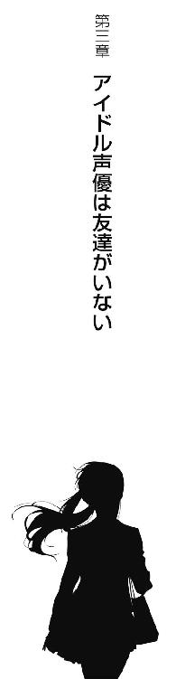

| 俺の教室にハルヒはいない【期間限定 無料お試し版】 | |
| 新井 輝 | |
| (2013) | |
俺の教室にハルヒはいない
新井 輝

角川スニーカー文庫
本作品の全部または一部を無断で複製、転載、配信、送信したり、ホームページ上に転載することを禁止します。また、本作品の内容を無断で改変、改ざん等を行うことも禁止します。
本作品購入時にご承諾いただいた規約により、有償・無償にかかわらず本作品を第三者に譲渡することはできません。
本作品を示すサムネイルなどのイメージ画像は、再ダウンロード時に予告なく変更される場合があります。
本作品は縦書きでレイアウトされています。
また、ご覧になるリーディングシステムにより、表示の差が認められることがあります。
＊この作品はフィクションであり、実在する人物・地名・作品名・登場人物・団体・あのハゲ・タマ姉たまんねえとは一切関係ありません。
「ただの人間には興味ありません。この中に宇宙人、未来人、異世界人、超能力者がいたら、あたしのところに来なさい。以上」
ちょっと前、なんだか寝付けず一階へ降りてきた時のことだ。
妹がもう真夜中だって言うのにリビングで熱心にＴＶを観ていた。
画面に映っていたのは黄色いリボンをつけた強気そうな長髪の少女。水色のセーラー服を着ていたので学生なんだろうことがわかった。
その長髪の少女は教室の真ん中でおかしなことを叫んでいた。
俺はそれだけ聞くとその場を離れた。でも後から思えばそれが原因だったのかもしれない。ちゃんとその前後を観ていれば、その言葉をずっと気にせずに済んだから。
ただの人間には興味ありません。
俺は廊下を歩きながら、その言葉を反芻し、一つの疑問を口にした。
「だったら、ただの人間はどうしたらいいんだ？」
もちろん答えはどこからも返ってこない。
それで、その疑問はずっと俺の胸に刺さったままになってしまった。
「......と」
その日、朝起きると妹がリビングで昨晩録画したらしいアニメを観ていた。
俺は基本的に学生が主役のフィクションが苦手だった。
好き・嫌いではなく、アレルギーと言ってもいい。受け付けないのだ。
でも妹は平気でそういうものを観る。むしろ好んで観る。
「なに？」
加えて、邪魔されるのを嫌う。
ま、それはそうだ。誰だって好きなことを邪魔されるのは好きじゃない。
「いや、別に......」
それで俺はうっかり観てしまわないように、回れ右をして飼い猫の下へと向かった。
「ギリギリ学園モノじゃないっぽいけど、ひどいとは思わないですか？」
この猫も妹が自分で世話をすると言って飼い始めたものだ。でも三ヶ月を待たずして餌やりは俺の日課になった。
まあ、かわいいし、苦にはならないし、いいのだけど、妹のそういう飽きっぽさはちょっと気になる。
ちなみに猫の名前はミケーネ。妹が三毛猫だからミケにしようとして、あまりに安易だろうと突っ込んだら、そうなった。妹はかわいいと主張してるが、俺はちょっとおどろおどろしい名前だと思ってる。
事実、最近はちょっと俺がかわいがりすぎたせいか、かなり重量が増えてしまってふてぶてしい感じになっている。
「そうは思いませんか、ミケーネさん？」
この猫もおそらく俺のことなど少しも尊敬しておらず、飯を出す執事かなにかだと思ってる。そんな気がするので俺も話しかける時は、ちょっと敬語っぽくなる。
そしてこの猫は、どうでもいいとばかりに「なぁ」と一声鳴いてご飯を食べ始めた。
もちろん俺だって猫が返事をしてくれるなんて思ってはいない。
ただ妹に言っても無駄だというのが痛いほどわかってるだけだ。
「早くご飯食べないと遅刻するよ？」
そして俺がミケーネさんに仕えてる間に妹は食事とアニメを観るのを終えたようだ。
「......だね」
もちろん、俺は「お前がアニメ観てたせいだろ！」などとキレたりはしない。
妹が悪いのではなく、俺がアニメを避けてるのが悪いのだから。
「じゃあね、ミケーネさん」
それから俺は時計を観て、妹が言うほど別に切羽詰まってるわけではないことを確認すると、入れ替わるようにリビングに入った。
そして少し冷めてしまったトーストをほおばると、テレビをつけ直してニュースをやってるチャンネルを探す。
これも別に世界情勢に興味があってのことじゃない。
静かなリビングで黙々と朝ご飯を食べるのがつまらないからだ。
事実、その朝だって興味深いニュースなんてものは、何もなかった。
「おはよ、ユウ」
「......え、うん、おはよう」
至って普通の朝の挨拶に、俺が言葉を詰まらせてしまったのは、ちょっと予想外だっただけで、俺が挨拶が苦手な若者であることとは関係ない。
「なに、その顔。話しかけたら不味かった？」
そして話しかけてきた相手は、俺が言葉を詰まらせたことよりも、顔の方が気になったらしい。
その相手、練馬カスガは、いわゆる俺の幼なじみというヤツだ。
向かいの家に住んでて、近場に他に同じ歳のヤツがいないこともあって小、中学生の時はよく一緒に登校していた。
高校も通学に面倒がなく、学力的にもちょうどいいところを選んだせいで同じところに通うことになったが、最近は俺が家を出るのが遅いせいか、カスガが先に行ってることの方が多くなっていた。
ちなみにカスガはかわいいと言っていい容姿の持ち主だ。
もっとも学校で一番とかそんなレベルではなく、クラスで三番目くらい。しかも今は別のクラスなので実際に彼女が三番目かどうかにも確信できてないと来ている。
「不味いことはないけど......かなり久々だな、と思って」
実際、家を出たらカスガが待ってたなんて随分と無かったはずだ。
というか来てるなら、チャイムを鳴らして欲しい。それとも今、ちょうど来たところだったのだろうか。
「うん......そうだね」
そしてカスガの認識もそうずれてるものではないらしく、追及はすぐに止んだ。
「今日はなんかあったの？」
今度は俺が質問をする番だった。
いつもならとっくに学校に行ってるはずのカスガがいた。それをただの偶然で片付けられるなら、そもそも驚いたりしない。
「うん......」
そして本当に何かあったらしい。カスガは言いよどんだかと思うと、少し無理に笑って、歩き出した。
「............」
まだ遅刻する時間ではないけれど、のんびり立ち話をしてる時間でもない。俺もカスガを追いかけるように歩き始めた。
「............」
「............」
「それは......いいニュース？ 悪いニュース？」
俺はカスガが一向に話を切り出してくれないので、それだけ確認することにした。
「いいニュースかな」
返事はすぐにあった。
「そう。ならいいんだけど」
ならいいと言いつつ、だったらなんで言おうとしないのかという疑問が浮かぶ。
とはいえ、さすがに長い付き合いなので、俺はなんとなくは理解していた。
話の内容自体は想像もつかないが、話したがらない理由の方はわかる。
カスガは恥ずかしがってるのだ。
カスガは女子だが比較的、背が高く、性格も男らしいところがある。
強気で言いたいことはズバッと言う。最近はさすがにそうでもないんだろうけど、小学生の頃は怒りを抑えるというのが苦手で、よく男子とケンカをしていた。
カスガはそういった男前な女子なのだ。
だから彼女が言いよどむ時は、逆に女の子らしい、かわいい話題に違いなかった。
とは言え具体的な内容までは俺にはわからない。なので照れてないで話して欲しいのだが、ことはそう簡単ではないらしい。
「............」
横からのぞき込むと、予想通りというかなんというかカスガの顔は少し赤かった。そして目もきょろきょろと動いてこの期に及んで言うべきか迷ってるらしいこともわかる。
「あのさ──」
このままではいくら待ってても話は始まらず、いずれ学校に着いてしまう。それを確信した俺は自分から口を開いた。
「カスガのいいニュースなら、俺も聞きたいんだけど」
「え？ うん......ありがと」
でも少し唐突だったらしく、カスガはそれだけ言うと顔を伏せてしまった。顔の赤さも増したみたいだ。
つまり、事態は悪化ということだ。よほど恥ずかしい話らしい。
俺はもう一度カスガの横顔を観て、それから時計を確認した。
「まだ少し時間あるから公園で寄り道でもする？」
「え？」
「いやだって、その話をするためにわざわざ俺が出てくるの待ってたんだろ？」
「それは......そうだよね、うん」
「このまま歩いて行ってもいいけど、学校が近くなれば人も増えるだろうし、知ってる人がいつの間にか、近くにいるかもしれないだろ」
「......うん」
カスガはやっと俺の提案の意味がわかったらしく、立ち止まった。
「っていうか、人に聞かれたくない話だって、どうしてわかったの？」
そして俺からすれば、随分と間抜けな質問をしてきた。
「言いたくなさそうだから」
「......だよね」
カスガは力の抜けた笑いを浮かべて、それから今更、俺に隠す無意味さに気づいたらしく、きりっとした表情に戻った。
「声優って知ってる？」
かと思うと、また随分と唐突な質問が飛んできた。
「声優？ 映画の吹き替えとかする人のことだっけ......」
なんとか言葉は聞き取れたけど正直、質問の意図がわからない。
およそ俺には縁の無い世界の話だ。
しかしここで興味ないという顔をしたら、カスガが顔を真っ赤にして走り去りそうなので頑張って考える。
「私、声優になれるかもしれないの」
でも答えは向こうから飛んできた。思っていた以上に、カスガの腹は決まっていたらしい。
「声優になる？ カスガが？」
一方、俺はあらぬ方向から飛んできたその言葉にどう対応したらいいかわからずにいた。
何かかわいい感じの話だろうとは思っていたが、声優？ なにそれ？ そんな話、今までカスガから聞いたことあったっけ？──と俺は記憶をどんどんとさかのぼっていく。
「......うん」
しかし聞き違いではないことがわかっても、今までのカスガの言動からはちょっと想像もつかないことだった。
「どういう話なの、それは？」
「えっと......実は私、中学の頃から、声優の養成所に通ってて」
本当に初耳だった。
「今度、オーディションを受けさせてもらえそうなんだ」
「オーディションをねぇ......」
俺はそう言いながら意味がわかってなかった。
カスガが養成所なるところに通っていたのも初耳だったし、そもそも声優を目指してるなんて聞いたこともない。
それに実に言いづらいことだが『オーディション』というのが何をするものなのかよくわかっていない。
話の流れから察するに、デビューできるかのテストということなんだろうか？
「あ、でも......多分、今回は受からないとは思うんだけどね」
などと考えていたら、あっさりと流された感じになった。
「そうなのか？」
「でもなんだろ、今まではただの夢だったのが、少し具体的になってきたというか、いつかじゃなくて多分、声優になれるんじゃないかって思えてきて、それでね......」
「それで俺に話そうと思って待ってたってわけか？」
俺は単に確認のつもりでそう言ったのだが、ちょっと聞き方が悪かったらしい。
カスガはまた急に恥ずかしいことをしてるという顔に戻る。
「......うん」
「恥ずかしがる話じゃないと思うけどな」
だから俺はこの幼なじみの勇気を褒め称えることにした。
「そう、かな」
「声優になりたいって言うだけなら恥ずかしいかもしれないけど、なれそうだと思えるまでは隠して努力してたんだろ？ むしろ格好いいんじゃないか、そういうの」
「そ、そうかな」
「というか、そういうことだったんだな」
「え？」
「中学の頃も時々、あらぬ方向に急いで走ってるの見かけたけど、あの時はもう養成所に行ってたんだ」
「......うん」
「そんな話、少しもしてくれなかったから俺、なんか避けられてるのかと思ってたよ」
妹のことを考えると、カスガがいかに男前な性格と言っても年相応の女子らしさによって、男子と距離を置くというのはむしろ自然な考えだった。
「......ごめんね」
でもカスガはまだまだ女子らしさを身につけきれてないらしい。
「いや、謝ることじゃ全然ないし、俺も勝手にそうかなって納得してたわけだから」
「うん。でもどうしてもただの夢のうちは言いたくなくて......それは私の勝手でしてることだし、それに......ユウには私が声優になることなんて関係ないし......」
しかしカスガは俺が思っていた以上に申し訳なく感じていたようだ。
「そりゃまあ、俺は声優のことなんてよくわからないけど、カスガが将来の夢を摑めそうって言うなら、もちろん嬉しいよ」
「......うん。ありがと」
カスガはまだ縮こまっていたけど、顔を上げた時にはそこに笑顔が戻っていた。
「それにしても声優かあ」
それで俺はホッとして、独り言のようにその単語を改めて口にした。
「......声優、嫌い？」
「嫌い......って言うか、よくわからないな、正直」
「まあ、そうだよね。私もアニメ観てても、声優って仕事があるのを意識したのは中学の頃だったし」
「ま、何もしてやれないけど、応援はするよ」
それが正直な自分の気持ちだった。
カスガが声優を目指してたなんて知らなかったけど、彼女が自分で選んで、実際にもうその入り口に立ってるというなら、素直に応援してあげたかった。
「うん」
カスガは俺の言葉に小さくうなずくとまた歩き出した。
言いたいことは言ったみたいだなと俺は安心して後に続くことにしたのだが──。
「あ、もう一つだけ！」
カスガがいきなり足を止めた。
「......なに？」
「ねえ、ユウ」
「うん？」
「また声優の話、聞いてくれる？」
改まって言うから何事かと思ったけど案外、普通の話だった。
「別にいいけど」
「......よかった」
でもカスガにとってはかなり重要な話だったらしいことが、彼女のリアクションでわかった。心底ホッとした。そんな顔をしている。
「声優の話、まだユウにしかしてないんだ。断られたら別の誰か探さないといけないと思うともう絶望だよね」
「......そんなに言いたくないことなのか、これ？」
「そりゃ、そうだよ......だって私が声優だよ？」
俺がカスガに共感できないのは、俺が声優の仕事をよく知らないからだろうか？
「声優って恥ずかしい仕事なのか？」
「そ、そうじゃないけど......」
「じゃあ、かわいい仕事なんだな」
俺はそう言うと、もうカスガの返事を待たずに歩き出した。
「ちょ！ それどういう意味⁉」
案の定、カスガは納得いかないという声を上げて追いかけてきた。
でも怒ってるのではないのはわかった。
「ねえ？ どういう意味なの！」
耳に届くのはいかにもカスガらしい元気な声。
だから俺はもう振り向かず歩いた。
＊ ＊ ＊
「ふむぅ......」
でも登校してしばらくすると俺の心はどよよんと沈んでいた。
自分の席に座ってまもなく、始業のチャイムを待たずしてなのだから、なんとも友達甲斐のない人間だよなあという気がする。
と言っても、別にカスガのことを応援したくないとかそういうことではない。素直にカスガの将来の夢は応援したいと思ってる。そのはずだ。
だからこうなったのは、きっとこれは学園モノアレルギーの一種なのだ。
おそらく、声優とか夢とかそのあたりが、現実感がなくて、まるでフィクションみたいな錯覚を覚えてるのだろう。
「どうしたの、暗い顔して？」
そして程なくしてそう尋ねられてしまったのだから、俺はよほど顔に出してしまっていたのだろう。
「......ちょっとね」
視線だけは上げて声の主を確認してみると俺の級友の一人、清澄だった。
清澄は普段通りというのも変だが、事実その通りなのでそう言っておくが、ジャージ姿でそこに立っていた。
清澄は女子なのだが、実に少年らしい外見をした女子だ。可能な限りジャージを着ているところからもわかる通り、意図的にそうしている。
髪は後ろ姿からでは少年と見間違う程に短いし、体型も女性らしさを感じさせない。服装も極力、制服は着ない。
というか俺は清澄がスカートを穿いてるところを見た記憶が無い。清澄はバドミントン部の朝練のために俺なんかよりもずっと早く登校して、そして部活をしてから帰ってる。その間、ずっとジャージなのだ。
登下校の最中ならさすがに制服を着てるはずだが、そういう現場に俺が遭遇することは今後も無いだろう、きっと。
そんなわけで俺は清澄のことを「女子でいたくない女子」と認識していたし、男子の一人として扱うことにしていたし、清澄もそれを望んでいるらしく俺に普通に話しかけてくるというわけだ。
「女の子にアタックして玉砕した？」
だから清澄がそんな恋愛相談みたいなことを言い出した時は俺は正直びっくりした。
「アタックもしてないし、玉砕もしてない」
でもすぐにこれは男同士の馬鹿話と同じなのだろうと理解した。
「でも今日は珍しく女の子と登校して来てたよね？」
「......見てたのか？」
というか珍しくってなんだ。いや、事実、俺は女子と一緒に登校なんてしないが、その言い方はないだろう。
「ちょっと見かけただけだよ。仲よさそうに歩いてるから誰だろうと思ってたのに、今、こうして凹んでるってことは......」
「だからアタックもしてないし、玉砕もしてない」
「じゃあ、何なの？」
「それは......」
言いかけて、カスガが声優になる話はおそらく秘密なのだろうと気づいた。
いや、本人が話したがってないだけかもしれないが、俺の口から出たその情報が知れ渡ってカスガの下にその真偽を確かめるために人が集まるようなことになったなら俺はおそらく殺されるだろう。
「それは何なのかな？ 俺もその答えを聞きたいね」
答えに窮してる俺と清澄の間に入ってきたのは白河だった。
こっちは間違いなく男で、そして俺の悪友と言っていい。白河は女子に関心ありありで常日頃から女子の品評に余念がなく、結果、女子から感心されてない。つまりモテたがってるがモテないタイプだ。
「聞いてたのか？」
俺は答えるよりまずその疑問を口にする。
「ああ、聞いていたし、お前が女子と登校して来るのも見ていた」
それに白河はなぜか自信満々に答える。
「そんなに目立つのか、俺とカスガは......」
「ほう、カスガと来たか」
白河の目に怪しい光が宿るのが俺にも見えた。
「あの美少女の名前は練馬カスガ。つまり、カスガって言うのは姓名で言えば名の方だぜ、清澄」
「仲良く見えただけじゃなくて、けっこう仲いいみたいだね」
となりで清澄もにやりと笑う。こういうところ、男子だよな、清澄は。
「まあ、一応、幼なじみだし......」
「幼なじみだとぉ？」
その単語が白河のヤツはえらく気になったらしい。
「すると何か？ お前はあの推定Ｇカップの美少女と生まれながらに仲良くなれる立ち位置にいたということか？」
「......単に向かいに住んでるってだけなんだが」
「だがその地の利によってお前はあの推定Ｇカップの美少女と仲よさげに登校して来たわけだろうが！」
「そう、なのかな......」
というかさっきから連呼してる、推定Ｇカップってのはなんなんだ。
「ところで、その推定Ｇカップって？」
清澄も同じところが気になってたらしい。
「俺はこの学校でＤカップ以上と目されてる女子の顔と名前は全部把握してる。そして遠慮がちに推定とは言ってるがほぼ正解だろうという確信が俺にはある」
そして白河はそれが誇らしげなことであるかのように答えた。
「うわ......前から思ってたけど白河ってそういうところ最低だよね」
「何を言う。巨乳は人類の宝だ！ それが美少女のものなら、なおのことだろうが！」
「......そうかなあ」
清澄はげんなりした調子でつぶやく。俺も清澄派だ。
って言うか、カスガがＧカップ？ よくわからないが、それってかなり大きいという意味ではなかったか？
Ａ、Ｂ、Ｃ、Ｄ、Ｅ、ＦでＧだろ。白河がＤカップから把握してるということはＤですでに巨乳ってことなんだろうから......。
「ちなみに清澄はＤカップに遥かに及ばないがちゃんと名前を覚えてるぞ」
白河からすれば友情の告白だったのだろうが、明らかに逆効果だった。
「......あっそ」
さっきまで悪口言いながらも笑ってた清澄が真顔になった。
「とにかくカスガとは家が向かいだから、タイミングが合えば一緒に登校することもあるってだけだよ」
なので俺は慌てて話題を元に戻した。俺的にはあまり触れたい話題ではなかったけど、これ以上、清澄が引く話題を続けるよりは遥かにマシだ。
「でも仲はいいんだろうが！」
しかし白河のヤツは思い出したように怒り、俺に嚙みついてくる。助け船を出したりするんじゃなかった。
「......まあ、それなりにはねえ」
「ってことは別に付き合ってるとかではない？」
「今日は久しぶりに話したくらいだし」
「なるほど」
白河がにやりと笑うのが見える。それで俺は何を言い出すのか大体わかった。
「じゃあ、俺に紹介してくれ！」
「断る」
だから返事を悩む必要はなかった。
「なぜだ！」
「むしろこの流れで俺がイエスと言うと思った方の理由を聞きたい」
「俺たち、友達だろう？ 友達なら俺の幸せに協力してくれてもいいはずだ」
「ああ。友達だな。でもな、だからこそわかることってのもある」
別にカスガに他の男と付き合って欲しくないなんて言うつもりはないが、白河だけはあり得ないと言っていい。
「お前が紹介して欲しいのはカスガじゃなくて、Ｇカップの方なんだろ？」
それがわかってて幼なじみを紹介する馬鹿はさすがにいない。
「そりゃそうさ」
なのに白河は自慢げにそう答える。
「だったら紹介したくないのはわかるだろ？」
もう少し取り繕おうという考えはないのだろうかと思ったりもするが、趣味と主義はともかく白河のそういうところは俺は嫌いじゃなかった。
「しかし練馬カスガなら俺は顔も大事にするぞ」
「......中身も大事にしてくれ」
「んなこと言われたって話したこともないんだ。知らんものは大切にするとは約束できんだろうが」
「ま、それはそうかもな」
「だからまず紹介してくれ」
「でも断る」
「なぜだ！」
「そりゃお前に紹介しても中身をおろそかにするのが目に見えてるからだ」
「じゃあ何か？ お前から見て練馬カスガという女の中身は尊重するに足らないしょうもないものだとでも？」
そう言われれば確かにカスガのことを知れば考えが変わらないことも無いとも思う。でも答えは変わらない。
「俺とお前を一緒にするな」
「おい！ それはさすがに聞き捨てならんぞ」
白河は半ギレで抗議しようとするが、清澄はそれを遮る。
「でも私もかわいい女友達を白河には紹介したくないかな」
「......むぅ。信用が無いんだな、俺」
いや、むしろ信用はしてる。巨乳が大好きで他は比較的どうでもいいと思ってるということに関しては、だが。
そんな会話をしてる間に予鈴が鳴った。それで真面目な生徒は自分の席に戻るが白河はもちろんそんなことはしない。
「どうやら今日も『涼宮ハルヒ』は来ないみたいだな」
どころか白河は俺の席の後ろを見ながら悪態をつく。
「......だな」
涼宮ハルヒというのは『涼宮ハルヒの憂鬱』という作品のヒロインだ。だから後ろの席が本当に涼宮ハルヒの席という訳はない。にもかかわらず、白河と俺の間でその席が涼宮ハルヒの席になってるのはそれなりに理由がある。
一つは、『涼宮ハルヒの憂鬱』の作中で涼宮ハルヒが座ってるという窓際の一番後ろの席だから。
そしてもう一つは、その席の持ち主は入学してから二ヶ月ほど経つというのにまだ一度も登校して来ていないからだ。
それで、入学するだけして全く登校してこないこの謎の少女を白河は『涼宮ハルヒ』と称してるわけだ。
「ここまで来るとホラーだよな」
確かにそういう気にもなる。
「実は幽霊の席とか、な」
俺の聞いた限りではこの席の持ち主は乃木坂マナミなる名前の女子で、中学の頃も休みが多かったという話だった。よほど病弱なんだろうか？
同じ中学の人間に写真が無いのか聞いたが、行事がある時に全然来てなかったので卒業アルバムにも写ってないらしい。
ホラーとか幽霊とか言う話かどうかはともかく、それなりにミステリアスな人物ではあるようだ。
「そんなこと言ってると登校して来たら顔合わせづらくなるよ」
清澄は俺たちのそういうおふざけはあまり好ましく思ってないらしい。
「ま、そうかもしれないけど、困るのはコイツだけだろ。俺、席遠いし」
それで白河は自分は関係ないとでも言いたげな態度だ。ならばと俺は離れていけないように白河にキーワードを投げつける。
「ひょっとしたら『涼宮ハルヒ』は巨乳かもしれないぞ」
「何⁉ 確かにアニメではそれなりに大きい設定だったが......しかしあれはあくまでアニメの話......」
本気で釣られた白河を清澄は冷淡な目で見ていた。
「白河って本当、最低だよね。日本人女性でＤカップ以上なんていくらもいないんだから、普通に考えたら、まずありえないよね」
「そう！ 確かに理屈ではそうだ。俺が巨乳と認める女子はむしろ少数派。どころか、ごく少数、いや！ ごくごく少数と言ってもいい。だがな、会ったことのない女子はすべからく巨乳だと信じるのが男のサガなのさ。な、お前もそうだろ？」
「いや、俺はそうは思わないな」
もしそうなら俺は今朝、登校してくる時に、カスガがＧカップかそれに近いバストサイズの持ち主だと気づいたはずだ。
「なんだお前は！ それでも男か！」
「至って普通の男のはずだけどな」
「普通の男なら俺の味方のはずだぜえ！」
白河はよほど納得がいかなかったらしくすごみながら俺の顔をのぞき込んできた。
「......残念だが俺はあまり胸に興味が無いらしい」
「そうか。なら、俺からお前に言うべきことがある」
白河はすごむのを止めると、直立不動の姿勢になった。
「練馬カスガさんを僕に紹介してください！」
そして深々と頭を下げてそう願い出た。
「断る」
しかし俺の答えは変わらなかった。
＊ ＊ ＊
放課後、カスガが俺のクラスにやって来た時、白河のヤツはちょっとしたパニックになった。
おかげで俺はそそくさと学校を後にすることになってしまった。
「面白い人だね、白河君って」
校門を過ぎた辺りでカスガは笑顔でそんなことを言い出した。
カスガが教室に来た時、白河がしたことと言ったら、俺の親友だと猛烈にアピールすることだった。
その猛烈ぶりはまだ家路についてないクラスメイトの注目を一身に集める程で、それはもう明らかにやりすぎというくらいだったのだが......それを面白いと受け取るならカスガは案外、図太い人間であるらしい。
「......まあ、面白くはあるが」
もっとも白河に対する評価は俺もそう違いはしない。そうでなければ俺だって教室で話すこともないだろう。しかしそれはあくまで俺が男子だからであって、女子のカスガから見たら、そうでもないんじゃないかとも思う。
「迷惑だった？」
カスガは俺の微妙な反応を俺が怒ってるせいかもしれないと考えたらしい。
「迷惑？」
「無駄に目立っちゃったみたいだったし」
「まあ、あれは白河のせいだし」
元を正せば、カスガが俺と一緒に帰ろうと誘いに来たせいなのだが、それをいいことに猛烈に食いついたのは白河なわけで、俺的には白河の対応が異常だろうと思っていた。
「というか、あれはなんだったの？」
「白河は──」
俺は正解を言いかけて慌てて止めた。
なにせ白河はカスガの胸（推定Ｇカップ）を狙ってるだけなのだ。
「白河君が？」
だがカスガは言いかけたまま止めたことには気づいてたようだ。
「いや、その、なんだ......」
そして俺は答えていいものか決めかねて、そのせいでまったくもって無意識な行動として視線で正解を指していた。
「ん？」
だがカスガは俺の行動の理由まではわからなかったようだ。
それで俺は白河の言っていたことが、ヤツの願望によって視覚情報がねじ曲げられてるわけでもないらしいことに気づくことになった。
Ｇカップというのがどれほどの大きさを指すことかはわからないが、カスガの胸は制服の上からでも十分にわかるくらいの圧巻のボリュームだった。
確かにこれは学校でも有数の大きさに違いないと確信させるものがある。
「なに？」
しかしそんなことがわかったところでカスガの質問の答えにはならない。むしろ気分的には遠ざかったと言った方がいいかもしれない。
「いや、だから......だな......」
カスガが自分の胸のことをどう考えてるのか俺には正直わからなかった。
すごく気にしてるのかもしれないし、まったくどうとも思ってないのかもしれない。
俺はカスガの胸が大きいことに今の今まで気づかなかったのだから、そんなことわかるわけもないのだ。
「もしかして胸の話？」
そんなこと思っていたら、カスガの方から振ってきた。
「おおう⁉」
「違うの？」
「いや、違わないけど......そういう話をしていいものかどうかと思って......」
俺は自分がもうカスガの胸を見ていないのを確認しながら、カスガの顔を見た。
カスガは笑っていた。どうやらあまり気にしていないらしい。
「もう慣れた。目立つもんね、これ」
カスガは苦笑いを浮かべながら右手で胸を少し持ち上げた。
「いや、俺は今日、白河に言われるまで気づかなかったけど......」
どうやらカスガは不本意ながら自分の胸の存在を認めてるということらしい。
なんというか、いちいち気にしてられないということなんだろう。
「ユウの頭の中だと私は昔のままなのかな」
「......今、絶賛更新中ってところかな。実際、もう一緒に帰ることなんてないんだろうなあって思ってたし」
「そうだね」
カスガはそう言って立ち止まった。
別に俺の言葉に含むところがあったわけではなく信号が赤だったからだ。
「ここでお別れだね」
カスガは家とは違う方向をチラッと見た。
「ああ、このまま声優の学校に行くのか」
「うん、養成所ね。一緒に帰ろうって言うほどの距離じゃなかったね」
カスガが少し悲しげな表情を浮かべたように見えた。
きっとカスガは俺に迷惑をかけたと思ってるんじゃないかと感じた。
これだけの距離を一緒に歩くだけのために、白河が一騒動起こしたことに責任を感じてるのだろう。
「駅まで一緒に行こうか？」
気づけば俺はそんな提案をしていた。
「え？ 何か用事でもあるの？」
「別に帰って何するでもないし、駅まで行ったって遠回りって程でもないし」
実際、俺にはカスガみたいな追いかけてる夢もないし、帰り道にしたって十分が十五分になる程度のことだ。
「それはそうだけど」
「俺はもう少しカスガと話したいんだけど。それとも迷惑かな？」
「迷惑なら、最初から一緒に帰ろうなんて誘わないよ」
カスガがそう答えた時、信号が青になった。
だから俺たちは二人で駅の方へと向かった。
＊ ＊ ＊
「そういえば、帰りってけっこう遅いのか？」
その疑問が浮かんだのはもう視界の向こうに駅が見えてきた時だった。
「そんなに遅くはないかな。レッスンは三時間くらいだし、場所も渋谷だから」
カスガは大したことないみたいな言い方をしたが、ここからだと片道三十分くらいかかるし、往復なら一時間。それにレッスンが三時間というのもただの学生に過ぎない俺からするとけっこうな時間のように感じる。
「じゃあ夕飯はレッスンの後、仲間と食べたりするわけ？ 今日の反省会みたいのしながらとか......」
タイミング的にそんなもんだろうと思って言っただけなのだが、カスガの表情が曇るのが見えた。何か俺は変なことを言ってしまったらしい。
「前はそういう感じだったけど」
「......何かあったのか？」
「別に何かあったわけじゃないし、楽しかったんだけどね、そういうの」
「声優のことはわからないけど、同じ夢持ってる仲間とご飯とかいかにも楽しそうだけどな」
そこまで口にして、別にカスガは楽しいこと自体は否定してないことを思い出す。
「でも、楽しいのは違うかなあって、ある日、思っちゃって」
「はあ」
楽しいけど違う。その意味が俺にはちょっとわからなかった。
「レッスンもね、できないことをやってる時は苦しいんだよね。不器用な自分が本当に嫌になるし。でもそれができるようになった時、すごく嬉しい」
「まあ、それはなんとなく」
「だから私、途中が楽しいって違うんじゃないかって思ったの」
「......途中が楽しいねえ」
「それってもう出来ることをしてるよね。楽してるってことだよね」
「楽って書いて、楽しいって言うもんなあ。それでカスガはこのままじゃダメだって思ったってことか」
声優になりたいという話を聞いたのは今日が初めてだったけど、カスガはもうずっと前からそこに向けて頑張っていたんだなということを改めて感じる。
「確信持てないし、性格悪いなって思ったりもするんだけど......」
でもカスガは俺が感心したほどは自分の行動に自信を持っていないらしい。
「俺はそれで間違ってないと思う。カスガは声優になりたいのになれてないんだから、力足りてなくて悔しいはずだし、焦ってないとおかしいだろう」
「......そうなんだよね」
カスガは曇ったままだった。でも何か言いたいことがあったらしく言葉を続ける。
「私が通ってる養成所は全部で三百人くらいなんだ」
「......三百人もいるのか。声優って随分と人気の職業なんだな」
「うちの養成所は少ない方だよ。二千人いるところもあるし」
「他にもいろいろあってその数なのか......すごい世界だな」
「でもそれだけいてもデビューできるのは百人に一人くらい。うちだと一年に三人いればいい方なんだって」
「そんなに少ないのか」
「しかもデビューすればそのままやっていけるってわけでもなくって......多分、生き残れるのは一人いるかいないか」
「......それは相当な競争率だな」
つまりカスガはそのいるかいないかわからない一人になろうとしてるということだ。だとすれば今日の今日まで黙っていたというのもわかる気がした。
「レッスンの後、みんなで話するのは楽しい。でもね、みんなと同じにしてるのは、そこにいて楽しいのは違うって思ったんだ」
カスガはそんな自分の決断を少し悔いてるのかもしれなかった。
いるかいないかわからない一人になろうとしてるのだから、他の人と同じことをしててもしょうがないというのは間違ってないと思う。
「本気なんだな」
俺はそう正直に思った。
カスガは今の楽しさよりも、自分の夢を選んだ。しかもカスガの話の通りなら、叶うかどうかすら怪しい夢を。
俺がカスガの立場ならきっと気づかないふりをしていただろう。
一緒に頑張ることがプラスになると信じて、その場に居続けただろう。
みんながそうしてるのだから、きっと他の人だってそうするだろう。
「うん」
でもカスガはそれを潔しとしなかった。
楽しいから違うと、その場から離れるのを選んだ。
それは無言で、他のみんなを否定したということだ。
「............」
その覚悟に俺は言葉を失ってしまった。
カスガは声優になりたいわけじゃなく、なるつもりなのだ。そのためなら、周りの人間を敵に回すかもしれない決断をしたということなのだ。
「ユウ、私って性格悪い......よね」
カスガは俺が何も言わないので引いたと思ったらしい。
それも不思議はないと思う。
養成所の仲間の大半をそれは違うと捨てたも同然の状況だ。
でも俺は別に引いたわけではない。
むしろ感動したのだ。カスガの本気に圧倒されたのだ。
「応援するって言っただろ」
だから俺は急いで誤解を否定しなければと思った。
「うん」
カスガが初めて安堵の表情を浮かべた。
「途中が楽しいのは違うっていうカスガの考え、俺は間違ってないと思う」
「そう、だよね」
それでカスガの歩みが軽やかになるのを俺は感じた。
カスガが本当に聞いて欲しかったのは、声優になるとかそういう話ではなく、このことだったんじゃないかと思った。
「今日はいろいろ、ありがとうね。元気出た」
「別にこの程度ならいつだって言ってくれればするけど」
というか俺はカスガがもう俺を嫌ってると思ってただけで、俺に対して距離を置いてたわけではないのだ。
「いつもだと、ちょっと申し訳ないかな」
でもカスガは遠慮がちな言葉を返す。
楽しいが違うと考えたカスガらしい考え方だとも思う。
「ま、いつもだと俺も困るけど」
だから俺としてもそういうことにしておく。
「だよね」
「でもさ、帰りが遅くなって、一人の帰り道が不安だったら呼んでくれていいんだぜ」
「迎えに来てくれるの？」
「不安だったら、だけどな」
俺はそうは言いつつ、カスガが不安だからって俺を呼び出すとは正直、思ってはいなかった。
カスガは自分で夢を見つけて、そのためなら辛い選択だって出来る人間なのだから。
「ユウの家に電話すればいいの？」
でも俺の認識はちょっと違っていたらしい。
「......いや、どうだろ」
だから俺はカスガの質問に戸惑う羽目になってしまった。
「というかユウって携帯とか持ってるの？」
「持ってるよ」
確かに俺はいわゆるスマートフォンを持っていたが、ほとんど使っていなかった。
基本的には家事をさぼっている俺を妹が呼び出すための道具である。
しかしそんなことを正直にカスガに話す必要は無い。俺はただ黙ってポケットから出してカスガに見せる。
「じゃあ番号教えて」
そしてカスガもいつのまにか似たようなものを持っていたらしく、俺たちは番号を交換することになった。ついでにメールアドレスというヤツも。
「......と、これでいいのかな」
とりあえず、今日のことは白河には黙ってた方がよさそうだと確信した。
「うん。迎えに来て欲しい時は渋谷で電車に乗る前にかけるから」
そして案外、カスガが本気で俺を呼び出すつもりらしいことを知る。
「それなら俺が準備して家出ればちょうどくらいかな」
「でしょ？」
カスガはそれで満足したらしく、レッスンに向かう気分になったらしい。
「じゃあ、また明日ね」
カスガはそう言って笑顔で俺に手を振った。
「今日はとりあえず呼び出されないってことか」
「多分ね」
しかしカスガとの会話はそこでは終わらなかった。
「あ、ユウ、スマホ持ってるなら、ツイッターやってる？」
「ツイッター？」
聞いたことのある単語だったが、それ以上の意味のある言葉ではなかった。
つまり、俺はその日までツイッターはやっていなかった。
＊ ＊ ＊
「ふぅ......」
移動中のカスガからのメールに従い、俺はツイッターデビューを果たした。
ツイッターというのは、いわゆるソーシャルネットワークの一つで、百四十字だかの文章を投稿する掲示板みたいなものらしい。
その人をフォローすることで、放っておいても自分のところにその人の文章がやってきて読むことが出来るというわけだ。
「理屈はわかったけど、誰をフォローしたいわけでもないからなあ」
ツイッター自体、存在は知ってたけど興味の無かった俺がフォローしたのは結局、カスガだけだった。
なので当然、俺が読めるのはカスガの書き込んだ文章だけだ。しかもカスガも最近、始めたばかりらしく、それを読むのにいくらも時間がかからなかった。
「ふむ......」
少し俺の気を引いたのは、カスガの自己紹介欄に声優志望と書いてあったことだ。
「フォロワーは俺でちょうど百人目か......」
自分のことをフォローしてる人をフォロワーと呼ぶらしいが、カスガのそれはちょうど三桁になっていた。それが多いのか少ないのかはわからないが、クラス二組以上の人数と考えるとちょっと多いように俺には思えた。
ちなみに俺のフォロワーはもちろん一人、カスガだけだ。
「白河に教えるとカスガに絡んでいきそうだしなあ......」
そしてそれを増やそうにも身近な人間に話をするのは具合が悪そうだった。
カスガは本名でやってるわけではないが、俺が唯一フォローしてる相手が何者なのか白河ならすぐピンと来るだろう。そうなればカスガが声優志望だってこともすぐ知れる。
「......となるとこれはカスガとの連絡用ってことか」
だが連絡用ってだけならメールで十分なわけで、じゃあなんのために設定したんだろうと思えてきた。しかし考えてもわからなそうなので、俺はアプリを終了させる。
「......ふぅ」
それで現実に戻ると俺はまた朝方、教室で座った後のような気持ちになった。
要するに気分が沈んできたのだ。
状況的には似ている。カスガと話してから別れて、現実に戻った。
別に言い訳する必要も無いが、俺は別にカスガにいい格好をしようとして無理をしてたわけではない。だから緊張が解けて力が抜けたみたいなことではないはずだ。
そもそも俺は別にカスガと話してて緊張なんてしてなかった。むしろ向こうが柄にもなく緊張してたので戸惑ってたくらいだ。
「だったら、なんでこんなに俺は......」
自分の意思とは裏腹に凹んでいく気持ちを俺は嘆こうとして、頭が急に左方向に吹き飛ばされるような感覚を味わった。
それが何かわからないでいるうちにじわりと右のこめかみに痛みが走る。しかしその理由は俺にはわからなかった。
「あちゃっ！」
誰かが上げた驚きの声を最後に俺の意識はしばらく飛ぶことになったからだ。
意識を取り戻してすぐ、俺は一人の女性と知り合った。
名前は上野マコト。歳は俺よりかなり上らしい。服装はちょっとパンキッシュで髪も茶色に染めてるみたいだが、大人の女性って感じだった。
「いやあ、ごめんねえ」
ちなみに俺を不意に襲った謎はあっさりと解決した。
この今、自分に謝っている女性、マコトさんが怒りを込めて空き缶を蹴ったものが俺に当たったのだ。
当たった結果、俺の頭は左方向に吹き飛び、当たった場所に痛みが走ったのだ。
意識が飛んだのもほんの数秒のことらしい。
ぼーっとしてる俺を心配して、というか責任を感じてマコトさんは病院まで連れてきてくれたのだが、医師の判断は放っておけば治るでしょう程度のものだった。念のため、包帯は巻いてくれたが邪魔なら取っちゃっていいとも言われた。
「いや、本当、問題なかったみたいですし」
言っても空き缶がぶつかっただけ。ちょっと頭がしびれた程度のものだ。それでここまで大げさにされるとこっちが逆に恐縮してしまう。
「でも頭だからね、ぶつかったの」
「問題ないってお医者さんも言ってたじゃないですか」
「ま、そうなんだけど」
マコトさんはそう言いながら、まだ納得してないと言う顔をしていた。
「何ですか？」
「なんかずっと元気なさそうだから」
「......ああ、そういうことですか。でもこれはマコトさんのせいじゃないですから」
その言葉でマコトさんは少し安心した様子を見せた。
「でも元気がないのは事実、と」
「それは、そうですね」
「じゃあ美味しいご飯を食べに行こうか」
「へ？」
「怪我させたお詫びもかねて私が奢るから」
「いや、そこまでしてもらわなくてもいいですよ」
すでに何度かの謝罪で恐縮してるというのに、奢ってもらうのはかなり気が引けた。
しかしマコトさんはそんなこっちの思惑なんてどうでもいいみたいだった。
「一人だと美味しくないんで、誰か付き合って欲しいってだけなんだけどね。一応、誰かいないか電話してみたんだけど、みんなタイミングが悪いみたいでさ」
「......で、俺ですか？」
「ま、これもなんかの縁でしょ？」
そう言って笑うマコトさんは、まるで子供のようだった。
だから俺はこの人が何歳くらいの何をしてる人なのかと考えてしまう。
（案外、そんなに歳離れてないのかな？ 仕事帰りにしては服が私服っぽいし......大学生とか？）
「っていうか、実際無理があるわけよ。週に五回締め切りがあるのよ、週に五回」
「......はあ」
マコトさんが俺を連れて行ったのは、地下にある軍鶏料理のお店だった。
マコトさんはそこの女将さんと顔なじみらしく「あら、また来たの？」なんて言われていた。
料理は確かにマコトさんが自慢するだけあって美味しかったのだが、問題はお酒を飲んだマコトさんが愚痴を言い始めたことだ。
「しかもその締め切りのための打ち合わせがそれぞれあって、それがまた五時間とか六時間とか平気でかかるわけよ。それで一体、いつ仕事しろってのよ？」
「大変そうですね」
俺は調子を合わせながら、あまり具体的にはマコトさんの仕事のどの辺りが大変かわからないでいた。
というかマコトさんがなんの仕事をしてるのかもわからなかった。
なんとなくわかったのはマコトさんはどこかの会社員とかではなく、フリーで仕事をしている人間だということだ。それで週に五回の締め切りに追われてるということは、きっとかなりの腕を認められてる人なのだろう。
「しかもさあ、打ち合わせの打ち合わせみたいのまであって、そこでの話が肝心の打ち合わせで全く生かされなかったりするわけよ」
「......打ち合わせの打ち合わせですか」
マコトさんが忙しく、ストレスがたまる一方なのだろうことは俺にもわかった。
だから俺は素直にマコトさんに相づちを打つことにする。
「あのハゲが、人の話聞かないって言うか、わかってて無視するって言うか。あ、あのハゲって言っても本人の意思で剃ってる人間のことだから、髪の毛が不自由な人間を馬鹿にしてるわけじゃないからね！」
よくわからないところで言い訳された気がして俺はどう反応したものかと思った。
「......特定の人間を指した言葉なんですね」
「そうそう。名前言っても少年にはわからないでしょ？ それでわかりやすく『あのハゲ』って言ってるだけだから。別に私は髪の毛が不自由な人のこと悪く思ってるわけじゃないから」
「で、その『あのハゲ』の人がどうかしたんですか？」
とにかく馬鹿にする意図は無いということが大事らしいとわかったので、俺は話の先を聞こうとしたのだが、マコトさんは急にそれを否定し始める。
「あのハゲがどうかしたか？ んなことどうでもいいでしょうが！」
「......どうでもいいなら、それでいいんですけど」
思いの外すでにかなり酔っているのかもと俺は思い直した。量的にはまだビールジョッキ一杯目だが元々弱いのかもしれない。
「それより何より、少年がなんで凹んでたかってことでしょ！」
「はあ」
そういえばそんな話だった気もするけど、すっかり忘れ去られていたので一緒にご飯を食べるための口実くらいに思っていた。
「女の子に告白して振られた？」
「......いや、告白してもいないし、振られてもいないんですけどね」
なんか朝も似たようなことを言われたなと思い出す。
「じゃあ、なんで凹んでたのよ？」
「それが......自分でもよくわからないんです」
朝もそうだったことを考えると、カスガと話したことが理由なのだろうことはわかる。でもカスガに何か嫌なことをされたわけではない。
なのになぜか二回とも話し終えたら気分が沈んだ。
だから自分でもわからないとしか言いようがなかった。
「じゃあ、もっと悩め」
そしてマコトさんの反応はそれだった。
「もっと悩め......ですか」
「自分でもわからないこと、他人の私がわかるわけないでしょ」
「......そりゃそうですよね」
だったらなんで聞いたんだろうという気もしないでもないが、俺は確かにその通りだと思った。
「まあ、私の方が年上だから、似たようなことで悩んでれば、少年の悩みに先輩としてこうやって解決したという話は出来るかもしれない」
「経験談ですね」
「でも、そうしろって言われて、そうですねで解決するのかい？」
「......出来ない気がします」
「だろ？ こういうのは自分で納得するしかない。だから私に言えることはただ一つ──もっと悩め」
「自分で答えを出せってことですか」
「ま、話し相手になってその手助けくらいは出来るけどね。でもそういう時って、話し相手なんて壁テニスの壁と同じだからね。一人で工夫しながら壁に向かってボールを打ち続けてるだけだから」
「壁テニスの壁、ですか」
確かにさっきまでの自分を思い起こすと、マコトさんの話を聞いてるようで俺はただボールを跳ね返していただけだった。
さっきまではマコトさんがボールを打ってたけど、今度は俺の番と言うことか。
「そ、だからとにかく打って来いってことよ」
「はあ......」
とは言え、とっかかりもないしと思ったところで、俺はあるキーワードを閃いた。
「俺、どうも学園モノにアレルギーがあるみたいなんです」
「......学園モノにアレルギー？ なにそれ？」
「マンガでもライトノベルでもアニメでもいいんですけど、学園モノの作品を観ると後で凹むんですよね」
「つまり少年は学校でそれを観たので凹んでるわけ？」
「いや、凹むのわかってるので観ないようにしてるし、今日も観てないんです」
「だったらなんの関係が？」
「いや、俺もよくわかってないで言ってるんですけど......そのことと今日、凹んでることになんか関係あるんじゃないかなって」
「ま、関係あるかもだけど、しかしなんでそんなアレルギーに？ 小さい頃からずっとそうなの？」
「いや、そういうわけでもなくて、多分、深夜に妹が観てたアニメが原因なんですよ」
「深夜アニメねえ」
マコトさんはその言葉に少し落ち着かない様子を見せた。
「けっこう有名なアニメらしいんですけど、マコトさんは知ってますかね？ ヒロインっぽい女の子が『ただの人間には興味ありません！』って言い出すヤツなんですけど」
「『涼宮ハルヒの憂鬱』だ。ライトノベル原作じゃ一番有名な作品の一つかな」
マコトさんの言葉に俺はちょっとした驚きを覚えていた。
「え？ あれ、『涼宮ハルヒの憂鬱』だったんですか？」
「ん？ 『涼宮ハルヒの憂鬱』のことは知ってるのに、その台詞でわかってなかったってこと？ そんなことあるの？」
「俺のクラスの窓際の一番後ろの席が空いてて、友達がそこを涼宮ハルヒの席って言ってるんですよ」
「まあ、アニメの主人公やヒロインはそこに座ること多いけど」
マコトさんの反応を見るに、その知識は間違っていないらしい。
「でも俺が観たアニメでは確か、クラスの真ん中辺りの席で、しかもその娘は髪長かった気がするんですけど」
「その記憶も間違ってないと思う」
「でも涼宮ハルヒの席は窓際の一番後ろですよね？」
それが確かなのに、記憶も間違ってないというのは俺には理解しかねた。
「あー、それね。あの後、席替えすんの。あと、髪も切るから」
しかし答えはびっくりするほどあっさりしたものだ。
涼宮ハルヒの席は席替えした後の席だったのだ。
「そうだったんですか......」
自分の心をえぐったあのアニメが『涼宮ハルヒの憂鬱』だったという事実はちょっとした衝撃だった。
普段から口にしていた作品なのに俺はその中身を知らなかったし、自分を悩ませる原因になったかもしれない作品のことも知らなかったのだ。
「アレルギーなら仕方ないけど、いい作品だから出来るなら一度観てみたらいいよ」
「アレルギーが治ったら観てみます」
「私が全話持ってるから、観たくなったら言って。貸してあげるから」
「全部持ってるんですか？」
「アニメはけっこう持ってるよ。有名どころはとりあえず買ってるし。ま、観てないのも多いけど」
その言葉を聞いて俺は、マコトさんはパンキッシュな格好をしてるけど、案外オタクなのだろうかと思った。
「じゃあその時はお願いします」
しかしそのことは格段口に出すことではないだろうとも思う。
「で、さあ、あのハゲの話に戻るんだけど」
それで少し間が空いたせいか、マコトさんの頭の中で俺が元気ない件は片付いてしまったらしい。
「は、はあ」
「とにかく、あのハゲは人の言うこと聞かない訳よ。相手の出方見つつ穏便に済まそうって事前に話してるってのに、相手を黙らせる勢いでガンガン行くし」
「......今日はそれで失敗したから、空き缶を蹴ったわけですか？」
「失敗？ 失敗なんてしてないよ」
「へ？ そうなんですか？」
じゃあ何を怒ってるのだろうと俺は考えてしまう。
「あのハゲは失敗なんてしない。しないってわかっててガンガン攻めるのよ！」
「それってなんか不味いんですか？」
「あのハゲは有能だし、それを自覚してるの。だからタチが悪いのよ」
「それでうまく行くならいいんじゃないですか？」
「そりゃ全体から見ればそうでしょうとも。でもね、私は相手とあのハゲの間でバランス取るような仕事をしてるの。なのにこっちが待てって言ってるのにあのハゲ、突っ走りまくるから......ムカつくのよ！ しかも今回だってうまく行くんだろうし！」
マコトさんはひとしきり怒りを口にすると残ってたビールを一気に呷る。
「......マコトさんは依頼主と実際に作る人の間を取り持つ仕事をされてるんですね。たとえば広告とか、そういうことをされてるんですか？」
「まあ、ちょっと違うんだけど、もめたのはまさに広告の話なわけよ」
「ちょっと違うけど、広告......」
じゃあ一体、どんな仕事なんだろうと思わずにいられない。
「依頼主......私たちはクライアントって言葉を使うけど......クライアントが求めるのは前例なわけよ。何をするとどれくらいの成果が上がるか？ それで判断するから」
「なんとなくは」
「でもあのハゲは前例の無いことをしたがるわけ。前例のあることをやってもお客さんは驚かないからね」
「だったら、前例の無いことをする方がいいんじゃないですか？」
「そう！ それはそうなのよ！」
「ですよね」
「もちろん、私だって前例が無いことをするべきだと思ってる。でもね、クライアントは前例を求めてるの。本来、そんなものを求めるべきじゃない場面でね。つまり奴らは馬鹿なのよ。でも馬鹿に馬鹿と言ったらケンカになるでしょう？」
「えっと......そんなに馬鹿なんですか？」
「少年にだってわかることをわからないのよ？ それを仕事にしてるくせに」
「確かにそう言われると馬鹿な気がしますね」
「でも馬鹿が自分で改めたりはしないでしょ？ 馬鹿にされても怒るだけで勉強して見返そうとしないでしょ？」
「......だからいい歳して馬鹿なんでしょうし」
「だから私は穏便に済ませようとしてるのよ！ 怒らせないように進めて、こっそり前例の無いことしようとしてるの。そのことを事前の打ち合わせでは、あのハゲも承諾してるはずなのに、いざクライアントに対すると打ち合わせと違うことを言い出す！ 結局、あのハゲは自分が正しいってわかってるから相手に遠慮する気なんてないのよ！」
「......でも結果的に成功すればクライアントさんも喜ぶんじゃないんですか？」
「そうよ！ そりゃそうよ！ だから、あのハゲが調子に乗るんじゃないの！」
「で、ですよね......」
それは確かに困った人だなと俺が思った時、着信音が鳴った。
「ん？」
そしてそれはどうやらマコトさんの携帯のものだったらしく、マコトさんはポケットから取り出して電話に出た。
「もしもし？」
それからマコトさんはその場で電話を続ける。こういう時、俺はどうしたらいいのかちょっとよくわからない。
「............」
なので黙って、電話が終わるのを待つことにした。
「ああ、アスカ？ 何、どうしたの？」
とは言え、黙ってると何を話してるのか聞こえて来てしまう。さすがに電話相手の声までは聞こえないけれど。
「話したいことがある？ じゃあいつものところで軍鶏食べてるから来たら？」
「ええ⁉」
そのせいで内容によってはさすがに驚きの声も上げてしまう。すぐにしまったと口をふさいだが、マコトさんも電話相手も少しも気にしなかったようだ。
「他には一人だけだけど......誰って言われても。今日、駅で怪我させた少年だから、アスカに言ってもわからないでしょ。え？ だったら行かない？ まあ、そっちがいいならそれでもいいけど」
それからマコトさんは二言三言話すと電話を切った。
「良かったんですか？」
だから俺としても心配になってしまう。
「良くないかもしれないけど、向こうが来ないって言ってるんだしね」
「俺、邪魔なら帰りますけど」
「今日はお詫びで奢ってるわけだし、そういうわけにはいかないでしょ」
「俺は十分、食べましたし」
「いいの。ちょっと煮えてる感じだったし。今は爆発しかしないだろうから、正直、面倒くさい」
「......お友達じゃないんですか？」
「友達......かなあ。仕事関係だけど、一応」
「あのハゲ......とは違う人ですよね？」
「今のは女の子。アスカは確か、少年と同じくらいの歳じゃなかったかな」
「え？ 同じ歳で、仕事関係なんですか？」
そういう人もいなくはないだろうけど、高校生になったばかりと言っていい自分にはかなり違和感のある情報だった。
「最初に会った時、まだ中学生だったから」
「うわあ」
俺は驚いてテンションが上がったが、逆にマコトさんは小さくため息をついた。
「そんなんだから話し相手探すのに苦労してるのは知ってるんだけどね」
「......まあ、話、合いそうな人いなさそうですよね」
「生活時間帯も全然違うしね。立場的には大人だけど、だからって大人と一緒に行動してていい訳でもないし」
マコトさんは少し電話を切ってしまったのを後悔してるのかもしれなかった。
「やっぱり俺、帰りましょうか？」
それで俺は思わず、そんな提案をしていた。
「少年はいい子だね」
でもマコトさんはニッと笑いながら受け止めた。
「いや、僕は本当に十分ですし、困ってる人がいるなら......」
「さっきも言ったでしょ。今はあの娘の相手をするのは面倒なの。こっちも酔ってるしね。真面目な話を聞くにはこっちの準備も必要だから」
「......そうですね」
俺はマコトさんのことを強い人だなと思った。
俺なら困ってるとわかったら、自分の準備が出来てないと断ったりは出来ない。
でも本当に相手のことを考えてるなら、ちゃんと相手を出来ないなら、自分には無理だと伝えるべきなのだ。
泳げもしないのに助けに行って、一緒に溺れたってしょうがないのだから。
「でも本当、アスカも時間があったんだから来ればいいのにね。そうしたら少年にも紹介出来たし」
「いや、俺、関係ないですし......」
「うん、関係ないんだけどさ。関係ないからこそ、いいこともあるでしょ」
「そうですか？」
「少年は『涼宮ハルヒの憂鬱』の話、誰かに相談したことあった？」
「いや、真面目に話したのは初めてですけど」
「つまり、そういうこと」
「ああ......」
「関係あるといろいろ気遣って言えないこともあるでしょ。アスカも仕事が忙しい娘だから仕事に関係ない知り合いがいた方がいいと思う」
「......そこまで考えてたんですか」
俺は素直に感心してしまった。
「いや、まあ、今、思いつきでしゃべってるんだけどね」
でもそれはどうやら間違いだったらしい。
「せっかく感心したのに......」
「でも私もね、仕事増えてきて週に五回レギュラーで締め切りがあって他にも仕事してたりするし、周りも似たような状況になってきたわけよ。そうしたら会おうと思ってもなかなか時間が合わない」
「そうなりますよね」
「でも仕事のストレスもあって、こうして話してでもないと、食事しても味がしない。それじゃ餌だよ、餌。倒れないようにエネルギーを補給してるだけ」
「だったら俺は帰らない方がいいんですね」
「帰って欲しければ言う。仕事でもないのに遠慮するほど余裕ないから」
マコトさんはいたずらっぽく笑うと店員さんを呼んだ。
「ビールおかわり持ってきて」
店員さんはそれにうなずくとすぐにビールを持ってきてくれた。
「アスカが来ないから安心して吞めるわー！」
マコトさんは一口飲んで上機嫌でそう叫ぶ。
「マコトさん、さっきの話ですけど」
「さっきの話？」
「俺、部活もしてないしそんなに忙しくないですから、いつもって訳にはいかないですけど、他に食事する人がいなくて困ったら呼んでくれてもいいですよ」
マコトさんは俺の言葉をじっと聞いていたけど、小さく笑う。
「少年はいい子だね」
「いや、ここの軍鶏美味しかったですし」
「じゃあ、今度は軍鶏丼を奢ってあげる。もうよそで親子丼食べられなくなるけど覚悟しておいて」
「それは怖いですね」
「いや、本当。肉も卵もぜーんぜん違うから！」
マコトさんは楽しそうに笑って、唐突に携帯を取り出した。
「時に少年はツイッターをやってるかね？」
それに俺は思わず苦笑いを浮かべてしまった。
「なに？ 変なこと言った？」
マコトさんは俺の笑いの意味がわからず戸惑った顔をする。
「ちょうどさっき始めたんですよ。同じようなこと言われて」
「なるほどね。じゃあ、そっちのＩＤ教えてもらった方が早いかな」
「えっと......ＹＯＵ６００１です」
「なるなる」
マコトさんは携帯を操作して俺のことをフォローしたらしい。
「この増えてるヤツがマコトさんのですよね？」
俺はアプリで自分のフォロワーを確認してマコトさんに見せる。
「そそ。これが私の個人ＩＤだから」
「個人ＩＤ？」
「前は仕事の方でも良かったんだけど、フォロワーの数が増えてくるとねえ」
「なんかあったんですか？」
「飯食いに行こうぜってつぶやいたら、ストーキングされた」
「大丈夫だったんですか？」
「何するってわけじゃないんだけど、隣でご飯食べてたみたい」
「はぁ......」
「仲間募集の時はツイッターでする。あんまり多いのが嫌な時は電話するから、そっちも教えてくれる？」
「ああ、はい」
こうして俺のスマートフォンは急に活用されることになった。
＊ ＊ ＊
「いやあ、すっきりしたわあ」
店を出て外の空気を吸ったかと思うとマコトさんは大きな声を上げた。
「もう真っ暗ですね。何時間話してたんだろ」
実際、一時間、二時間では済まない時間をお店で過ごしていたことになる。
「少し飲み過ぎたかなあ。まだこれから仕事しないといけないのに」
「ええっ⁉ まだ仕事する気だったんですか？」
「そりゃそうだよ。明日も明後日も締め切りあんだから」
「......ですよね」
俺はマコトさんの仕事量を想像して少しげんなりした気持ちになる。しかしマコトさんは逆に機嫌が良さそうだった。
「また愚痴が言いたくなったら呼んでくださいね」
だから俺はそんなことをあまり考えずに言っていた。少し別れがたいと思ったせいかもしれない。
今日初めて会ったのに何時間も話していたのだ。しかも一対一で。それは俺の人生の中でも希有な出来事だったと言える。
「そんなこと言ってるとすぐ呼び出されることになるよ」
マコトさんはいたずらっぽく笑いながら冗談に聞こえないことを告げる。
「明日も明後日も締め切りですもんね」
「そそ。愚痴りたい材料には事欠かないからね」
マコトさんはそう言って横断歩道の前で立ち止まった。
「少年、家はどっち？」
「俺は駅の向こうですけど」
「じゃあ、ここでお別れだ」
「はい。今日はごちそうさまでした」
俺は本当に感謝を込めて頭を下げる。
「いや、こっちこそ助かった」
それからマコトさんは手を振ると駅とは逆の方向へと歩き出した。
「またいつか！」
俺はそんなマコトさんに聞こえるように少し大きな声を上げる。
「またね」
そしてマコトさんは振り返りはしないけど、もう一度手を振って離れていった。
俺はしばらくその姿を見送り、それから横断歩道を渡って駅へと向かう。
「そういえば、結局、何をしてる人だったんだろう......」
駅への道のりで俺はけっこう根本的な疑問が解決してなかったことに気づいた。
なんとなくわかったのはフリーランスで、けっこう認められてる人だということ。服装からしてあまりフォーマルな仕事ではないらしい。
「週に五回締め切りがあるって言ってたし、何かを作る人なんだろうなあ......あと広告がどうこうとか言ってたし......」
とは言え、わかったところでだからなんだという話だなと気づいた。
それこそ、また会った時に聞けばいいし、もう会わないなら何の意味もないことだ。
「しかし本当に遅くなったなあ」
俺はスマートフォンを取り出して時間を確認した。
「もうカスガが帰ってくるとか言ってた時間だよな」
しかし電話がかかってきた形跡はないし、メールも届いてない。
念のため、ツイッターも確認してみたが、何も書き込みはされていなかった。
「便りの無いのは良い便り──か」
少し寂しいとも感じたが、いきなり一緒に帰って欲しいなんてカスガに言われたとしたらそれはちょっとした一大事だと言っていいだろう。
声優のことで少しナーバスになっていたとは言え、カスガは普段はもう少しサバサバとした性格だったはずだ。
それでも俺は駅の前を通って帰ることにした。何かあると思ったというよりは、そっちの方が道が明るいというくらいの理由だったのだが。
「あれ？ ユウ、どうしたの？」
ちょうどカスガが改札から出てきたところだった。
「今、帰るところなんだ」
俺は予想外のことにそのままの返事しか出来なかった。カスガからすれば駅前で別れたはずの俺がここにいるのは全く意味がわからないだろう。
「え？ っていうか、その包帯どうしたの？」
「ちょっと空き缶をぶつけられてね。それでお詫びに夕飯を奢ってもらってた」
「......大丈夫なの？」
「大丈夫らしいよ。包帯も邪魔なら取っていいって話だったし。病院に来たしせっかくだから巻いとけーみたいな感じじゃないの」
「なにそれ」
カスガはたいしたことじゃないと理解したのか小さく笑った。
「じゃあ、帰るか」
俺はこのまま立ち話というのも間が抜けてるなと思ったので歩き始める。
「そうだね」
そして俺たちは以前のように自然に家路につく。
それはもはや、いつぶりかはわからないけど、ちょっと懐かしく感じることだった。
マコトさんのストレスはすぐに限界に達したらしい。
そんな訳で、俺は二日と空けず呼び出され、約束通りに軍鶏丼を奢られた。
そう軍鶏丼を俺は奢られたのだ。
「なんですか、これ？」
俺は『軍鶏丼』をもりもりと食べながら、そう尋ねずにはいられなかった。
軍鶏丼というのは要するに親子丼の軍鶏バージョンである。
まあ、外見はただの親子丼と大差はない。軍鶏肉とタマネギをだし汁と卵でとじたものをご飯の上に置いたものだ。誰だってそれくらいは想像できる。
しかしその先が俺には想像できてなかった。
見た目は同じなのに、こんなにも味が違うなんて経験のないことだった。
だって親子丼だ。見た感じは、普通に親子丼なのだ。
外食としては比較的、安いイメージのある親子丼だ。
なのにすべての味が濃かった。でも、しつこくはなかった。
「軍鶏丼でしょ」
対するマコトさんはしてやったりという笑みを浮かべてそう答える。
「軍鶏丼なのは知ってます」
「じゃあとても美味しい軍鶏丼」
「ああ、うん、そうですね」
俺は少し落ち着くためにそこで深呼吸をした。
「作り方自体はそんなには違わないんじゃないかな」
マコトさんはそんな俺が面白かったらしく小さく笑う。
「......ですよね」
「ま、卵でしょうね」
「卵......」
俺は言われてだし汁の混ざった卵だけを食べる。
「でしょ？」
「......多分」
美味しいのはわかるが、何が理由かなんて俺にはわからなかった。
だし汁の味かもしれないが、マコトさんの言うように卵なのかもしれない。
「卵が気になるなら、卵焼きも食べる？」
「た、卵焼き......」
俺はその味を想像しようとして、早々にギブアップした。
一般的な親子丼とこの軍鶏丼の間に存在する巨大な溝を考えると、普通の卵焼きとここの卵焼きにも同じくらいか、もしかしたらもっと大きな溝があることはわかる。
だがそれがわかったところで味を想像することなど到底無理だ。
「いかにも美味しそうでしょ？」
マコトさんが言う通り味は想像できないが、それが美味しいことだけはわかる。
「......でも今日は遠慮しておきます」
だが俺は勇気ある決断をした。せざるを得なかった。
「え？ なんで？」
「いや、もう今日の美味しいゲージがすでに振り切れてるんで」
「なにそれ」
マコトさんは力の無い笑みを浮かべて俺に尋ねてきた。
「今日はもう十分美味しいと思ったので、これ以上は勿体ないかなあ、と」
自分でもちょっと意味がわからないが、そう思ってしまったのだからそうなのだ。
「ふむ」
マコトさんは俺の言葉を吟味するようにちょっと黙って考え始める。
「ま、遠慮してるわけじゃないなら、それもいいでしょ」
でもちゃんと納得してくれたらしい。意味がわかったわけではないだろうけど。
「はい」
なので俺はちょっとホッとしたのだが、マコトさんが意地悪な笑みを浮かべる。
「というか少年はまた別の日に奢ってもらう気になってるわけだ」
遠慮してるかどうかを気にしてた割になかなかに鋭いツッコミだった。
「この間で、今日ですからね」
しかし俺もここは引かない。
「そうね。まあ、遅くても来週中には食べられるかな」
「ですよね」
マコトさんはそれで納得したらしく、自分の軍鶏丼を食べ始める。
「............」
「............」
それからはしばらく俺たちは黙々と食べるだけだった。
マコトさんは幾度となくこの店に来てるはずなのに、軍鶏丼恐るべしだ。
「そういえば少年、週末は忙しい？ 正確には土曜日の晩だけど」
「土曜日の晩どころか、昼も日曜日も何も予定は無いですけど」
何かあるのだろうかと正直に答えたら、マコトさんから別の質問が飛んできた。
「......少年は友達いないの？」
「そんなことが聞きたかったんですか？」
「ああ、ごめん、ごめん」
マコトさんは慌てて仕切り直すと話を戻した。
「週末に集まってガンダムＵ．Ｃ．を観る予定なんだけど」
「ガンダム......は聞いたことありますけど、ユニコーンってなんですか？」
「うんと......まあ、新しいガンダム。土曜日から劇場公開するヤツ」
「それはみんなで映画を観に行くってことですか？」
「......ちょっと違う」
マコトさんは否定しながら、自分でも話し方が不味かったと思ったらしく少し頭を抱えるような仕草を見せた。
「土曜日から劇場公開なんですよね？」
「そうなんだけど、その場でＤＶＤを先行発売するという新しいスタイルなのさ」
「劇場公開日にＤＶＤ売っちゃうんですか？」
新しいスタイルというくらいなのだから、あまり聞いたことない話なのは当然かもしれないが、なんとも違和感がある。
「かなり思い切ったよねえ。でもアリだと思うな。もちろんクオリティがあってのことだけど、観たら欲しくなるし、家で観ても劇場の方がやっぱりいいしね」
「......だったら買わずに帰って、また劇場に来た方が」
「そこはまあ、やっぱり冷静じゃいられなくした方が勝ちかなあ。これからは劇場公開は増えると思うね。オタクはお祭り好きだし」
マコトさんはそう言いながら何か別のことを考え始めたみたいだった。
「............」
なので俺は少し様子を見ることにした。
「えっと、何の話をしてたんだっけ？」
しかしそのせいでマコトさんはすっかり話題を見失ってしまったらしい。
「土曜日にみんなでガンダムを観るので、俺も来るかみたいな話でした」
「そうそう。で、来る？ 来ない？」
「お邪魔でなければ」
「邪魔なら誘わない」
「あとユニコーンってのはわかりませんけど、新しいシリーズなんですよね？ いきなり観てもわかります？」
「原作は小説なんだけど、脚本はむとうさんだし、まあ、読んでなくても平気でしょ」
マコトさんは俺には理解出来ない理屈を口にしたみたいだったが、とにかく問題ないらしいことはわかった。
「じゃあ、お邪魔させてもらいます」
だから俺は断らず受けることにする。
「ああ！ 先に聞くこと忘れてたっ！」
なのにマコトさんは不意に驚きの声を上げた。
「な、なんですか？」
「いや、順番逆になっちゃったけど、少年はガンダム好き？」
「......普通、ですかね」
そうは言ったが、この流れで正直に答えるのが気が引けただけで、俺はガンダムも名前を聞いたことあるくらいの知識しか持っていなかった。
だからその後のマコトさんのガンダムの話は両手からこぼれる砂のごとくだった。
＊ ＊ ＊
それでも少しはガンダムのことを知っておこうという気持ちはあった。
「ガンダム？」
「そう、ガンダム」
だから次の日の朝、カスガに聞いてみたのだが、どうもガンダムというのは膨大な学問であったらしく、俺が修めるのには無理があるものだったようだ。
「ユウ、ガンダム好きだったの？」
「いや、違うんだけどさ」
「だったら、なんで？」
「今度の土曜日、一緒にガンダムＵ．Ｃ．ってのを観ないかと誘われて」
「誘われたって、あの缶ぶつけて来た人に？」
「缶ぶつけて来た人って......まあ、そうなんだけど」
もう少し言い方があるんじゃないかと俺は思ったりするが、カスガからすればマコトさんはそれ以上の意味の無い人なのだろう。
「あの後、また会ったの？」
「昨日ね」
「仲良くしてるんだ」
「どうかなあ。一人でご飯食べたくない時に呼びつけられてるだけかもしれない」
「でも楽しんでるみたいに見えるけど」
「料理は美味しいし、話も面白いから悪い気分じゃないけど」
「そうなんだ。どんな人なの、その人。というか名前は？」
カスガも少しは興味を持ったらしい。
「マコトさん、上野マコトさん」
せっかくだから、缶ぶつけて来た人以外のラベルを提供しておく。
「うえのまこと......なんかどっかで聞いたような......」
だがカスガにはちょっと受け付けにくい名前だったらしい。
「そんなに珍しい名前じゃないと思うけど」
俺は素直に普通にありそうな名前だと思ってるのだが。
「そう、だよねえ」
カスガはそうは言いつつもまだひっかかってるという顔をしていた。
「なら、ま、名前は置いておいて」
「名前はマコトさんね。何歳くらいの人？」
「何歳くらいかなあ......若そうでもあり、でもけっこう年上なのかも」
「どういうこと？」
「見た目は若いんだけど、仕事では結構認められてる人らしいんだよね」
「じゃあ、若いんじゃないの？ 年齢と関係なく認められる仕事だってあるし」
「それも、そうか」
「声優なんて子役からなんて人は私たちと同じ歳でももう立派なプロだし」
「ああ、そういうものなのか」
俺はカスガの話にうなずきつつ、マコトさんからも似たような話を聞いたことを思い出した。
最初に軍鶏を食べに行った時、マコトさんに電話をかけてきた相手だ。
アスカと呼ばれていた女の子が俺と同じくらいの歳でプロだとかなんとか。
「で、まあ、そのマコトさんとガンダムを観に行くわけ？ ユニコーンって今度、劇場でかかるヤツだよね」
「いや、ちょっと違うらしくてさ」
「え？」
「映画館でＤＶＤが先行で発売されるらしい。それをマコトさんの友達が買ってくるので、その人の家で観るって話だった」
「へえ。劇場ですぐに買えるんだ」
「それでユニコーン自体は一から観ることになるから予備知識なくてもいいらしいんだけど、一応、少しは知っておこうかな、と」
「それで私に聞いたのかあ」
カスガは少し独り言っぽくあらぬ方向にその言葉を投げたように感じた。
「それで最初の質問に戻るけど、カスガはガンダム好き？」
「好きなのもあるけど基本的に私、ロボットとかは興味ないから」
「え？ ガンダムってロボットアニメだろ？」
「ロボットアニメだけど、人間ドラマもあるから」
「それはそうか......」
「私が好きなガンダムは女の子に人気あるよ」
「へえ。女の子にも人気あるのか、ガンダムって」
「やっぱりキャラでしょ。友達なのに戦争で敵味方に分かれて戦うことになるとか、ぐっとくるじゃない！」
「そんな話なのか、ガンダムって......」
もうほとんど覚えていないがマコトさんから聞いたのはちょっと違ってた気がする。
確か友達同士ではなく、年上の赤い人がライバルとかなんとか。
「私が好きなのは主人公じゃなくて、準主人公っていうか、主人公の友人の方なんだけどね。これが敵側の偉い人の息子だったりして、その辺も板挟みって感じがまたいいんだ」
カスガの話に熱が入るにつれ、俺がかろうじて知ってるガンダムからどんどんと外れていくのを感じる。
「あ、女の子だと続編の方かな。主人公の、あ、これは続編の主人公で、前の主人公じゃないんだけど、その子の友達で同僚の女の子がいてね、これが宇宙船の中でも短いスカート穿いてて『そんなんパンツ見えるやろ！』って感じでさ......」
しかしカスガの興奮はさらにエスカレートして気づくとどこまでも違うところへと突っ走ってるようだった。
「とりあえず、それはユニコーンと関係ない気がする」
「うん、そうだね。ユニコーンは確か、宇宙世紀の方のガンダムだから」
「......宇宙世紀？」
「最初のガンダムからつながってるのは全部、宇宙世紀の話なんだって。ユニバーサル・センチュリー。略してＵ．Ｃ．」
「ＵＣねえ......それってユニコーンの略と一緒だな」
「なんか関係あるんじゃないかな」
カスガはあまり興味なさそうに言った。実際、興味が無いのだろう。
「よくわからないが、ユニコーンは最初のガンダムから始まる正統ガンダムの最新作ってことなのかなあ」
「多分」
「なるほど」
俺はそこまで話して、どうも話の順番が逆だった気がした。
「そういえばカスガは土曜日の夜は忙しいの？」
この流れで人ごとみたいに話してるのは何か違うと今更気づいた。
「え？ 私？」
「養成所？」
「土曜日は養成所じゃないけど、観劇の予定があるんだ。養成所の先輩が出るから」
「お前ら見に来いよ系？」
「そういうこと言わない人だよ。個人的に尊敬してるから勉強になればと思って」
カスガの言葉に俺はまたカスガがちゃんと自分で考えて行動してるんだと感じる。
「じゃ、そっちに行くしかないな」
となれば俺としてもそう言うしかない。
「......うん」
だがカスガはうなずきながらも申し訳なさそうな顔をした。
「応援するって言ったろ」
「そうだよね」
「ガンダム観るよりもそっちの方がきっと大事だって」
「それは私もそう思ってるけど......でも......」
「なんだよ、らしくない」
俺の中のカスガはもっとスパッと歯切れのいいイメージなのだが、最近はちょっとそれを裏切られることが多い。
「ユウがせっかく誘ってくれたのに、ごめん」
そしてそれを聞いてそんなことを気にしていたのかと驚いてしまう。
「え？ なに？ 俺が誘うってそんなにすごいことなの？」
しかし俺の驚きはそこで終わらなかった。
「最近は全然誘ってくれてないし......」
「いやいや！ カスガが俺を避けてたんだろ？ いや、避けてはいないか。とにかくカスガが俺から遠ざかっていて、俺がそのせいで嫌われてると思ってたせいだぞ？」
そしてそれは事実のはずだ。その状況で俺がカスガを誘わなかったのが悪いみたいに言われるとさすがに反論したくなる。
「......そうだけど誘ってくれないのは事実だし」
だがカスガにはカスガの理屈があるようだ。
「そもそもカスガは俺と一緒に出かけたかったのか？ そんな暇があったらトレーニングしたいと思ってるんだろ？」
「私が必死で余裕がなかったのは認めるけど、ユウのことを邪魔だと思ってるなら最初から話してないんですけど」
「それも......そうか......」
それでやっと俺はカスガに余裕がなかったのはこの間までだったということを理解した。カスガは夢がつかめそうな手応えを感じたからこそ、俺に話しかけてきたのだ。
「じゃあ俺が誘ったら一緒に映画観たりするわけ？」
ならば、そういうことだよなと確認の質問をしてみる。
「するよ」
「お、おう」
確認だったはずなのに肯定されて俺はちょっと戸惑う。
「それで観たい映画とかあるわけ？」
しかしそう言われては誘わないわけにもいくまい。
「とりあえず無いかな」
なのにカスガの返答はあっさりとしたものだった。
「無いのかよ！」
俺はツッコミを入れるのに精一杯で、映画の約束は結局取り付けなかった。
＊ ＊ ＊
「おはよう」
カスガと教室の前で別れたと思ったところで急に耳元で囁かれたら誰だって驚く。
「わっ⁉」
もちろん俺だって例外ではない。
「ユウ、お前、練馬カスガと随分と仲がいいみたいじゃあないか」
そこまで言われて俺は振り向くまでもなく、相手が白河だということに気づいた。
「なんだ、白河か」
「なんだとはなんだ！ それは俺のことなど眼中に無いということか？」
「いや、実際、目に入ってなかったのは事実だが......というか、白河、側にいたなら話しかけてくれば良かったじゃないか」
俺はそう言いながら自分の教室を目指す。
「お前たちがもう少し仲良しオーラを抑えてくれてたなら、俺だってそうしたさ」
白河は恨めしそうに俺の後をついてくる。
「......そんなに割り込みづらい空気だったか？」
「ああ、俺はもうこの二人付き合ってんじゃね？と思ったね」
「いや、そんなはずはないんだが......」
「それにだ！」
白河は急に速度を上げて俺を追い抜くと下からのぞき込むように俺をにらんだ。
「それに......なんだ」
「この間、練馬カスガが教室に来た時のアピールでめっちゃ引かれてるかもしれんと思うとさすがに素知らぬ顔をして近づくのは無理だった」
「完全に自業自得じゃないか、それは」
「これ以上、練馬カスガを引かせないように自重したと言ってくれ」
「いや、そうは思えん」
「思ってくれ！」
「断る」
俺はその一言で会話を一旦、区切ると教室に入り、自分の机を目指した。
白河は白河で自分の机を目指す。
「で、実際のところはどうなんだ？」
しかし荷物を置いたかと思うと白河はその足で俺の机までやってきた。
「どうって？」
「練馬カスガは俺のあの行動をどう思ったんだ？」
白河の質問を聞いて俺はその時のことを思い出す。
「まあ、本当に引いてたな」
実際はカスガはそんなに気にしておらず、どころか白河のことを面白い人だと称していた気がする。だが本当のことを言って白河を調子づかせる理由は俺には無い。
この件に関しては俺は断固として白河を拒絶する方針だからだ。
「引いてたのかよ⁉ で、もちろんフォローしてくれたんだろうな」
「するわけがないだろ」
「なぜだ！ どうしてお前は俺が練馬カスガと仲良くしようとしてるのに協力してくれないんだ！」
憤慨する白河を観ながら、俺は逆にどうしてわからないんだろうと思う。
お前みたいな巨乳にしか興味が無い男とカスガを仲良くさせたい人間などいない。もちろん俺もその例外ではないのだ。それだけだ。
「というかさ、ユウが付き合っちゃえばいいんじゃないの？」
そこに割り込んできたのはいつも通りにジャージ姿の清澄だった。
「俺がか⁉」
「いや、そんなに驚くところじゃないでしょ」
清澄にとっては自然なことかもしれないが俺には大いに違和感があるのだ。
「いやいやいや」
「白河だってそれならまだ納得いくんじゃないの？」
「確かにな......まああれほどの逸材を他人に渡すのは口惜しいが、二人は本当に仲いいみたいだしな」
二人に言われても俺にはどうにもしっくり来ないことだった。
「端から見るとそうなのか......」
「練馬さんは好きな人がいるの？」
清澄に尋ねられて、俺ははてと考えてしまった。
「さあ......聞いたことないけど」
聞いた覚えは無い。だがここのところ距離を置いてたし、カスガがそんなことを俺に話すとはちょっと想像できなかった。
声優になる夢を徹底して隠してたし、その手の話題は絶対にしたがらないという確信もある。
「なら、告白しろよ」
だが白河にはその辺がわかっていないらしい。
「告白って......白河はカスガを狙ってたんじゃないのか？」
「狙っていた。ああ、狙っていたとも」
「だよなあ」
「だが俺には友人であるお前が幸せになることを祈る気持ちもある！ あるのだ！」
「......あるのか」
俺はしかし白河の目に邪な光が宿ってるのを見逃さなかった。
白河に友人を思う心が無いとは言わない。しかしこと巨乳に関してはコイツはそう諦めがいいはずはないのだ。
「あるんだよ！ ユウ！」
「まあ、あるとしよう。で、俺とカスガが仮に付き合ったとしよう。そうなった時にお前はどうなると思ってるわけだ？」
「おお！ よくぞ聞いてくれた、我が友よ！」
白河はなぜかその場で一回転すると右手を大きく上げて決めポーズを取った。
「類は友を呼ぶという言葉を知ってるかね？」
「それくらいは」
「俺の考えではカスガの友達はおそらくカスガに負けず劣らずの巨乳のはずだ。なぜなら類は友を呼ぶからだ」
やはり白河の考えはろくなものではなかった。
「......はあ」
俺はため息をつきながら、次に白河が口にするであろう提案を先読みしていた。
「だから二人が付き合い始めたら、俺はその友達を交えてダブルデートをすればいい。どうだ？ 俺の完璧な計画は！ みんなで遊びに行こうじゃないか！ そのためにはまずお前が練馬カスガに告白するのだ！ さあ今すぐ行け、練馬カスガの下へ！」
だから、返事には少しも迷わない。
「断る」
いつも通り、俺はバッサリと切って落とせばいいだけだった。
＊ ＊ ＊
午後はどうしたものか。
そう考えたのは土曜日。それもお昼を食べ、その片付けをして濡れた手をタオルで拭いている時のことだった。
要するに実際に午後に入ってから、その振る舞いを俺は考え始めたという訳だ。
そんなにものんきだったのはもちろん特に用事がないからだ。
マコトさんとの約束は二十時、夕飯を食べた後。それまで今日は何も用事がない。とすればそんな今更考えるかって自分でも思うようなことを考えてしまう。
「そいや、カスガは何してるんだろ？」
俺はリビングのソファに座り、スマホを取り出した。
カスガは夜から観劇と言っていたが、逆に言えばそれまでは暇なのかもしれない。
「だからってこのタイミングで映画に誘うって気にはならないけどなあ......」
それでも俺はカスガにメールを打つことにした。
カスガにはアドレスを教えてもらったが結局、メールをしたことはなかったので、少し緊張する。もちろん手が震える程ではないのだけど。
そのせいで文面は至ってシンプルなものになってしまった。
〝今、何してる？〟
たった、それだけ。それでも俺はこれ以上、何を書けばいいか考えてしまったのだ。
そして余計なことを考えてる暇があったら電話すればいいという結論に達した。
「でも書いたから出しておくか」
送信ボタンを押すと、俺の短いメールはあっさりと送り出されたらしい。
長かったらもっとじっくり送り出されるのかは俺は知らない。なぜならそんな長文のメールを送ったことなどないからだ。
「なにしてるの？」
そして俺が返事が来るまでもなく何かやりきった気分になった時、妹がやって来た。
「別に何も」
妹だって俺が本当に何をしてるのかを聞きたかったわけではないくらいはわかる。
「なら、いいんだけど」
妹は単に、俺がここにいるのを不思議に思っただけなのだ。
「何かテレビ観るつもりで来た？」
もっと正確には俺がここにいることを邪魔だと思ってるのだろう。
「お兄ちゃんが何かここでするなら観ないけど」
それが間違ってないことを妹はその理由込みで教えてくれた。
「いや、皿洗って一休みしてただけだから」
そして俺には妹の邪魔をする趣味は無い。
というわけで、ソファから立ち上がって部屋を出て行くことにする。
「暇ならどこか出かけたら？」
妹はこの部屋どころか俺には家からいなくなって欲しいと思ってるのかもしれなかった。さすがにそこまで思ってるとは信じたくないが。
「おっと、言うの忘れてた」
それはそうと俺は妹の言葉に確認しておくべきことを思い出した。
「なに？」
妹は俺と入れ替わりにソファに座りながら、俺の方を観た。
「俺、夜出かけるから。夕飯の後だけど」
その言葉に妹は怪訝そうな顔をした。
まあ無理もない。俺がそんなことを言ったのは初めてのことだったからだ。
「いつもの人？」
そしていかにも不満そうな顔をしてるのもやはりわかる気がした。
「いつもの人」
でも俺はそれ以上の説明はしないことにした。
マコトさんと俺の関係を説明するのはちょっと面倒だと思ったからだ。
「変な人と付き合ってるんじゃないよね？」
しかし妹は俺が面倒だからってそれを許してくれそうにない。
「変な人......かもしれないけど、悪い人ではないと思うけどなあ」
正直に答えれば、そんなところだった。
もちろん妹が言う変な人というのは、いかがわしい人のことを指してるのはわかるが、マコトさんが変な人でないと言うのにはちょっと抵抗があった。
「悪い人じゃないねえ」
しかしそういう言い方が妹にはお気に召さなかったらしい。
というか俺が騙されてるなら、そういう言い方をしても妹は安心できたりはしないだろうから無理もない。
「楽しい人だよ」
そして少なくとも犯罪とかそういう臭いはしないと俺は確信していた。
「とりあえず何かあった時に困るから名前だけでも聞かせて」
しかし妹は会ったこともなければ、俺も到底マコトさんのことを伝えられてるとは思っていない。妹のその発言を頭から否定するのは俺には出来なかった。
「上野マコトさんって人だけど」
しかしその一方で名前を聞けば妹が納得するのかと言えばやはり疑問だった。
事実、妹は眉を寄せて、何か考え始める。
「上野マコト......なんか聞いたことあるような」
とは言え、それはマコトさんを疑ってるのとは少し違うらしい。
「そんなに珍しい名前じゃないからなあ」
俺はカスガも似たようなことを言っていたのを思い出した。
でも上野もマコトもよくある感じの名前だという考えが変わるわけではない。
「そうか、上野さんと同じ名前なんだ......」
だが妹は小さく呟いて、納得したと言う顔をする。
「そりゃまあ、上野さんと同じ名前だよなあ」
けれども俺にはどこに納得する余地があったのかわからない。
「上野さんよ。上野マコトさん！」
「いや、だから、そう言ったはずだけど......」
「お兄ちゃんの言ってる人の話をしてるんじゃないの！」
「......そうなの？」
しかし上野マコトって完全に同じ名前だし。というかお前の言う、上野マコトさんって誰よ？ 俺の会ったことある人？
「私の好きなアニメで何本もシリーズ構成をしてる人」
妹は俺が口にしなかった疑問に答えてくれた。しかしその答えは俺にさらなる疑問を与えただけだった。
「お前の好きなアニメはいいとして、シリーズ構成って何？」
「私もよくわからないけど、脚本関係の偉い人なんじゃないの？」
「なるほど」
どうやら妹のヤツも詳しいことは知らないらしい。多分、そういう風にどこかに書いてあったんだろう。
「お兄ちゃん、観たことなかったっけ？ 『瀬戸の花嫁』とか」
「それって、どんなの？」
俺は妹と違ってそのアニメが大好きというわけじゃないらしく、そういうタイトルのアニメも観たことがあったかもしれないくらいしか思い当たらなかった。
「中学生の男の子が......」
「じゃあ観てないんじゃないかな」
だが学園モノっぽいので、妹が観ていたとしても避けてたに違いないと確信した。
「お兄ちゃん、学生が出てくるの観ないもんね」
そして妹もその理由はわかってくれていたらしい。
「苦手だからな、そういうの」
「とにかく、アニメの脚本を何本も書いてる人」
「何本も書いてるってことは偉い人なの？」
「......偉いんじゃない？」
その辺り、妹はいまいち確信がないらしい。妹はアニメはけっこう観てるみたいだけど、だからって作り手のことに詳しいということはないようだ。
上野マコトさんのことも好きなアニメでシリーズ構成をしてるから覚えていたとかその程度なのだろう。
「で、お前はその人を尊敬してるわけだ」
「そうだよ」
妹は素直にそう答えると、立ち話に飽きたのかソファに座り直した。
「まあ、お兄ちゃんの言う上野さんってのがどんな人かは知らないけど、上野マコトさんと同じ名前ならいい人かもね」
そしてまたぼそりと呟く。
「そういうもの？」
俺にはその理屈がよくわからなかった。
「......文句あるの？」
でも妹がそれで納得したなら、それでいいと考え直した。別に妹にすごまれて怖くなったわけではない。
「無いけど」
あえて言えば、余計なことを言ったなと思ったくらいのものだ。
だから俺は妹が納得したみたいなので部屋を出て行くことにする。
「それで確認だけど、夕ご飯は食べるんだよね？」
しかし今度は妹に呼び止められた。
「そのつもりだけど」
というか、どこか出かけてこいみたいな話だったような気がしたが、それを言うとまたこじれそうなので、今度は飲み込むことにした。
「なら、いいんだけど」
妹が心配してるのは要するに、夕飯は妹が用意するからである。
マコトさんに誘われて軍鶏を食べてたせいで夕飯が放置されたことがあって妹の俺に対する少し不機嫌さが増している。
最初、それで失敗してからは事前に妹にメールするようにしたのだが、それでも機嫌が回復したりは残念ながらしなかった。
「ちなみに今晩は何？」
だからその質問をするだけでもおっかないと思ったりするわけだが。
「考えてない」
実際にそう返答されるとなかなかにきついものがある。
「麻婆豆腐は......ダメかな？」
俺がそう尋ねたのは、それが妹の得意料理だったからだ。
「食べたいの？」
「うん。最近、食べてない気がしたんだけど」
「豆腐の水分抜くところからやらないとで面倒くさいから」
得意料理なら快く作ってくれるかと思ったのだが、ことはそう簡単ではないらしい。
「......面倒なんだ」
「でも食べたいなら作るけど」
と思ったけど、やっぱりそこまでは複雑ではなかったようだ。
「だったら作ってよ」
なので俺はすかさず妹の背中を押すようなことを言った。
「いいよ」
妹はそっけなく承諾した旨を告げるとリモコンでテレビのスイッチをつける。
「ありがと」
だから俺は話はそこまでなんだと理解して今度こそ、部屋を出て行く。
「ん？」
階段を上ろうとしたところで、メールが届いた音が聞こえた。
「そいや、カスガにメールしてたんだっけ」
俺はスマホを取り出すと、そのメールを読むことにした。
〝半分寝てる〟
カスガからの返事は俺のメールも顔負けのシンプルさだった。
「......起こしちゃったかな」
夜出かけるまで寝てるつもりだったのかなと俺は少し悪いことをしてしまったと考えてしまった。
〝おやすみ〟
なので、邪魔にならないようさらに短い返事をするだけで済ませることにした。
カスガのことだからきっと夜遅くまで何か勉強にしてたに違いない。
「ふむ」
返事が来ないのを確認して、俺は自分の部屋に戻る。
「......俺も寝るかな」
それからカスガも夜まで寝てるつもりなら、俺もそれに倣うことにした。
＊ ＊ ＊
結果から言えば、俺は寝過ごした。
何事もなんとなくはいけない。寝ること自体は間違ってなかったが、寝るなら寝るで起きることまで考えておくべきだったのだ。
俺はぼんやりと起きて、時計を観てぎょっとして慌てて着替えた。
それでも妹が作った麻婆豆腐は食べた。自分で作ってくれと言った以上、食べないわけにはいかない。これ以上、妹の機嫌を損ねるわけにはいかないからだ。
しかし遅刻をするわけにもいかない。だから俺は走った。食べたばかりなのに走った。
「......こんばんは」
さらに結論から言うとべつに遅刻という程ではなかった。
急いだ上に迷わなかったのでギリギリ間に合った。
「そんなに急がなくても良かったのに」
だからマコトさんは息を切らしてる俺を見ながら笑っていた。
「いや、でも、やっぱり遅刻は、よくない、ですし......うっぷ......」
喉まで辛みが這い上がってきたが耐える。
「後で来るって人もいるから」
ちなみに集合場所は地下鉄の駅の入り口の前だった。
俺やマコトさんにとっては十分、徒歩圏内だったが遠くから来る人もいるのだろう。
「......他の人は来てないんですか？」
ギリギリの割にそこにいるのはマコトさんだけだった。
後で来る人がいるにしても、最初に来る人だっているはずだ。
「うん。そこのコンビニで買い出し中」
言われて見てみると、すぐそこにコンビニがあった。
白と緑と青の看板。ファミリーマートだ。
「だったら荷物持ちますよ」
他にどういう人が来るかは聞いてないが、俺が一番の下っ端であろうことは容易に想像できた。とすれば、それくらいはするべきだと思ったのだが。
「いいの、いいの。人数足りてるし、少年は新入りで今回はお客さんだから」
マコトさんは全く別のことを考えていたらしい。
「お客さん、ですか」
そう言われて俺は落ち着かないモノを感じる。
ただの言葉の綾なのはわかってるが、目上の人にそういう扱いをされるのを俺はあまり望んでいないらしい。
「ま、今回だけだけどね」
それが伝わったのか、マコトさんは笑った。
「なら、いいですけど」
「じゃ、先に行きますか」
そしてマコトさんは俺が納得したのを見て歩き出した。
「待たなくていいんですか？」
それを追いかけながら、俺は尋ねる。
「みんな場所わかってるから」
「......なるほど」
つまり待ち合わせなんて言っていたが、要するに俺のことを待っていただけということらしい。なのに遅刻して他の人に買い出しを任せるとか失敗したなと思う。
「............」
でもマコトさんはそのことでどうこう言ったりはしなかった。ただ黙々と歩く。
「それで、どこに行くんですか？」
そんな沈黙が少し怖くて、俺は根本的な質問をしてみた。
「荒鷲の家」
「荒鷲......」
誘われた時に聞いた限り、それがどうやらマコトさんの友達の名前だろうことは俺にもわかった。
「大学の時からの友達」
「その人がガンダムＵ．Ｃ．を観に行ってた人なんですか？」
「そ。荒鷲はガンダム語らせると凄いよ。多分、日本でスタジオオルフェの社長の次にモビルスーツのガンダムに詳しい男だから」
「はぁ、スタジオオルフェの社長の次にですか......」
俺はそれがどれくらい凄いのかよくわからないが、その荒鷲という人がマコトさんに負けず劣らずの「変な人」であろうことは想像がついてしまった。
＊ ＊ ＊
「おおっ！ 君がユウくんかっ！ 噂は聞いてるよっ！」
そう言って出迎えてくれたのが荒鷲さんだった。
「は、初めまして......」
いきなり元気よく迎えられたのが少し気後れしたが、荒鷲さん自体は意外にもというと失礼かもしれないが、至ってまともそうな人だった。
今は私服だけど、スーツを着てれば仕事の出来そうなサラリーマンという感じの人だ。眼鏡をかけてるのも知的な印象を与える。
住んでいるところも大きなマンションの一室だった。その辺りもそんな俺のイメージを補強してるように感じられる。
「ま、上がって、上がって」
しかしマコトさんにとってはそんなことは今更としか言いようがないらしく、自分の家のごとく、俺を連れて部屋に入る。
「ん？」
玄関に入った瞬間、俺は自分の認識がかなり間違っていたらしいことに気づいた。
人を見た目で判断してはいけない。そんな言葉も思い出される。
「ここ、おもちゃ屋さんの倉庫とかじゃ......ないですよね？」
玄関を入った中には未開封のフィギュアが山と積まれていた。玄関の靴箱の上に積んであるのさえ、入りきらなかった靴ではなく、未開封のフィギュアなのだ。
「はははっ！ よく言われるっ！」
荒鷲さんは俺の質問に豪快な笑い声を上げる。
「よく言われるんですか」
「ま、この有様だからなっ！」
「ですよね」
それから荒鷲さんはさらに玄関はまさに入り口に過ぎなかったことを教えてくれる。
「中はもっと多いんだけどねっ」
玄関にも置いてあるのだから、他の置けるところに置いてないはずはなかった。
「はああぁ......」
でも部屋一つ、まるごとフィギュアが積まれてるとはさすがに想像もしなかった。
扉を開けたら、そこは比喩ではなく本当に倉庫だった。何も無い部屋に床から目線より高い位置までフィギュアが置かれてる。
「これ、全部、荒鷲の私物だから」
とは言え、マコトさんからすれば前からのことなので今更驚くところではないのだろう。当たり前のようにそんなことを言い始める。
「私物......」
全部、買ったものだとすると一体、総額でいくらかかったんだろうかなんてことまで考えてしまう。フィギュアが一ついくらするかすらわからないけど、百円、二百円ってこともないだろうし......かなりの値段になりそうだった。
「さすがに処分しようと思ってるので、少年、何か欲しいものがあったら言ってくれていいぞっ」
だが荒鷲さんはこれだけ集めてるというのに、そんなに執着は無いらしい。
「はあ......」
とにかく買いたいというだけのことなんだろうか？ なんて思ったりもしたけど、マコトさんが違うことを教えてくれた。
「彼女にフィギュアと私のどっちが大事なのって言われて、フィギュア捨てるなんてオタクの風上におけないヤツだ」
つまりはそういうことらしい。
「いや、本当に大事なのは捨てなくていいと言ってくれてるんだっ。全部捨てろと言われたら、さすがに別れることも考えた」
「なに、それ。というか、この中に本当に大事じゃないのはどれくらいあるわけ？」
「それは実に難しい問題だなっ」
荒鷲さんは部屋を見渡してから、引きつった笑みを浮かべた。
「はははっ！ その辺は改めて検討しようじゃないか」
「......全く捨てる気ないだろ」
マコトさんは小さく呟くように言うだけで、本気でツッコむ気はなかったらしい。
「とりあえずリビングへ移動しようかな？」
それでも荒鷲さんは少し気弱に確認して、ドアを閉める。
「そうしますか」
マコトさんは荒鷲さんに返事をしたかと思うとさっさと歩き始めた。玄関のときもそうだったけど、まるで自分の家と思ってるみたいだった。
「リビングですね」
俺はそれに続きながら、マコトさんたちはこうやって集まってアニメを観たりするのはべつに珍しいことじゃないんだろうなと思う。
「ま、少年はその辺に座ってっ！」
リビングも玄関と変わらず、そこかしこにフィギュアが置かれていた。さすがにテレビを見るのに邪魔になる場所には無かったが、そうでないところには山と積まれていた。
さらにテレビの周りには箱から出されたフィギュアがいろいろと飾られていた。さすがに集めるのだけが趣味というわけではないらしい。
「これとこれ......同じキャラクターじゃないんですか？」
でもそれよりも気になったのは、似たようなモノばかりが飾られてることだった。
「うむ。あと、これとこれもそうだなっ。あと、あの辺にあるのもそうだっ」
荒鷲さんが肯定したところを見ると、俺に区別がつかないだけかと思ったのだけど、どうもそうではないらしい。
「......同じものですよね？」
「まあ、完全に同じのもいくつかあるが、ポーズや服装が違うのだっ！」
「ポーズや服装が......」
でも同じものなんじゃないかと俺は思う。
「少年にはわからないかもしれないが、このキャラは素晴らしいモノだっ。ＴｏＨｅａｒｔ２のキャラクターで向坂環。通称、タマ姉。つまりタマ姉たまんねえってわけだよっ」
「えっと......よくわからないけど、いいものなんですね」
ここはもうそう言っておくしかないと思った。どこがどう素晴らしいかを聞き始めたら、それで夜が明ける。そんな予感がしたからだ。
「とてもいいものなんだっ。何ならＴｏＨｅａｒｔ２を貸そうか、少年っ！」
しかし荒鷲さんの言葉は止まらない。
「ＴｏＨｅａｒｔ２......ってアニメか何かですか？」
「いや、ゲームだなっ」
「ゲーム......」
俺がどうしたものかと思ってるのを荒鷲さんは肯定と受け取ったらしい。荒鷲さんは別の部屋に『ＴｏＨｅａｒｔ２』を取りに行こうと駈けだした。
「少年は高校生だから」
しかしマコトさんがそれを止める。
「全年齢版も持ってるから大丈夫だっ！」
でも荒鷲さんにはまだ反論があるようだった。
「......話しただろ、少年は学園モノアレルギーだって」
それでマコトさんは少し頭を抱えながら口を開いた。
「ああ、そうだったな......すまんっ！ 少年もすまんっ！」
荒鷲さんはそれを聞くと俺の方を見て深々と頭を下げた。何事にも激しい勢いの人であるらしい。
「いや、別にいいですけど......」
となれば俺としてはどうもこうも言えない。
そもそも何の話かよくわかってなかったし。
「おじゃましまーす！」
そんなタイミングで玄関の方から妙に響く声が届いた。
「師団長殿！ コーラとポテチを買って参りました！」
そう言ってリビングに入ってきたのは荒鷲さんよりもう少し若い感じの男の人だった。ラフな格好で若者っぽいが、それでも大学生かもう少し上くらいだと感じた。
そしてその男の人の言葉からわかったのは、この人がコンビニで買い出しをしてた人だったということだ。
「うむ、ごくろう」
荒鷲さんはその男の人から荷物を受け取ると、テレビの前のテーブルに置く。
「荒鷲さん、師団長ってなんですか？」
俺はこの男の人が誰かということより、そのことの方が気になっていた。しかし荒鷲さんからの返事よりも、その男の人の反応の方が先になってしまう。
「む、この少年は誰ですか、師団長殿！」
「上野の知り合いのユウくんだ」
「おお、噂の！ よろしく、ユウ君！ おいちゃんは本郷潤だ」
そして本郷潤と名乗ったその人はニコニコと笑みを浮かべながら握手を求めてきた。
「あ、どうも」
俺はそれに応えて手を握ると、小さく頭を下げる。
「よろしく！」
「それでその、師団長というのは......」
挨拶が済んだらしいので俺は改めて、その疑問を投げる。
「荒鷲とくれば師団長でしょう！」
しかし本郷さんからすると疑問ですらないらしい。
「え？ どうして、ですか？」
「仮面ライダー知らないのかな、ユウ君は？」
「名前くらいは知ってますけど」
「仮面ライダーストロンガーだよ」
本郷さんはそう言いながら大きく腕を回すようなポーズを取った。
「ストロンガーはこの手をこするのがポイントね。手をこすり合わせることで生じる電気で変身するから」
その説明からわかったのは、それがいわゆる変身ポーズというヤツだったらしいということだった。
「でも手をこするくらいでそんな凄いエネルギーが出るもんですか？」
そこがポイントだと言われたので大事なことなのかと思って聞いてみたのだが、どうもちょっとした勘違いだったらしい。
「そこはそれ、ロマンっていうか......格好良ければいいのだよ、キミ！」
本郷さんは一度は言葉に詰まりながらもそう言い切った。
「それで師団長って言うのは？」
なので、やはり最初の疑問に戻す。
「おっと、そうそう。ストロンガーの終盤、デルザー軍団というのが出てくるんだ」
「なんかおどろおどろしい名前ですね」
「それもそのはず、仮面ライダーの歴史でも最強と名高い組織だからね。怪人全員が幹部クラスの実力者と言われている！」
「それはすごい強そうですね」
「その怪人、正確には改造魔人というんだけどね。その一人に荒ワシ師団長というのがいるのだ」
「それで荒鷲とくれば師団長なんですね」
「そういうこと、そういうこと」
わかってみれば、そんなことかという話だった。
「ま、本郷くんの仮面ライダーの話はこの辺で終わろうっ」
荒鷲さんが俺が納得したところで割り込んできた。
「何か不味いんですか？」
それが唐突なので、俺は思わず聞いてしまった。
「彼に仮面ライダーの話をさせると長いからね」
「はぁ」
「この人は仮面ライダーのベルト全部持ってる猛者だからね」
「ベルト持ってるだけじゃなくて、おいちゃん、変身ポーズも全部覚えてるからねっ」
本郷さんは嬉しそうにまた話に関わってきたかと思うと、また腕を回すようなポーズを取った。
「変身っ！」
さらに響くようなかけ声。
やはり変身ポーズだったらしいが、俺にはさっきと違うなあくらいしかわからない。
「どうかな？」
でも本郷さんは満面の笑みでこっちの反応を待ってた。
「格好良かったですけど」
「いや、そうじゃなくて、どの仮面ライダーかわかった？」
「すみません、さっぱりわかりませんでした」
「ちょっと難しかったかなあ」
「いや、まったくわからないんですけど......」
というか仮面ライダーのことも俺はあまり知らないので、もちろん違いなどわかるわけもないのだ。
「正解は仮面ライダー10号、その名はＺＸ！ わかりやすいようにショートバージョンにしたんだけどねえ」
なのに本郷さんは知ってる前提でやっていたらしい。
「答え聞いてもわかりませんよ。なんですかショートバージョンって！ というか仮面ライダーって十人もいたんですか？」
「いや、十人だったのは昭和の話だから。平成入ってからはさらに増えたからね。しかも一人で何バージョンもあったりとかね」
「それはちょっと覚えようがない気が......」
「お、でも興味はある？」
「無くはないですけど」
仮面ライダー自体はともかく、何がそこまで本郷さんの心を摑んで離さないのだろうかというのは気になっていた。
それは荒鷲さんのフィギュアにも言えることだけれど、そこまで夢中になれるものがあるというのは少し羨ましく感じる。
「なら、おいちゃんに何でも聞いてくれ！ 見たいならＤＶＤを貸そう！」
「えっと......学園モノでなければ。でもたくさんあるんですよね？」
「そうだねえ。ま、おいちゃんのオススメは５５５かな」
「５５５ですか」
俺は本郷さんの言った通りなのだろうと思ったが、どうも違うらしい。
「いや、それはどうよっ」
荒鷲さんが横からツッコんできた。
「５５５は初心者向けじゃなかったですかねえ」
「というか話すと長いから、次、紹介するから」
「てへっ！ すみません」
本郷さんが頭を下げた時、俺はもう一人、その後ろでずっと立っていた男の人がいたのに気づいた。
「ど、どうも」
なぜ、今まで気づかなかったんだろうというくらいに長身の男の人だった。
「こっちは土佐さん。雑誌の編集者で、ワシのフィギュア仲間」
「フィギュア仲間ですか......」
俺はその言葉に、思わず土佐さんの部屋を想像してしまった。要するに、土佐さんの部屋もこの部屋みたいな感じなのだろうかということなのだが。
「いや、俺は全然、荒鷲さんには及びませんけどね」
それが顔に出たらしく、土佐さんにすぐに否定されてしまった。
「......そうそうはいないですよね、このレベルの人は」
「いないですよね」
土佐さんは荒鷲さんに確認するように呟く。
「いや、いるんじゃないかなっ。会ったことは無いけどっ」
「それっていないってことじゃないですか......」
俺は思わず小声で呟いたが、荒鷲さんは聞こえなかったらしく紹介を続ける。
「で、土佐さん。こっちが上野の友達のユウ少年だ」
「どうも、土佐です」
「ど、どうも」
改めて挨拶されると土佐さんは長身で迫力がある人だった。そのせいかただの挨拶で俺は言葉が詰まってしまう。
「土佐さんは雑誌編集者って言ったけど」
そのせいで荒鷲さんの紹介がさらに続く。
「は、はい」
「ワシはゲームの営業が仕事だからっ」
荒鷲さんに営業職と言われて、俺はかなりしっくり来るモノを感じた。
「おいちゃんは声優ね」
しかし本郷さんにそう言われるとちょっと違和感があった。
「声優さんなんですか」
というのは俺がきっと声優というモノをよくわかってないからだろう。
「まあ、そんなには売れてないけどね。少年が知ってそうなのは『テニプリ』くらいかなあ。それも脇役だけどね」
「テニプリ......名前は聞いたことあります」
「あとは、『ぺとぺとさん』で主人公やってるくらいかなあ。聞いたことあるかなあ、『ぺとぺとさん』？」
「ぺとぺとさん......何か妖怪の話ですか？」
あいにく聞いたことがない作品名だった。
「そうそう！ 妖怪の話なんだよ！ よくわかったね」
「それにしても皆さん、見事にバラバラですね」
少なくとも会社の同僚というわけではなさそうだし、マコトさんと荒鷲さん以外は年齢も違って大学時代の仲間というわけでもないみたいだった。
「まあ、そうだねっ」
荒鷲さんの反応を見るに俺のその見立ては間違ってないらしい。
「でも仲よさそうですよね。なんでですか？」
「オタクってだけで十分でしょっ」
荒鷲さんは迷いも無く、それを教えてくれた。
「オタクだから」
「趣味が合って話が合うなら、職業とか年齢とかどうでもいいでしょっ。少年と上野だっておよそ接点ないけど話が合うから今日ここに来たんだからっ」
「そうですね」
まったくその通りだと思った。
マコトさんに誘われてやってきた高校生が聞くようなことじゃない。自分の方がよほど謎の存在だ。
「じゃ、外出たところで待っててください」
そこにマコトさんの声が聞こえた。
「ん？」
なんのことだろうと思ったら、いつの間にかマコトさんは電話をしていたらしい。
「牛込さん、予定より早く着いたみたいだから迎えに行ってくるわ」
しかも通話は終わったらしく、マコトさんは荒鷲さんにそう告げると携帯をしまう。
「じゃあ二人が戻ってきたら始めるかっ」
「そういうことでよろしく」
そしてマコトさんはさっと部屋を出て行く。そのよどみない動きに、仕事モードの時はマコトさんもキビキビとしてるのだなあと俺は思ったりした。
「ところで牛込さんって言うのは？」
そして俺はマコトさんが出て行ってから、その質問を荒鷲さんにぶつけた。
「少年は知らないのか、牛込さんのこと」
「知らないですねえ」
「うちの業界じゃ有名な人なんだけど......高校生じゃ知らなくてもしょうがないか」
「ゲーム業界の人なんですか」
「とあるゲームの分野では有名なシナリオライターさんだよ」
「とある？」
「まあ、高校生は知らない分野とだけ言っておこうか」
「聞かない方がいいってことですか？」
一体、それはなんだろうと思ってしまうが、要するに知らない方がいいことらしいのでそのままにしておくことにする。
「最近はアニメの仕事もしてたけど......知らないんじゃないんかなあ」
「はあ」
「でも、きっと今後、アニメの世界でも有名になる人だから覚えておくといいぞっ」
「牛込......なにさんですか？」
「牛込カグラさん」
「覚えておきます」
それで俺は教えてもらったその名前を心の中で反芻した。
牛込カグラ。牛込カグラ。牛込カグラ。牛込カグラ。牛込カグラ。
これできっと聞いた時にふっと思い出すはず──そう思った時、俺は別のことを今更のように疑問に感じた。
「そういえば......」
「なんだね、少年？」
「マコトさん......じゃなくて、上野さんはなんのお仕事をしてるんですか？」
その質問に荒鷲さんは呆れたという顔をした。
「言ってないのか、アイツは......」
しかしそれは俺に対してではなく、マコトさんに対してだったらしいことがその言葉からわかる。
「いや、俺が聞かなかっただけで......」
「だとしても言うべきじゃないのかなあ、アイツの方が大人なんだし」
荒鷲さんは少し渋い顔をする。
「多分、俺が興味なさそうにしてるからじゃないですかね」
荒鷲さんは俺の言葉にため息をつくと、笑顔に戻った。マコトさんをここで責めても俺が気にするだけだと思ったのだろう。
「アイツはアニメの脚本家だよ」
「アニメの脚本家......」
その言葉に俺は昼間、妹とした会話を思い出す。
妹によると上野マコトというアニメの脚本家さんがいるらしいのだが、俺はただの偶然の一致だろうと思った。というのも、脚本家というのはペンネームでやるものだろうと考えたからだ。
小説家とか漫画家とか、本名の人もいなくはないだろうけど、基本的にペンネームだろうから脚本家だってそうだと考える方が自然に思えたのだ。
「ちなみにワシとアイツは大学時代からの付き合いでっ」
そしてその真偽を確かめるまでもなく、荒鷲さんの話は先に進んだ。
「それだけは聞きました」
「『あらわし』に『うえの』だから席がすぐ後ろでな」
「なるほど......席が名前の順番だったんですね」
「同じ大学の先輩で小川さんと祁答院さんって人がいるんだけど、この二人もそんな感じだったらしいなっ」
「『おがわ』に『けどういん』ですもんね」
「ま、とにかく、アイツ、あれでだらしないからよくノートを貸したもんだよっ」
「ああ、そういう関係だったんですか......」
俺はそういえば、さっき荒鷲さんには彼女がいるって話を聞いたなと思い出す。とすると大学からずっと仲がいいと言っても荒鷲さんとマコトさんはそんなに色っぽい関係ではないらしい。
「少年もわかるだろうだけど、全然、色っぽい感じしないだろ？」
荒鷲さんの言葉がその推測をあまりにもすぐに肯定したので、俺はちょっと返答に困ってしまった。
「......まあ、そうですね」
一応の肯定。まさにその瞬間、ドアが開いて、マコトさんが戻ってきた。
「ただいまーっと」
「............」
そのせいで俺はもちろん荒鷲さんたちもすぐに反応が出来なかった。
「何？」
それでマコトさんも変に思ったらしい。
「なんでもないよ？」
「私の話してただろ？」
そしてそこに考えが至るのにはそう時間はかからなかった。
「するどいっ！ さすがっ！」
だがそこは長い付き合い。荒鷲さんは苦笑いを浮かべながらも、それ以上の追及を許さなかった。
「ようこそ、いらっしゃいました、牛込さん！」
すかさず荒鷲さんはマコトさんが連れてきた女性に挨拶をする。
「どうも、牛込です」
それでマコトさんは牛込さんにその場の人たちを紹介するしかなくなった。
「こっちのが私の大学時代の友達で荒鷲。こっちのちゃらそうなのが本郷。こっちの背の高いのが土佐さん。こっちの少年が......少年です」
「え、えぇええ⁉」
その紹介に俺としては脱力するしかなかったのだが、牛込さんは少し意地悪そうな笑みを浮かべて俺の方を見た。
「話はさっき来る途中に聞きましたから」
「そうなんですか......なら、いいんですけど」
「よろしく、ユウくん」
「ど、どうも」
改めて牛込さんを見ると、マコトさんよりもかなり若く見えた。背が小さくて童顔なせいかもしれないが、とても有名なシナリオライターさんには見えなかった。
「それで牛込さん、最近、仕事はどうなんですか？」
それで挨拶は終わってたので、マコトさんは牛込さんと話を再開したようだ。
「それってスケジュールの話ですか？」
「空いてないですかね？」
「けっこう余裕ありますよ？ 準備中の企画があるので、それ次第ですけど」
「全部通っちゃったら忙しいかんじですか？」
「そうですけど、通りそうなのは一つだけですよ」
「なら、仕事頼んでもいいですかね？」
二人の会話は本当に仕事の話であるようだった。となると、なんだか聞いててはいけない気がして俺は荒鷲さんたちの方へと移動した。
「こんな時も仕事の話か。やっぱり上野、忙しいんだな」
それで荒鷲さんがぼそりと呟いた言葉が聞こえてきた。
「週に五回〆切あるんだから、忙しいに決まってますよね」
俺はそう呟いてから、自分でも何を今更と感じてしまった。
マコトさんから仕事の愚痴を聞かされるのは、普段は仕事をしてるから。なのに俺はマコトさんが仕事をしてることを想像したことがなかったらしい。
＊ ＊ ＊
一言で言えば、圧倒的だった。
『ガンダムＵ．Ｃ．』はロボットアニメをあまり観てない俺にも明らかに凄いとわかるアニメだった。
その一本だけで、漠然とロボットアニメと思っていたものが完全に塗り替えられたと言っていい。俺は今日までロボットアニメを何も知らなかったのだ。
そして荒鷲さんたちからすれば俺は何も観てないも一緒だった。
マコトさんが言っていたように荒鷲さんはガンダムに出てくるモビルスーツというものについて本当に詳しかった。
ちょっと出てきて破壊されるだけのものにも、なぜここに出てくるのかを荒鷲さんは教えてくれた。
その一つ一つはさすがに全部覚えることは出来なかったけれど、俺はアニメにそんなにも意味が込められてるなんて知らなかった。
「......これ、続きはいつ出来るんですか？」
エンドロールを観ながら、俺は荒鷲さんに尋ねていた。
「四ヶ月後って言ってたけど、この出来だと難しいんじゃないかなあ」
荒鷲さんは苦笑いを浮かべて言った。おかげで俺にはどういう意味の言葉かわからなかった。
「と言うと？」
「半年は待つ覚悟がいるかな」
「半年もかかるんですか」
「まあ、かかるんじゃないかな」
そう言ったのはマコトさんだった。
「そうなんですか」
テレビのアニメは毎週やってるが、やはりそういうのと一緒にしてはいけないアニメらしいことを俺は理解した。
「全六巻だから終わるまで三年かかるという話になってる」
「三年......」
ということは終わる頃には俺は高校を卒業してるかもしれないということか。あまりに先の話に思えて頭がじーんとしてくる。
「いや、これは六巻じゃ終わらないでしょ」
なのに荒鷲さんはさらに話を大きくする。
「終わらないか」
「駆け足でやれば終わるけど、ワシはこの出来ならじっくりやって欲しいし、みんなもそう思うのじゃないのかなあ」
「確かに荒鷲の言う通りだろうなあ」
マコトさんは得心のいった様子を見せて、それから俺の方を観た。
「少年は面白かった？」
「面白かったですし、なんというか......凄かったです」
「いいね。そういう素直な感想」
「作品もですけど、荒鷲さんのガンダムの知識も」
「そう。凄いんだよ。これは私の個人的な意見だけど、ガンダムは荒鷲と観るのが一番楽しい」
「俺もそう思いました」
俺も確かにその通りだと思っていた。荒鷲さんがいなければ俺は一割も楽しめなかったと思う。映像を見て、凄いなあと思うくらいしか出来なかった。
「なので劇場には行かなかったわけ。劇場じゃ荒鷲に説明してもらえないから」
「それはそうですね」
そしてそれも納得がいった。
「はははっ！ 褒めても何も出ないぞ、少年！ 何なら他のガンダムも観る？ オジサン、もっといろいろ解説しちゃうぞっ」
それを聞いてた荒鷲さんが嬉しそうに提案してくれた。
「皆さんは時間、大丈夫なんですか？」
「おいちゃんは最初から徹夜覚悟ですが？」
本郷さんは当たり前のように。
「俺もそのつもりで来た」
土佐さんも同じく。
「ま、私も今日は大丈夫」
マコトさんも。
「私も大丈夫ですよ」
そしてそれは牛込さんも一緒だった。
「なら『逆襲のシャア』で行きますか」
誰も問題ないことを確認して荒鷲さんは棚からＤＶＤを取り出す。
「いいですねー」
本郷さんがテンションを上げるのがわかった。
「少年、これはユニコーンに出てきたサイコフレームが初めて登場した作品なのだっ」
「サイコフレームって、あの隙間から見えた赤いヤツですよね」
「ちゃんと話を聞いてるなあ、少年」
荒鷲さんはそう言うとプレイヤーにＤＶＤをセットした。
＊ ＊ ＊
それから朝までは語り明かしたという言葉がぴったりだった。
ガンダムだけでなく、マクロスも観たし、荒鷲さん以外の人の好きな作品の話も聞かせてもらえた。
本郷さんはもちろん仮面ライダー。土佐さんからはプリキュア。
「劇場版は初日以外には考えられないね。誰もいない平日の夜なんて論外だよ」
物静かな人かと思っていたけど、そのことを力説してる時の土佐さんはまるで別人のようだった。なので、なぜ初日でないといけないのかを尋ねることはできなかった。
そして牛込さんは、ウルトラマンの話をしてくれた。
俺はウルトラマンは古い作品だと思っていたけど、仮面ライダーと一緒で昭和の作品としばらく間が空いてから作られた平成の作品があったらしい。
「どれか一つだけというなら私はネクサスを推します」
牛込さんはそう言っていたけど、周りの人は口を揃えて違うと言っていたので、きっと人を選ぶ作品なんだろうなということはわかった。
「予備知識がいらないなら、そのネクサスってのも観てみたいです」
でもこの人たちが勧めるものなら、きっと面白いんだろうなと俺は思っていた。だから素直にそう言ったのだが、やっぱりかなり独特な作品らしい。
「暗いよ？」
マコトさんは苦笑いを浮かべながら忠告してくれた。
そんなこんなで外が明るくなってきたので、さすがにお開きになった。
「少年、また来てくれたまえよ」
帰り際、玄関で荒鷲さんは俺にそう言ってくれた。
「はい」
俺はそれが予想外で、思いの外、嬉しかった。
仲間として認めてもらえた。そんな風にすら思っていた。
「嬉しそうだね、少年」
マコトさんに指摘された時、俺はにやにやしていたかもしれない。
「はい？」
「『嬉しそうだね、少年』と言ったんだけど」
「はい。楽しかったし、嬉しかったです」
隠してもしょうがないし、そうしたい気分でもなかった。
「なら、いいんだけど。途中まで少年、楽しくなさそうだったから」
「......そうですか？」
「私が誘っておいて、牛込さんと仕事の話してたせいで、心細いと思わせちゃったかなと感じてたんだけど」
「ああ......そうかもしれないですね」
言われてみて、確かにそうだったかもしれないと思い出した。
「だよね。荒鷲たちは気さくな奴らだけど、それでも知らない人ばかりの中じゃ......」
「でも今、嬉しいですから」
俺はそう言ってマコトさんの言葉を遮った。
「なら、いっか」
マコトさんはそれで言いかけた言葉を飲み込んだみたいだった。
「はい」
何をマコトさんが言いたいかはわかっていた。でも、もうそれは終わったことだから俺にとってはどうでもいいことだった。そしてマコトさんもそう思ってくれたのか、話は元に戻った。
「荒鷲だけじゃない、他の連中も少年のこと認めてたと思うよ」
「だといいんですけど......特に牛込さんとはネクサスの話しかしなかったし」
「でもその話に少年は興味持ってたじゃない？」
「牛込さんの話聞く限り、面白そうでしたから」
「まあ、面白いのは確かなんだけど」
マコトさんはそれでもまた苦笑していた。
「そんなに観ない方がいい内容なんですか？」
「そんなことない。傑作だよ」
「だったら観たいんですけど」
「暗いだけじゃなくて、すごい地味だから」
「地味なのも嫌いじゃないです」
「少年は渋いのが好きなのかねえ」
マコトさんは今度は素直に笑ってるみたいだった。
「確か、軍鶏の店の向かいにＴＳＵＴＡＹＡありましたよね？ あそこで借りられます？」
「観たいならうちにあると思うんだけど。買ってなかったっけか、ネクサスは。いや、買いはしたはず」
「どっちなんですか？」
「買った！ でもどこにあるかは良く覚えてない！ というわけで、今度、発掘して持ってっていいから」
俺は荒鷲さんの部屋を思い出していた。
荒鷲さんがフィギュアを買い集めてるように、マコトさんはＤＶＤを買い集めてるのかもしれない。もしそうなら、発掘という言葉を使ったのもうなずける。
「発掘かあ」
俺はきっと少しうんざりした調子で言ったに違いなかった。
「いいね」
なのにマコトさんはそう言って笑う。
「なんですか？」
「そういうところだよね、少年のいいところは」
「......どこですか？」
全く何を言ってるかわからないし、なんでそんな話になったのかもわからない。
「人の話を聞くところ。学園モノの話はアレルギーだから仕方ないけど、他のことはちゃんと興味持つでしょ？」
「......それって特別なことなんですか？」
「さあ。でも大人から見ると少年くらいの歳の男の子はもっとわがままなもんだって思えるんだよ」
「そう、なんですかね」
俺はいまいち実感がわかなかった。
でもマコトさんが噓を言ってるわけじゃないのはわかった。
だからそれで十分だった。
マコトさんが言うようにそういうところを荒鷲さんたちも気に入ってくれたと言うならそれ以上に嬉しいことはなかった。
「今日は楽しかったです。ありがとうございました」
そして俺はその機会をくれたマコトさんに素直に感謝したい気分だった。
「私も楽しかった。大学の頃に戻ったみたいで......って少年に言ってもわからないね」
「そうですね」
俺もマコトさんも笑ってしまった。
「少年とはここでお別れかな？ 私はこっちなんだけど」
マコトさんが指を指した方向は確かに俺の家の方向とは違っていた。
「じゃあ、またストレスがたまったら呼んでください」
名残惜しい気持ちもあったけど、今日はここでお開きなのだろうことはわかった。
「それもいいけど、少年が暇な時に部屋を片付けに来てくれると助かるかな」
「じゃあ、近いうちに」
「近いうちに、よろしく」
そして俺はマコトさんに頭を下げるとそのまま別れた。
「近いうちか」
そこからの一人での帰り道は、話が出来ないせいか、体の中でどんどん熱が上がっていくように感じられた。さっきまではその熱を口からだすことで発散してたんだと思う。
「......走るか」
持て余したエネルギーを使い果たそうと、俺はそう言うと軽く走り始める。
それでも残ってるエネルギーは俺の足取りをさらに加速させ、俺を笑顔にした。
「ひゃっほ──！」
俺はらしくもなく大声を上げると飛ぶように走る。
その速度では家まではいくらもかからなかった。
だから家についても興奮してしばらく眠れなかった。

今日の残りはミケーネさんと過ごそう。
昼前に起きて漠然と考えたのはそんなことだった。
興奮してなかなか寝付けなかったけど、寝覚めはそんなに悪くはない。だから今までの俺であれば実際にそうしてたと思う。
昨日は十分に楽しかったし、今日はのんびり過ごせばいい。
「ミケーネさんもそう思いますよね？」
もちろん、ミケーネさんは返事をしない。というかこの猫はいつだってのんびり過ごしているだけなのを俺は十分に知っていた。
俺がご飯をあげようが、猫じゃらしを振ろうが、お腹をなでようが知ったことではないのだ。
マイペース。その一言だけがミケーネさんの信条と言っていい。
「......うむ」
となると、それにかまけてる自分にさすがに疑問を感じてきた。
別にミケーネさんの世話が面倒になったというわけではないが、このままでいいのかと思ったのだ。
決して、マコトさんに「少年は友達いないの？」と言われたことを気にしているわけではない。
実際、友達がいないわけではないし、そもそも気にする必要が無いのだから、そんないい訳をする必要すら無いわけだが......。
〝午後からは先輩と買い物に行くのでムリ〟
カスガの長所の一つが「さっぱりした性格であること」なのは疑いはないが、それでも時にはもう少し、いやほんの少し細やかな気遣いが出来た方がいいと思うことがある。
誘いのメールというものは、もう少し相手が傷つかないように断るべきだろう。
「......とは言え、その先輩の方が先約だしな」
さすがに先輩との買い物について行きたいとも思わないし、俺はこれ以上、カスガを誘うことに見切りをつけることにした。
〝じゃあまた今度〟
メールしてから、どうにもカスガを誘うことにどんどんハードルが上がってるように俺は感じた。俺が誘わないことに文句を言っていたのに、いざ誘うと体よく断られてる気がする。
「いや、単に間が悪いだけだ。うん」
しかしカスガに悪意がないのは確かなのでネガティブな方向に考えるのは止める。
「別にカスガをどうしても誘いたかったわけじゃないし」
誰が聞いてるわけでもないというか、ミケーネさんしか聞いてないのだが、俺はそう言うと白河に電話をすることにした。
アイツならきっと暇を持てあましてるだろうと思ったのだが。
「確かに暇だが、それはまだナンパに成功してないからだ」
白河は大事な任務の最中であったらしい。
「......そうか」
俺がミケーネさんとダラダラしてる間も頑張っていたと考えると、白河は俺が思ってる以上にアクティブな人間であったらしい。
「まさかと思うけど、お前、俺のナンパに交ぜてくれとか言うんじゃないだろうな」
「そんなことは考えたこともなかったが、一人よりは二人の方が女の子は安心するなんて話は聞いたことがあるぞ」
そうは言ったが俺も別に白河と一緒に女の子を捕まえたいとは思っていない。
「確かに一般論ではそうだが、俺だって相棒は選ぶ。二人いればいいってものじゃない。それはわかるな？」
「まあ、そうだなあ」
「お前と一緒じゃかえって打率が落ちる。だからお前のいつもの言葉をそのまま返すぜ」
その先は言われなくてもわかっていた。なにせ自分がよく使う言葉だ。
「断る」
「......なるほど」
そもそも仲間に入れてくれと言った覚えもないのだが断られてしまったのだから仕方ない。俺は白河にかけてた電話を切って、一つ大きなため息をついた。
「はぁ。こんなことならミケーネさんと過ごしてれば良かった」
そして意外にショックだったと気づいた。
＊ ＊ ＊
それで本当に諦めたかと言えばそんなこともなく。
「待ったー？」
ダメ元で清澄に電話したらあっさりＯＫが出た。
「いや、今来たところ」
そんなわけで昼飯を食べた俺は、池袋に行きたいという清澄の提案に従い、駅での合流を果たしたわけだが。
「......何？」
「いや、いつもどおりだと思って」
清澄は白いＴシャツにＧパンという女っ気の無い格好だった。これで休日はひらひらなピンク色の服を着てても困るのだが、さすがに予想通り過ぎた。
「スカート穿いてきて欲しかった？」
清澄は俺の考えてることがわかっていたらしく、意地悪な笑みを浮かべる。
「俺、清澄のスカート姿見たことないからなあ」
だから俺は苦笑いを浮かべるしかなかった。
「下から行かないの？」
別にそういう作法があるわけではないけれど、俺はサンシャインシティに向かう時は東急ハンズの横のエスカレーターを降りる人間だった。
「雨降ってるわけじゃないし」
しかし清澄は地上を選ぶ方だった。
「ま、それもそうか」
どっちがいいかなんて改めて考えたことはなかったが、信号待ちをするのが嫌でなければ確かに地上をそのまま行った方がいいのかもしれない。なんてことを思ったが、どうも地上には俺の知らない世界が広がっていたらしい。
「気のせいかな、変な視線を感じるんだけど」
「気のせいじゃないね」
さっきからすれ違う人が妙な笑みを浮かべてるように見えた。
最初は清澄を見て、それから俺を見て、そして笑うのだ。
「......どういうこと？」
「この辺は乙女ロードと呼ばれてるらしいよ」
「乙女ロード？」
言われて見ると、俺たちを見て笑っていたのは二人組以上の女の子たちだった。
「乙女たちの聖地」
「つまりこんなところで男が何をしてるんだってことか？」
「と言うか、男二人で何してるんだって感じかな」
「男二人って、清澄は違うだろ」
「それはユウが知識で判断してるからでしょ」
清澄の言葉に改めて頭から足の先まで見てみると、確かに男と思われても仕方ないものを感じた。
「......なるほど」
言ってる端から、また女の子たちが変な笑みを浮かべながら通り過ぎていく。
「ま、喜ばれてるだけだから気にしない、気にしない」
「喜ばれてるのか？」
「男の子だって美少女が二人一緒に歩いてたら、ほっこりした気分になるでしょ」
「そういうものかね」
いまいち釈然としないが、このままここで話してると、清澄の言うところの喜ばす状況が続くだけなので気にせず進むことにした。
「というか清澄は気にならないわけ？」
「それは笑われること？ それとも男だと思われること？」
「......両方？」
「気になるけど、気にするくらいなら学校でずっとジャージなんて着てないでしょ」
「ま、それはそうか」
「でも、ま、ちょっと無神経だったね。私は気にしないけど、ユウは気にするよね」
「いや、なんだかわからないから気になったけど、理由がわかれば別に」
「それならいいんだけど......」
大通りに出たところで、清澄が言葉を失うのが見えた。
「奈々さまのニューアルバムもうすぐ出るんだ」
しかしショックを受けたというよりは別のことに興味が移っただけらしい。
「ナナさま？」
とは言え、それが唐突過ぎて俺にはついて行けない。
「あれ」
清澄が指したのは、宣伝用のトレーラー。そこには白いドレスを着た長い黒髪の女性をメインに据えた広告が提示されていた。
「あの人がナナさま？」
俺は質問をしながら写真の上にデザインされたアルファベットを目で追いかける。
「ナナ、ミズキ......って名前でいいのかな？」
「というか知らないの、奈々さまのこと」
清澄は少し不機嫌そうだった。
「知らないと不味いくらい有名な人だった？」
「不味いってことはないけど」
清澄はそれでも腕を組んで俺の方をにらむように言った。
「でも有名な人なわけだ」
こんな風にトレーラーが走ってることを考えればかなり有名な芸能人なんだろうことは想像が出来た。しかしそういうのに興味ないことを差し引いても、俺はこの人の顔をテレビで見たことはなかった。
「いくつもレギュラー番組持ってる声優さんだよ」
「......声優なのか」
俺が驚いたのは、いくつもレギュラー番組を持ってることよりも、この人が声優だということだった。しかし清澄が気にしたのは俺がここまで言われても思い当たってない事実の方らしい。
「本当に知らないの？」
「声優さんの名前とか意識して見てないからなあ。でもそんなに有名な人なら声くらいは聞いたことあるかもなあ」
多分、妹に聞けばわかるレベルなのだろうくらいは想像できた。
「というか、この人、歌手じゃないの？」
だから俺は少し話を逸らした。
「ま、歌手でもあるかな」
「だよね」
そうこうしてる間に信号待ちしていたトレーラーは俺たちの前を通り過ぎていく。
「歌手としてもすごいんだからね、奈々さまは」
「......そうなのか」
「今年の一月に出たシングルはオリコンでデイリーランキング一位だったんだから」
「オリコン一位か......それは確かに凄いな」
「今度出るアルバムもきっと一位になるよ」
「へえ。声優さんの歌ってそんなに売れるんだ」
俺は素直に感心して言ったつもりだったのだが、どうも地雷だったらしい。
「奈々さまだからだよ！」
ものすごい勢いで否定された。
「......そ、そうなのか」
「ま、その前に一度、南里侑香さんがデイリーランキング一位になってるけど......」
でも正確にはちょっと例外もあるらしい。
「とにかく、その水樹奈々さんって人はオリコンチャートの常連ってわけだな」
「そうそう」
「着々と順位を上げて一位を取ったの。これからも何度も取るし、今年辺り、紅白歌合戦に出てもおかしくないと私は思ってるけどね」
「紅白にねえ」
俺は紅白というと大人が見るものというイメージがあったので、それに出るというのがいいことなのかどうかピンと来なかった。それだけなのだが。
「奈々さまのポテンシャルを疑ってる？」
どうも俺がそれに疑問を持ってると聞こえたらしい。
「いや、単に紅白って大人向けだってイメージあったから」
「最近は少しずつ若者向けにシフトしてるし、それに」
「それに？」
「奈々さまの夢でもあるから」
「夢？」
俺はその言葉にかなり違和感を覚えてしまった。
「奈々さまは元々、演歌の人だったの」
「演歌......」
演歌とアニメというのが俺にはどうも頭の中でつながらなかった。
「お父さんが小さい頃から鍛えてくれたんだけど、演歌では芽が出なくてゲームの仕事をしたのを機に声優をするようになって」
「それで今はアニソンを歌ってるってわけか」
「アニソンって言ってもロボットの名前を連呼するようなのとは違うけどね」
「......だろうな」
俺は別に悪口を言ったつもりはないのだが、どうも清澄のご機嫌を損ねたらしいことに気づいた。
「今年の一月に出たのは本当に名曲だから」
「オリコンで一位になったヤツのこと？」
「そう。『ＷＨＩＴＥＡＬＢＵＭ』って元はゲームのアニメのオープニングだったんだけど」
「ゲームってことは学園モノなのかなあ」
完全に偏見としか言いようがないが俺はそんな勝手なイメージを持っていた。
「学園モノ......ではないかなあ。主人公たちは大学生だったけど、学内の話はあんまり無いし」
「......なら見てみるかなあ」
「ま、かなり異色な作品ではあるけど、ユウには逆にいいかもしれないね。同じ会社のゲームでも『ＴｏＨｅａｒｔ２』とかダメそうだもんね」
「ん？」
俺はそのタイトルを聞いた覚えがあった。
「え？ こっちは知ってた？」
「観たことはないけど、最近、名前を聞いた......んだけど」
どこでだっけなと記憶を探り、俺は荒鷲さんのことを思い出す。
「タマ姉だ！ そう、タマ姉ってキャラが出てくるヤツだよな！」
「う、うん。でもあんまり大声で言う話じゃないと思うよ」
言われて見ると俺の声に反応して何人かがこっちを見ていた。
「ははは......」
俺は苦笑いを浮かべつつ、その場から離れるように横断歩道を渡る。そもそも信号が変わってるのに渡らないのだから、それだけでも変な人だったのだ。
「それにしても意外だったな。ユウが『ＴｏＨｅａｒｔ２』を知ってるなんて」
「いや、それこそタマ姉のことを聞いただけなんだけどね。って言うか」
「って言うか？」
「清澄って意外にオタクなの？」
「うーん、どうかなあ。本人的にはそれなりと思ってるけど、本物に言わせればなんでもないレベルだろうし」
「そういうものか」
俺はそう言いながら荒鷲さんたちのことを思い出す。確かにあの人たちが基準なら清澄はまだまだということになるだろう。
あの人たちが基準なら、だけど。
「アニソンにしても買ってるの奈々さまだけだから」
「じゃあ声優の歌が好きだから買ってるってわけじゃないんだ」
「奈々さまは別格」
「そこまで言われると興味出てくるなあ」
「ＣＤ貸そうか？」
「貸してくれるなら」
そう答えながら俺はマコトさんが持ってたりしないだろうかと考えていた。
「それとも自分で買う？」
そのせいか清澄はちょっと俺が言葉を合わせただけだと思ったのかもしれない。
「気に入ったら買うので、とりあえず聞かせて欲しいかなあ」
なので清澄にもう一回頼むことにした。
「よろしい。じゃあ明日貸してあげよう」
それで清澄は機嫌が良くなったらしい。
「ありがとうございます」
だから俺は素直に感謝の言葉を口にした。
＊ ＊ ＊
「用事なんかないよ？」
サンシャインシティをかなりうろついた後、一体何しに来たのかと尋ねた俺に清澄はあっさりとそう答えた。
「え？ じゃあなんで池袋に来たの？」
なので素直に思った疑問を投げてみたのだが。
「そっちも特に用はないけど誘ったんでしょ？」
疑問を投げ返された。
「まあ、そうだけど」
その通りなのだから反論のしようもないが、確かに目的など何も無く俺は清澄を誘ったのだった。
「いいじゃない。ウロウロするだけで」
なので、清澄が初めからそう割り切ってるなら、俺としても文句は無かった。
ただ、どこに向かうかわからないので聞いただけで、どこにも向かわないならそれはそれでいいのだ。
「あのスカートかわいくない？」
別に問題はないのだが清澄にそう尋ねられてどう答えたものかと思ったのも確かだ。
「それはデザインが好きってこと？」
清澄の質問の意図が正直わからなかった。
質問自体は単純だが、なんで清澄がそんな質問をしたのかわからなかったのだ。
「私に似合うかなって思ったんだけど」
しかし意外にも質問は単純極まるものだった。
女の子がスカートがかわいくないか聞いたのだから普通ならそうだろう。普通なら。
でも俺は清澄が自分が穿く前提でスカートの話をするなんて思ってなかったのだ。
「どうだろ。ちょっと想像つかない」
だから俺は正直にそう答えた。
「ま、そうだよね」
清澄はそんな俺に、それはそうだろうなという顔をした。
最初から、この状況で俺が気の利いたことなど言わないと思っていたのだ。それは確かにその通りなのだが、俺だけが悪いみたいで少し居心地が悪い。
「試しに穿いてみてよ」
なので、ちょっと意地悪なことを言ってみた。
「......今日は遠慮しておく」
そして清澄は力の抜けた笑みを浮かべて俺の提案を拒否した。
その顔には、もうこの件には触れないでくださいと書いてあるように俺には見えた。
なのに、その話題を掘り返したのは清澄の方だった。
「ユウは勘違いしてるかもしれないから言っておくけど」
「はあ」
「私は女の子である自分を否定したいと思ってる訳じゃないから」
マクドナルドに陣取ったかと思ったら、すぐにそんな話を振ってくる辺り、清澄はスカートの話をかなり気にしていたらしい。
「じゃあ、なんなの？」
そして俺はと言えば、清澄が言うとおり勘違いをしてたわけだが、だからってそれを否定されて「と言うことは」と切り返せるほど、清澄のことを理解してはいなかった。
「女の子たちに同類だと思われたくないから」
「同類、ですか」
確かに普段の言動を見る限り、清澄を普通の女の子だと思うのは難しいと思う。そういう意味では清澄の行動は狙った通りの結果を出してるのだろう。
「つまり私は私だけだったら女の子っぽい格好をしてもいいと思ってるの」
「ふむ。じゃあ清澄は家ではスカートを穿いてるのか？」
「穿いてないけど」
「穿いてないのかよ⁉」
「いや、まあ、ズボンの方が楽なのは事実なんだけどね」
「どっちなんだよ......」
「つまり私に彼氏がいたとして、彼氏がスカート穿いてる方がいいというなら頑張って穿くということ」
「頑張って穿くのか......」
それはやっぱりスカートを穿きたくないと言ってるのと何も違わない気がするのだが、どうやら清澄はそうは思ってないらしい。
「大事なのは学校とか、学校の外でもそうだけど、派閥争いに巻き込まれるのが嫌ってことなの」
「派閥争い？」
一体、何を言い出すのだろうと俺はさすがに思った。
「男子からは見えないかもしれないけど、女子というのはいくつかのグループを作って、お互いに牽制してるものなのよ」
「はぁ......」
正直、とことん興味が持てない話題だった。だから俺には見えないし、俺の中には無い概念なのだろう。
「そして派閥の中では序列争いがあって、まあ、仲良し集団に見えるけど、けっこうギスギスしてるわけ」
「恐ろしい世界だな」
「なので私はそのどれにも属したくないから、いつもジャージでいるわけ」
「どの集団にも属さないというアピールなのか」
「正確には私をその集団に入れても周りの評価は上がらないよアピールかな」
「恐ろしい世界だな」
俺はさっきも口にしたことをまた言ってしまった。
つまり女子は誰を自分の仲間に引き入れるかで戦ってるというわけか。そしてその仲間に引き入れるかどうかの基準は自分の集団の地位向上が目的と。
「誘われた上で断ると恨まれるから、誘われないようにしてるわけ」
「......なるほど」
清澄のジャージの謎が解けると同時に、俺は俺の見えない世界が教室に存在していたことを知った。
そして俺が教室内では実にどうでもいい存在として認識されているだろうことを理解してしまった。
白河は言うに及ばず、清澄も仲間に入れるに値しない人間として認識されてるのだ。その二人と一緒にいる俺も推して知るべしだ。
「だから私的には今日は別にスカートでも良かったんだけどね」
しかし清澄はそんなことは百も承知だったのだろう。むしろその競争から降りた人間の興味はすでにそんなところには無いのだ。
「俺の希望に合わせてくれたってわけ？」
とすれば俺もそんなこと気にしても始まらない。
元々、クラスの女子がどう思ってるかなんて俺にはどうでもいいことだった。そしてこれからもどうでもいいことだろう。
「女の子と遊びに行きたくて誘ったわけじゃないでしょ」
自らそんなことを言う清澄を女子とカウントしていいのかはわからないが、清澄以外の女子がどう思ってようが俺の教室での振る舞いが変わるわけではない。
「ま、そうだな」
だから俺は謎が解けたとしても、別に清澄との付き合い方を変える気にはならない。
女の子でいるのが嫌いなわけではないとしても、結局、女の子扱いされることを望んでいるわけではないのだから。
「正直でよろしい」
そして清澄は特に態度を改めない俺をそう評価した。
本心なのだろう。屈託の無い笑顔が見えた。
しかしその笑顔が少しゆがんだ。
「何？」
心配して清澄に尋ねるが、別に大したことじゃなかった。
「あれ、練馬さんじゃない？」
清澄がそう言って指した先にいたのは確かにカスガだった。
「先輩と買い物って言ってたのに一人だな」
そしてカスガだけだった。しかも帰ろうとしてるのか駅の方向へと向かっていた。
「呼んできたら？」
事情はよくわからないが先輩とやらがいないのなら清澄の提案を断る理由は思いつかなかった。
「そうするか」
「カスガ」
声をかけたつもりだったが少し小さかったかもしれない。
カスガはそのまま歩き続けている。
「カスガ」
もう一度呼んでみたがやはり反応は無い。仕方ないので後ろからカスガの肩に手を乗せたのだが。
「わぁあああ！」
えらく驚かれた。さすが声優を目指してるだけあって声が通る、通る。
「お、俺だよ、俺！」
周りの人が怪訝そうな顔をしてこっちを見たので、急いで言い訳のように知り合いだとアピールするしかなくなった。
「......ユウ？ 本当にユウ？」
カスガが俺だと認識して落ち着いたおかげで周りの人たちは、何にも無かったようにその場から離れていく。
「呼んだんだけど聞こえなかった？」
「ごめん、考え事してたかな......」
カスガ自身、なんで聞こえなかったのかわからないということらしい。
「もう用事は終わったの？」
「え。ああ、うん」
「だったら合流する？ 俺、友達と来てるんだけど」
俺はそう言って、ここからだと少し遠い距離にいる清澄を指さした。
「あれ......白河君じゃないよね？」
「ああ、うん。清澄って言うんだけど......会ったこと無かったっけ？」
俺はカスガが教室に来た時、清澄は何もしてなかったなと思い出す。
「無かったと思うけど......」
「ま、それなら紹介するよ」
そして俺は別に今まで会ってないのは気にする必要は無いとすぐに気づいた。
「その前に飲み物買った方がいいかな？」
「......だね」
「どうも、清澄カンナです」
清澄は遠くからまるで俺たちのやりとりを聞いてたかのように、近づいて来たカスガにいきなり自己紹介を始めた。
「女の子だったんだ」
それにカスガは自己紹介ではなく驚きで応えた。
「うん。よく言われる」
しかし清澄は嫌な顔一つせず、それを流した。
「あ、ごめんなさい」
でもカスガは遅れて自分が失礼なことを言ったと気づいた。
「というか、こんな格好してるんだから、むしろこっちのせいだよね」
そのせいか清澄は今度は少し意地悪な笑みを浮かべて続けた。
「ところでさっきの女の子だったんだという驚きは、私が女の子に見えなかったのか、それともユウが女の子と二人でいたことに対してのどっちかな？」
「えっと......」
カスガは清澄の質問に真面目に考える仕草を見せた。
「どっちかというと前者だったんだけど、言われてみると女の子と一緒なんだね？」
それから、そんなことを言いながら俺を見た。
「言われてみるとそうだね」
そして俺もカスガに同感だったので同じことを繰り返してしまった。
「ま、このようにユウにも女の子と思われてないわけです」
そして清澄はそう言って苦笑いを浮かべた。
「ユウ、ダメだよ、そういうの」
なのにカスガはそんな俺を責め始めた。
「えっダメなのか？」
「こんなにかわいい女の子を男扱いとか」
改めてカスガに言われるとかなり失礼なことをしてる気がした。しかし俺としては清澄がそれを望んでるからそうしてるということなのだ。
「かわいい......と言われると、確かにかわいいな」
そして俺は改めてその事実に気づいた。
清澄のことは男と思っていたが、顔立ちを見れば確かにその通りだった。
「え？ なにそれ、気持ち悪い！」
でもそれを認めるのは清澄にとっては好ましくないことだったらしい。
「気持ち悪いってどういうこと？ せっかく褒めたのに！」
わざわざ言うほど褒めてないが、好意的な発言だったのに否定されたので、それくらいのふて腐れた発言は許されてもいいと思う。
「褒めなくていいよ」
でも清澄は全面的に否定してきた。
「じゃあ褒めないー！」
となれば俺としては拗ねるしかない。
「......もしかして私、邪魔だったかな？」
そんな流れを気にしてかカスガが不安げに尋ねた。
「そんなことないよ。ただ私はユウには女の子扱いされたくないってだけ」
清澄はカスガの質問自体は否定したが、言いたいことは言うつもりらしい。
「そういうの、ちょっとわかるかな」
そしてカスガは清澄にそれ以上、反論せず受け入れたみたいだった。
「ま、立ち話もなんだから座ろうか」
そして清澄に促されてカスガがその対面に座る。そこはさっきまで俺の席だったのだが、仕方ないので俺はカスガの隣に座った。
「............」
すぐに俺はなんだか落ち着かないなと感じた。
歩きならカスガが隣にいるのはそんなに気にならなかったが、座ってる隣にカスガがいるのはなんとも慣れない。
「............」
それはカスガも同じなのか、それとも話題が無いからなのか、三人の間に妙な沈黙が訪れてしまった。
「......やっぱり、そっちに行っていい？」
なので席を替えることにした。今、座ってる向かい。清澄の隣。
「いいけど？」
清澄は不思議そうな顔をしながらも俺が隣に座るのを承諾してくれたらしい。
「............」
とは言え、それで新しい話題が出てくるわけではない。なのに移動したものだから二人の視線は俺に向けられていた。
「そ、そういえば、カスガ」
仕方ないので俺が話を切り出す。
「え、なに？ 私？」
「結局、先輩と買い物はどうしたの？」
とりあえず振ってから、さっきは軽く流したけど、なんだか不自然だなと気づいたのでそのことを聞いてみる。
先輩との買い物が本当に文字通り、買い物して終わりという可能性もないこともないが、もう用事が済んでるというのはちょっと想像しがたい。
「うーん、ドタキャンってヤツかなあ」
「ふむ」
「時間になっても来ないから電話したんだけど、まだ寝てて」
「待っててもしょうがないからキャンセルってわけ？」
まさかそうではなかろうと確認してみたが。
「そういうこと」
どうやらそのままであったらしい。
「なんだかなあ」
「かなり疲れてたみたいだから、仕方ないんじゃないかな」
カスガが怒ってないのだから、これ以上言ってもしょうがないのだが、どうにも飲み込めない話だった。
「で、何の話？」
清澄が俺が押し黙った隙に話に参加してきた。
「先輩と買い物の約束をしてたんだけど」
カスガは一から話をし直すつもりだったらしいが清澄はそれを遮る。
「なんの先輩？」
「昨日、劇に出てた先輩」
「じゃあ、その劇に出るので疲れてたってこと？」
清澄が尋ねたように、俺もそう思ったのだがカスガはちょっと微妙な顔をした。
「劇って言っても朗読劇だから、それだけなら平気だったんじゃないかな？」
「え、どういうこと」
「多分、打ち上げとかで遅くまで飲んでた、とか」
「それってドタキャンの言い訳としてはかなりダメじゃない？」
「......そうかなあ、やっぱり」
そしてカスガは自分のことでもないのに申し訳なさそうな顔をする。
「それでいいの、練馬さんは？」
清澄はカスガの言葉に納得いかない様子だった。
「先輩からすれば劇の人と付き合う方が大事だし」
「......ふむぅ」
清澄はカスガの言い分にさらに気に入らないと言う顔をする。
派閥に入るのを拒否して生きてるらしい清澄からすれば理解しがたいだろうことは横から見ててもわかった。
「で、劇はどうだったの？ というか朗読劇って何？」
なので俺は少し話を逸らすことにした。
というかこの件に関しては二人が納得する落とし所などきっと無い。なら話してもしょうがないし、もう少し意味のあることをと思ったのだが。
「劇は......微妙だった」
「......そ、そうか」
「あ、先輩はちゃんとやってたんだけどね」
「そうか。なら、いいんだけど」
これで先輩が原因で劇がダメだったとなると、さすがにフォローのしようがない感じだったので俺は正直ホッとした。
「それで朗読劇って言うのは言葉通りで、台本を見て読む舞台なんだけど」
「じゃあ舞台で動き回ったりはしないんだ」
「うん。椅子に座って読むだけ。しかも昨日のは本当に読むだけで」
「どういうこと？」
「本を一節ごと二人で交互に読むだけで」
「はぁ......」
それはもう朗読劇というよりは、読み聞かせみたいなものではないのだろうかなどと思ったりするわけだが、多分、そんなに間違っていない。
「しかも先輩じゃない方の人が......」
カスガはかなり言いづらいことらしく口をつぐんだ。
「全然読めなかった？」
しかし清澄はそれをあっさり口にした。空気を読めるのか読めないのかよくわからないヤツである。
「う、うん」
そしてカスガはかなり辛そうに清澄の言い分を認めた。
「難しい内容だったのか？」
難しければ許されるということでもないが、そうでもなければ俺だって納得出来ないという気分だった。隣の清澄は無言だがすでにキレかけてる空気を出している。
「そうでもなかったと思う」
なのにカスガは正直に俺たちの望まぬ答えを返してきた。
「じゃあ、なんで？」
「多分......ちゃんと練習してなかったんだと思う」
「なにそれ！」
清澄がついにキレて声を上げた。
「だから、微妙だって......」
カスガはそれでも先輩が出た劇を悪く言うのは気が引けるという様子だった。
「そうか。そういえばそうだったね」
清澄は一瞬、沸騰したがすぐに納得したらしい。というか悪いのはカスガでも先輩でもなく、もう一人の出演者なのだ。
「先輩は気合い入ってたから、あの出来には凹んでるかもしれない」
カスガはさっきとちょっと違うことを言い出した。
いや、俺が勝手に違う風に受け取っていただけで、カスガは最初からそう言ってたのかもしれない。
「本当は寝坊じゃなくて、落ち込んでるってことか？」
最初聞いた時は、打ち上げが楽しくて遊び疲れたみたいに感じていたけど。
「ま、想像なんだけどね」
カスガはどっちかわからないなんて言い方をしたが、先輩の人となりを知ってるのはカスガだけなので、俺に判断は出来ない。
ただ、カスガが約束を反故にされたにもかかわらず、仕方ないと受け入れてる理由はわかった気がした。
「じゃあ、仕方ないね」
そしてそれは清澄もそうだったらしい。
「ま、文句はもう少し先輩が元気になった時に言おうかなって」
それでカスガも少し気分が軽くなったのが表情から見て取れた。
「借りは返してもらわないとね」
「ま、そもそも今日は先輩の買い物を手伝うって話だったんだけど」
「人に手伝いを頼んでおいてキャンセルかぁ」
清澄はそう言いながらも、もう怒ってはいないようだった。
「それで話戻るけど、このまま帰るのもなんだかなあってユウにメールでもしようかなって思ってたら......」
「俺が後ろから現れたってわけね。それであんなにびっくりしたのか」
俺は悲鳴にも似たカスガの驚きの声を思い出しながら呟く。
「......誰でも同じ状況なら驚くよ」
「まあ、そんな気もする」
実際、俺でも驚くだろう。
「それはそうと、二人は何の話をしてたの？」
そしてカスガは自分の話が終わったとみて、今度はこっちに話を振ってきた。
しかし改めてそう聞かれると俺としては何を言えばいいのかわからない。別になんのこともない話をしてた記憶しかない。
「なに話してたっけ？」
なので清澄に振ってみた。
「なにってそれは......練馬さんってかわいいよねえって話を」
しかし清澄はそれが気に入らなかったのか、ろくでもない噓をつき始めた。
「え......本当？」
カスガはそれを聞いて、事実確認を俺に求めてくる。
「いやいや、欠片もしてなかったし。むしろ清澄の話しかしてなかっただろ」
俺はさっさと清澄に噓を撤回して欲しかったのだが、清澄の顔にはまだ意地悪な笑みが浮かんでいた。
「いやだなあ、もう照れちゃって」
「照れてないしっ！」
「誘ったのに断られたー！って凹んでるところに練馬さんが現れたから、そりゃもう凄い勢いで呼びに行きましたよ、この人は。私、いきなり置いてけぼりくらったみたいで啞然としましたよ！ そりゃしましたよ！」
「いやいや、先に気づいたの清澄だったし！ 清澄が呼びに行けって言ったんだろ？」
俺は何一つ悪いことをしてない。噓もついてない。
なのに、とんでもない窮地に追い込まれてしまった気分だった。
へんな汗が出る。手が震える。
なのに清澄は何言ってるの？とでも言わんばかりの自信にあふれる表情だった。
「二人は仲いいんだね」
でもカスガの感想は俺の心境とはかけ離れていた。
「ふへ？」
おかげで緊張が変な声と共に抜ける。
「え？ だって噓だよね」
カスガの顔を見ると、明らかに笑っていた。
「ちょっとわざとらしかったかなあ」
一方、清澄は少し残念そうだ。
「私の話をしてたくらいまでは信じたけど、ユウが私に断られて凹んでたっていうのはちょっと説得力無かったかなあ」
「そこですか」
清澄がツッコミを入れたところは、俺も一言言いたい気分にはなった。
「あと私を見かけて凄い勢いで呼びに行ったって辺りは絶対に無いと思った」
「それは確かに無いな」
ならなんで慌てたのかと自分に言いたいが、そりゃそうだと思う。
「幼なじみ相手に引っかけは通じないかー」
清澄はカスガが少しも慌てないのがつまらなかったようだ。
「というか、なぜ引っかけようとするかな」
それが俺には納得がいかない。
「その方が面白いかなと思って」
「......面白くない」
「それは引っかからなかったからだよ」
「そもそもその考えがおかしい」
俺は強く抗議の意を唱えるが、清澄は清澄で全く考えを曲げる気は無いらしい。
「でも練馬さんがかわいいのは事実でしょ」
と思ったら急に落としてきた。ストレートだと思ってたらフォークだ。
「ま、まあ、なあ」
虚を突かれて思わずそう言ってしまった。
「......そ、そうなの？」
しかしそれで慌てたのは俺ではなく、カスガの方だった。
「そりゃ......そうだろ」
俺だってそんなカスガに真面目な顔をして聞かれたら本当のことを言ってしまう。
「そっか、かわいかったんだ、私」
だがカスガの表情がそこで崩れることはなかった。
「え？ 自覚無かったの？」
清澄がそこに驚く。
「うーん。小さい頃は私、男女って言われてたし、中学以降は胸の話ばかりだったから、かわいいって言うのはけっこう意外だったかなあ」
「その辺はユウが悪いんじゃないの？」
じとっとした視線で清澄が俺を見る。
「え？ 俺？」
「だって幼なじみなんでしょ？ 小さい頃からずっと一緒なんでしょ？」
「それはそうだけど、中学以降に関しては俺のせいじゃない気が......」
「わ！ 逃げた」
「いや。だってこの間まで距離置かれてたんだって」
「うん、それは聞いた気がする」
清澄は思い出すように少し上を向き、それから俺に向き直って話を続けた。
「じゃあ、今からその頃の分を取り戻さないと」
「それってつまり？」
「ちゃんとかわいいって言ってあげないと」
清澄の言葉に俺は、清澄とカスガの顔を交互に見てしまった。
「言ってあげないと」
何往復かして清澄と目が合った時、また言葉が飛んで来る。冗談では無く、なんとしても俺に言わせようという確固たる意思がその視線には込められていた。
なので慌てて視線を逸らすのだが、今度はカスガの方を見る結果に。
「言いたくないなら言わなくていいよ、ユウ」
しかしカスガは清澄とは違って穏やかな表情だった。
「いや、その......言いたくないわけじゃない......んだけど......」
とは言え、改めて言えと求められるとけっこう困る類いの言葉ではある。
「じゃあ、何？ ユウもその辺の男と一緒で、練馬さんは胸しか目に入らないとそう言うわけ？」
そこにさらに清澄が乗ってくる。
「そんなこと少しも言ってないだろ！」
俺はただ改めて言うのが照れくさいと思ってるだけだ。
胸の話なんて少しもしてない。全くしてない。
「まあ、実際、こうして改めて見るとかなり立派な胸ですけどね！」
むしろ胸の話をしたいのは清澄の方だったのがその言葉でわかる。
「お前は何が言いたいんだ⁉」
「私は胸が気になる」
「......そうですか」
俺は呆れてカスガの方を見た。
「ユウも気になる？」
なのにカスガまでそんなことを言い出す。
「いや、だから......そんなこと言ってないはずなんだけど......」
「それはわかってるんだけど、気になるのかなあって」
話の流れからカスガは純粋に答えを知りたいと思ってしまったらしい。
しかし男の俺にそれを聞くのはさすがにどうかと思う。どうかと思うのだがカスガも、そして清澄も俺に答えるように無言の圧力をかけていた。
「そりゃ気になるよ」
だから正直に答えた。
「気になるんだ......それはそうだよね......」
答えを聞いてカスガも自分が変な質問をしていたことに気づいたらしい。視線を下げてもう何も言わなくなった。
「いや、改めて言うようなことじゃないから言わなかったけど......うん」
俺は俺でカスガが黙ってしまうと、どう言ったものだろうと悩んでしまう。
「ねえ、練馬さん。ちょっと触っていいかな？」
しかし清澄はちっとも悩んでいないらしい。
「断る」
それに気づいて俺はカスガが何か言う前にバッサリと切って捨てた。
「なんで、ユウがそれを決めるかな」
「この流れで許されると思う理由が俺にはわからん」
「女の子同士だからいいよね？」
清澄はこういう時だけ女の子として振る舞うつもりらしい。
「えっと......今はちょっとムリかな」
しかしカスガはそれ以前に拒絶の構えを見せた。
「じゃあ仕方ないね」
清澄は真顔になってから、その事実を受け止め、少しぎこちない笑いを見せた。
＊ ＊ ＊
それから五分もするとカスガは席を立った。
カスガ曰く、用事を思い出したとのことだったのだが。
「トイレでしょ」
清澄はそう断じた。
「それならそう言えばいいだけだと思うけどなあ」
しかしそれは俺には納得のいく答えではなかった。
「じゃあ、何だって言うの？」
「それがわからないから清澄に聞いたんだけど」
「私の答えは、トイレに行った。間違いない」
清澄は考えを翻す気は無いようだが、俺だって何度言われてもそうは思えない。
「やけに自信満々だなあ」
「じゃあ戻ってきたら荷物が増えてるか見てみればいいと思うよ。鞄に入るような小物の可能性もあるけど、女の子は買った物は買った物で持って歩くから」
「......ふむ」
「まだ納得してないって顔だ」
「そりゃ、まだ帰ってきてないしな」
「ふむぅ」
清澄は俺が考えを変えないことに、露骨に呆れた様子を見せた。
「ユウは練馬さんのこと、しょ──」
それから清澄は何か言いかけて口をつぐんだ。
「俺がなんだって？」
「聞くまでもないから、別のことを聞こうかなと思って」
「なんだそりゃ」
「ユウは練馬さんのこと、付き合いたい相手とか思ってないの？」
清澄はその別のこととやらを聞くと言ったが、途中までは完全に一緒だった。そしてこの質問自体、かなりどうかと思うものだった。
とすると言いかけたのはどれだけの質問だったのか想像もつかない。
「思ってない」
それでも質問の答えはすぐに出た。
「二人は付き合っちゃえばいいと思うんだけどなあ」
「俺はそう思わないなあ」
なぜと言われると困るが、そうであることにはけっこうな確信があった。少なくとも悩まずに答えられるくらいには。
「練馬さん、かわいいよね」
「......かわいいね」
「胸も大きいし」
「そこ、そんなに重要か？」
「それに脈もありそうだけど？」
清澄はその問いを投げかけながら、俺の目の奥をのぞき込むように見た。
「だとしても関係ないかなあ」
それでも俺は迷いなくそう答える。
「振られるのが怖いわけじゃないんだ」
「違うと思うなあ」
「変にギクシャクするよりは友達でいましょうみたいなのでもない？」
「ないなあ」
この件に関しては何度聞かれても、答えは同じだった。
「じゃあ白河に取られてもいいの？」
でも白河の名前が出てくると状況が大きく変わるのを俺は理解した。
「いや、それは嫌だ」
「だよねえ」
清澄はその答えに満足したように笑うと、一度だけ視線を逸らした。
「だったら私たちが付き合おうか？」
そしてこっちを見るなり、予想外の提案をし始めた。
「なんだって？」
俺はさすがについて行けない。
「と言っても、お互い暇な時は誘ってもいいくらいの相手が欲しいってだけなんだけど。それを付き合ってもいない男の子に求めるのってどうなんだろうね」
「俺は別にいいと思うけどな。そりゃ、まあ、清澄に彼氏がいて、それとは別に男の遊び友達が欲しいって話なら別だけど」
「じゃあユウは問題ないと？」
「というか、誰に聞いても別にいいって答えると思うけどなあ。それこそ、白河でも」
「白河はおっぱい星人だけど、そのうち女なら誰でもいいとか言い出しそうだし、さすがに二人きりだと怖いかなあ」
「あいつのおっぱい好きはその程度で揺らぐものかなあ」
「お腹が空いたら何でもいいって人もいるでしょ」
「ま、白河はともかく」
「はい」
「俺は暇なら誘ってくれていいよ。今日だって特に用も無いのに、こうして付き合ってくれたわけだし。俺からはよくて、清澄からはダメとは言えないだろ」
俺は素直にそう思ってるのだが、清澄はそれをニッとした笑みで受け止めた。
「ユウはモテると思うよ」
そしてまた思ってもみなかった話題を振ってくる。
「そうかあ？」
「女の子って自分の話を聞いてくれる人が好きだから」
「そういうものかね」
俺には清澄の言ってることが正しいかどうかなんてわからない。
ただ、そうだとモテると言われて素直にはうなずけなかった。
なぜなら俺はモテたことなどないからだ。
「ただいま」
そんなところにカスガが戻ってきた。
清澄は座ろうとしてるカスガの方を指さす。その仕草の意味が俺にはわかった。
荷物が増えてるかチェックしろ、ということだ。
「......清澄の勝ちか」
カスガが何かを買ってきたようには見えなかった。
用事というのが買い物だけとは限らないが、それでも清澄の意見の説得力が増したのは確かなことだった。
「だから言ったでしょ？」
清澄は最初からわかってたという顔をする。
「何話してたの？」
カスガはそんな俺たちの会話に追いつこうと考えていた。
「練馬さんは女の子っぽくてかわいいねって話をしてた」
しかし内容が内容だけに清澄はそれを許さなかった。
「え......本当？」
カスガは席を離れる前と似たような質問をした。
「まあ、そうかな」
そして今度はあながち噓でもなかったので俺は清澄の言葉を肯定するしかなかった。
＊ ＊ ＊
「すべてはお前のあの電話のせいだ！」
月曜日、学校に行くと出会い頭に白河に文句を言われた。
「......えっと、どういうこと？」
俺は白河を見て、それからすでに話を聞かされていたらしい清澄の方を見る。
「昨日の収穫がゼロだったんだって」
「昨日？ ああ......」
言われて俺は昨日、白河に電話したことを思い出した。
電話をかけた時、白河は女の子を捕まえて楽しい時間を過ごす予定みたいなことを言っていたが、やはりというかなんというかそうはならなかったということか。
「お前が変な電話をしてくるからリズムが崩れたんだよ」
「......リズムねえ」
まあ、リズムとか流れとかそういうものもあるにはあるんだろうけど、俺にはオカルトめいてるなという印象しかない。
なので白河の文句は無視して自分の席に座る。
「それだけか？ 俺の文句を聞いて言うのはそれだけか？」
追いかけてきた白河はまだ何か言っていた。
「電話かけてなくても結果は同じだったんじゃないの？」
しかし俺には自分のせいとは思えないのだから謝る気にはなれない。
「ぐっ」
「というか、俺が電話しなかった日は上手く行ってたわけ？」
「それは、だな......」
白河が答えにつまったのが、まあ、答えみたいなものだった。
つまり、白河はいつだって収穫なんてないのだ。
「ちなみにユウは昨日、女の子二人と池袋でウハウハしてたらしいよ」
しかしそれどころじゃないことを清澄が白河に言い始めた。
「な、なんだと！」
白河は俺に摑みかかるように顔を近づけてくる。
「その片方は清澄だったけどな」
だが清澄が知ってることからわかる通り、その場にいたのは清澄だったのだ。
「なら、許そう。清澄はノーカウントだ」
「そう言うと思った」
「だがもう一人は誰だ？ もう一人はちゃんと女の子だったんだよな？」
白河の言わんとするところはわかるが、さすがに清澄に失礼じゃないかと思う。
「カスガだけど？」
それを答えた瞬間、今度は本当に摑みかかられた。
「なら、なぜ俺を呼ばない？」
そして脅すように俺を睨んでくる。
「いや、ナンパの邪魔をするなって話だったし......というかお前とカスガを仲良くする義理はないし」
「確かにお前の言う通りだな」
白河はそれで何か納得したらしく、俺のことを離してくれた。
「わかってくれて助かる」
「だが、そんなに練馬カスガと仲がいいならさっさと付き合え」
「昨日、清澄にも言ったけど、そんな気分にならないんだよなあ」
「幼なじみだから逆にそういう気分にならないってことか」
「ユウはあれか？ ミステリアスな女に引かれるタイプなのか？」
「ミステリアスねえ......」
秘密は女性を美しくするなんて言うが、それって夜目遠目笠の内ってヤツじゃないのだろうかなんて俺は思っていた。
そもそもミステリアスという意味ではマコトさんなんてかなりのものだったが、俺は別にマコトさんと付き合いたいなんて少しも思ったことは無い。
「お、思い当たることがあるのか？」
「いや、ないけど」
思い当たるところはなかったが、思い出したことはある。
「そういえば今日も『涼宮ハルヒ』は来てないみたいだな」
「言われてみればそうだな」
白河は納得したという顔をしたが、冷静に考えれば特に目新しいことではなかった。
なにせ俺の後ろに席を持つ謎の女は一度だって登校して来てないのだから。
「なあ、ユウ。こうは考えられないだろうか？」
「なに？」
「『涼宮ハルヒ』が登校してきたら俺の人生は変わるかもしれない」
白河はそんな妄想を始めたらしい。
「それこそマンガかアニメの話だろ」
ボーイ・ミーツ・ガール。少年が一人の少女に出会い、人生ががらりと変わってしまう。そんな物語は世の中に溢れているが、それはあくまで現実がそうではないからだ。
そうだったらいいなと思う人はたくさんいても、そうだった人なんていない。
「そう、俺の巨乳娘たちからのモテモテの人生が始まるのだ！」
だが白河は自分がそんな物語の主人公であると思っているようだった。
「それはないと思うよ」
だから俺と清澄は声をぴったりと合わせて、それを否定した。
＊ ＊ ＊
「ま、勝手に探して」
そう言って通された部屋はなるほど、なかなかに手強そうな感じがした。
マコトさんが買ったまま放置してあると言っていたことについて、俺は少し認識が甘かったと認めざるを得ない。
お店で買ってきて部屋に放り込んである。俺の想像はその程度だったが、実際には通販で頼んで、輸送用の段ボール箱に入れたまま部屋に放り込んであった。
段ボール箱が積み重なったり、崩れたままになってたり、それを直すのが面倒なので奥の方に投げ込んだままになってたり......とにかく、ここからお目当ての何か一つだけ探しだし持ち帰るのは不可能だと思われた。
荒鷲さんの部屋は物は多いが整理されて倉庫然としていたが、こちらは完全にゴミの山という感じだ。実際は宝の山のはずなのだが。
「まだ段ボール箱の中だったら探しようもないしなあ......」
それだけでもマコトさんに聞こうと思ったが、仕事中みたいだし止めることにした。
「まずは作業スペースを確保して、それから段ボールを開けていくか」
かくなる上は徹底的にやるしかあるまいと、俺はなんとかたどり着いたステレオで清澄に借りたＣＤをかけながら作業を始めた。
「なにやってるの？」
二時間ほどしてマコトさんが尋ねてきた時、俺は潰した段ボールと格闘中だった。
「いや、『ウルトラマンネクサス』だけ都合良く見つけられそうにないんで」
「全部整理するつもりなの？」
「全部になっちゃいますかね」
しかしそれは連日放課後作業するにしても一週間くらいはかかりそうだなという手応えがあった。
「少年がそういうの苦にならなくてやってくれるというなら、バイト代出すけど？」
「バイト代？ いいですよ。いつも奢ってもらってますし、そもそも貸してもらうためにやってることですから」
「いや、それとこれとは話が別でしょ」
「別ですかね？」
「いつも奢ってるのは話し相手になってもらうため。その対価。そして貸すだけのことで掃除はやらせすぎでしょ」
「ですかねえ」
意外にマコトさんはそういうところはちゃんとしたい人間らしい。
俺は別に暇を持てあましてるよりはずっといいと思ってるくらいなのだが。
「それに少年だって自分のお金で軍鶏丼食べたい時もあるでしょ？」
そう言われてしまうと、少し心が揺らいだ。
「......それはあるかもですね」
「だったら作業した時間はちゃんと数えておいてね。時給は千円でいい？」
「千円って......けっこういいバイトですね」
「私は五千円もらったって掃除したくない」
マコトさんが本当に嫌そうにそう言うので俺は反論するのを止めた。
「じゃあ千円でいいです」
マコトさんは俺が折れたのを見てやっと本題に入ったらしい。
「こっちはあと二時間くらいって感じだけど、その後、夕飯ってことでいい？」
「あ、はい」
返事をしながら、二時間だと段ボール開けるだけでも出来るかどうかだなんて思ったりする。
ということは『ウルトラマンネクサス』は今日は見つからないかもしれない。まあ、今日どうしても観ないといけないわけではないからいいのだけど。
「あ、そうだ、マコトさん」
そして見つからないで思い出したことがあった。
「マコトさんが仕事をしたアニメってないんですか？」
「この部屋にはない。そういうのは仕事部屋に置いてあるから」
「ああ、交ざらないようにしてるんですね」
「続編とか作ることもあるからね。見返せないと不味いから」
ということは所在は明らかなのかと俺は思ったのだが、マコトさんは俺が尋ねる前に拒絶の返答をする。
「私の仕事のは貸さないから」
「わかりました」
その理由はよくわからないが、マコトさんの確固たる意思は感じた。
「その代わり、こっちの部屋のは好きなだけ借りて行っていいから。ま、管理してないから持って行かれても私にはわからないけどね」
「ですよね」
それで俺は別の借りたい物のことを思い出す。
「『ＷＨＩＴＥ ＡＬＢＵＭ』ってあります？」
清澄が昨日言っていたアニメのことだ。
「あったんじゃないかな。最近のだから比較的浅いところにあると思うけど」
マコトさんの答えはイエスだったが、それでもどこにあるのかはやはり自分で探さないといけないことには変わらないみたいだった。
「浅いところ、ですか......」
俺は部屋中を見渡し、どこのことだろうと苦笑した。
＊ ＊ ＊
夕ご飯は、先日我慢した卵焼きから始まった。
「どうよ？」
「どうでしょう」
軍鶏丼の時もそうだったけれど、変な笑いが出る。
確かに美味しいのだが、それが見た目には何の変哲もない卵焼きだということが俺の中で扱いかねているのだ。
そこまで美味しいはずはない。そう思ってる俺と、事実、それほどに美味しいということのギャップが埋まらないままなのだ。
「今度は唐揚げを食べようか」
そしてマコトさんは質問はしたが、美味しいことは確信してる。
「卵メインの次は肉メインってことですか」
「そういうこと、そういうこと」
例のごとく、実に魅力的な提案なのだが俺はそれをぐっとこらえた。
「また今度にしましょう」
「じゃあ今日は今まで食べたことあるのにしておくか」
マコトさんはメニューを手にとって、その中身に目を通す。
「すみません。わがまま言って」
「少年のそういうところ嫌いじゃないし」
マコトさんはそう言いながらもメニューから視線を外してこっちを見た。
「そういえば片付けの方はどう？」
「段ボールはけっこう開けたのでスペースは空いてきましたね」
「あの段ボール、中がらがらだもんね」
マコトさんが笑ったように、俺も段ボール箱を開けた時は笑ってしまった。
けっこう大きな箱に入ってるのに、ＤＶＤケース一個だけなんてこともざらなのだ。
「あれ、なんであんなに箱大きいんですかね」
「同じ大きさの方が積みやすいとは思うけど」
確かに小さい物を上手く積むよりは運びやすいかもしれないけど。
「そんなことより何か必要なものとかは？」
「ああ......棚がいるんじゃないですかね」
一応、壁際にはいくつか棚があったがほぼ埋まっていて、これから開封する分を考えたら明らかに足りてない。
「棚ね......少年は組み立てとか好き？」
「組み立てろってことなら、組み立てますけど」
「じゃあ組み立て式のをいくつか発注しておく」
「また通販ですか」
「もち」
マコトさんの答えに、俺はさすがに大きさが違うから紛れることもないだろうかと考えてしまった。
「大丈夫か、棚だもんな」
ＤＶＤが入ってるにしては大きな箱でもさすがに棚の側板は入らないだろう。
「ん？」
マコトさんが妙な顔をしたが、別に俺の独り言が気になったわけではなかった。電話がかかってきたのだ。
「アスカからか」
マコトさんは相手を確認して少し考えてから通話ボタンを押した。
「もしもし？ アスカ、どうしたの？」
少し考えたのは相手が先日、結局来なかったアスカという女の子だったからだろうと俺は見てて思う。
マコトさんはこの間は相手をしたくないみたいな話をしていた。そして今日もどうしたものだろうと考えているんだろう。
「ま、例の件だよねえ。今、ご飯食べてるからアスカも来れば？」
マコトさんは話を続けながら、俺の方を見ると伸ばした人差し指で自分の唇に触れた。それはつまり「しゃべるな」という意味だ。
「............」
何か考えがあるんだろうと思い、俺は黙ることにする。
「え？ 他に誰かいるかって？ そりゃ他にお客さんはいるけど......アスカに興味がある人なんていないでしょ」
だが、それはちょっとした企みに荷担する結果になってしまった。
「今日は誰もいないって言ったじゃないですか」
マスクをつけて現れた女の子は、表情が見えないというのに自分が不満であることを十分以上に伝えてくれた。
それは彼女の醸し出す雰囲気かもしれないし、マスク越しにもかかわらずハッキリと聞こえた声のせいかもしれない。
「うん。噓ついた」
なのにマコトさんは少しも悪びれた様子も無い。マコトさんの対応でわかったがこの娘がアスカと呼ばれていた娘に違いなかった。
「なんでそんな噓をつくんですか？」
「そうしないと来ないかなあーっと思って」
「来ないには来ないなりの理由があるんです！」
アスカさんはマコトさんに向かって怒りを伝えた後、俺の方を睨んだ。
「......邪魔なら俺、帰りますけど」
よくわからないが仕事の話なのだろうことは俺にもわかった。
「邪魔じゃないし帰らないように」
しかしマコトさんはそんな俺の行動を止める。
「いや、だって」
アスカさんはさっさと出て行けというオーラを発していた。
「いいのよ、少年は」
なのにやっぱりマコトさんはそんなこと気にするなと言う態度だ。
「私はよくないです！ この人がいたら私、話せません」
アスカさんは怒っていた。それも無理はないと俺は思ったのだが。
「アスカ、あんた何様なの？」
しかしマコトさんの方が先にキレた。
「え......」
その反応にアスカさんも言葉を失う。
「噓をついたのは私でしょうが！ そして話を聞いて欲しいのはあなたでしょ！ なのに少年が出て行って当然って態度はなんなの？ それが話を聞いて欲しい人間の態度？」
「それは......」
アスカさんは反論出来ないでいた。
しかし恐ろしいのはマコトさんである。自分で噓をついておいて、アスカさんの方が悪いことにしてしまった。この辺りはさすがプロの脚本家。でももう少し良いことに活用して欲しい。
「少年は私が信頼してここにいてもらってるの。だから少年を信じられないというなら、私が信じられないってこと」
「そうなりますよね」
「それなら私に相談することなんてないでしょうから、アスカは帰ればいいわ。でも少年を信じられるなら、何も問題はないわよね？」
マコトさんの質問には有無を言わせない圧力があった。
「......はい」
アスカさんは少し悩んでから、小さくうなずいた。
「じゃあ仲直りしなさい」
それでマコトさんはいつもの調子に戻った。
「すみませんでした」
アスカさんは素直に頭を下げた。悪いことは悪いと認められる人らしい。それで慌てて俺は立ち上がった。
座ったままで謝罪を聞いてるというのはかなり偉そうな気がしたのだ。
「いえ、そんなに気にしてないですから」
というか全く気にしてないし、むしろ悪いのはマコトさんだと思ってるのだけど、それを蒸し返すとややこしいことになりそうなので俺は飲み込んだ。
「えっと......汐留アスカです。アスカでいいです」
「アスカさんですか。あ、俺はみんなにはユウと呼ばれてるからユウでいいです」
「じゃあ、ユウくんで」
「はい。それで」
マコトさんはそんな俺たちを見ていて満足げに笑う。
「それじゃ座って！ 座って！」
「は、はい」
俺とアスカさんは言われた通りに座る。
アスカさんは座ると、そこでマスクを外した。
それで俺は初めてアスカさんがマスクをしてた理由を知った。
「............」
「......何？」
「いや、まるで芸能人みたいだなって」
そんな陳腐な言い方しか出来なくて申し訳ないが、本当にそう思ったのだ。
「そ、そう？ ありがとう」
しかしいまいちアスカさんには伝わらなかったみたいだった。ま、上手く言えなかったし仕方ない。
それくらい彼女は俺には輝いて見えたのだ。なのに今度は彼女がこっちをじっと見て何か考えるような顔をする。
「あの、何か？」
それがこっちが不安になるくらい続いたので、俺はその理由を尋ねる。
「私、あなたとどこかで会ったことがある？」
そしてその理由は意外なものだった。でも俺にはあるなら忘れてるはずがないと確信があった。
「いや、無いと思いますけど......」
つまり答えはノーということになる。
「で、話って言うのは例の件よね？」
そしてマコトさんもこのやりとりをどうでもいいと思ったらしく、話を始める。
「......はい」
「なんですか、例の件って？」
神妙なアスカさんが気になって、聞いていいものかと思いつつ聞いてしまう。
「少年はこういうヤツなのよ。汐留アスカ、例の件と聞いてもなんのことかわからないわけ。全然アニメとか興味ない人だから」
「みたいですね」
でも質問の答えは返ってこず、俺がどういう人間かだけが伝わったらしい。
「それで......例の件って言うのは？」
聞くなという感じではないので改めて聞いてみた。
しかし答えは無く、俺はアスカさんを見る。
「............」
でも視線を逸らされた。
「恋愛スキャンダルよ」
そこにマコトさんからの返事があらぬ所から飛んできた。
「スキャンダルって芸能人みたいな話ですね」
「最近はね、声優にもいろいろいてね。アスカなんかはアイドル声優とか言われちゃってるわけよ」
「アイドル声優......」
俺が改めてアスカさんを見るが、確かにアイドルと言われた方がしっくり来そうだった。
「わ、私じゃないからね！」
でもアスカさんは俺の視線を責めてると感じたらしい。
「それは、どういうことですか？」
「私は三人で３アングルってユニットをやってて、他の二人が彼氏といるところを写真に撮られたの」
「他の二人がね」
どうもよくわからないが、本当にアイドルと考えた方がいいらしい。
「三人のうち二人がそうだから、私までそうだって疑われてるの」
アスカさんはがっくりと肩を落とした。よほどショックらしい。
「実際はそういう事実はないわけですよね？」
そして疑われて傷ついてるというなら、そういうことなのだろうと思う。
「そりゃそうよ」
「だったら、堂々としてたらいいんじゃないですか？」
「......それはそうだけど」
しかしアスカさんはまだ納得いかないと言う顔をしてる。
「何が問題なんですか？」
「私、二人に彼氏いるの、ネットで知ったの。話題になってから知ったの」
「え、それって......」
それはどういうことなんだろうかと俺は考えてしまう。
「そもそもうちの事務所は恋愛禁止なの！ それをファンにも公言してるの！」
「完全にアイドルって感じですね」
「だから二人に彼氏がいるって思ってもみなかった」
「......えっと」
そこで俺はやっとアスカさんが何を気にしてるのかわかった気がした。
この人は自分が疑われてることではなく、自分が二人から話を聞いてなかったことに傷ついてるのだ。
「なに？」
「いや、その......友達だと思ってたのにってことですか？」
俺は思い切って聞いてみた。
「そ、そうだけど？」
アスカさんは明らかに動揺しつつ肯定した。
「えっと......アスカさんは友達いないんですか？」
それで俺も動揺したのだろう。余計なことを聞いてしまった。
「いないと悪いわけ？」
アスカさんは切れ気味になる。
「いないんですか」
「いないわよ。そっちだっていかにもいなさそうな顔してるくせに！」
「......顔ですか」
余計なことを聞いた自覚はあるけど、友達いない顔と言われるとさすがに凹む。
「どうせいないんでしょ？」
「まあ、否定はしないけど」
全くいないわけじゃないが、多い方ではないだろう、確かに。
「............」
それで俺とアスカさんは二人してすさんだ心でにらみ合うことになってしまった。
「だったら二人で仲良くすればいいんじゃないの」
そこでずっと黙っていたマコトさんが口を開く。見ると机の上に鳥の刺身が届いていた。いつのまにか注文して、店員さんが持って来てくれていたらしい。
「この人とですか？」
アスカさんは驚きつつも、じっと俺の顔を見てきた。
「この間、少年には話したけど、アスカには業界関係ない知り合いが必要だと思うの」
「関係ない知り合い、か」
「どうしたって仕事絡んでくるしね、あなたくらい仕事してると」
「そうですねえ」
「だからってファンとは友達になれないでしょ？」
「それはそうですよ」
「その点、少年は業界関係ないし、あなたのファンでもない。私の見立てだと、二人はいい友達になれると思うんだけど」
マコトさんはアスカさんに視線を投げて、その返答を待っていた。
「じゃあ、そうします」
アスカさんが出した結論は意外なものだった。
「え？」
というか俺の意思は？と言いたい状況だ。
「なに？ 嫌なの？」
でもここで否定すると拒否してるみたいに見えてしまう。
「いや、僕で良ければ」
なので素直に従うことにする。
清澄に付き合ってくれと言われたことに比べれば大した話じゃなかった。
「じゃあとりあえず携帯番号とメルアド教えて」
そして決まるとアスカさんの話は驚くほど早い。
「......は、はい」
スマートフォンを取り出して、俺はアスカさんとデータを交換する。
「でも本当に俺でいいんですか？」
それでなんだか不安になってきた。
「良いと思ったから、そうするって言ったんだけど」
「でも、あれですよ。俺、ただの学生だし」
「だから？」
「アスカさんは俺と同じくらいの歳なのに仕事をしてて、どころか一人前以上に働いてるわけですよね。それってすごい立派なことだと思うんです」
「まあ、それほどでも......あるけど」
「でもそんな人きっと何人もいないですよね。だからアスカさんと話が合う人なんて、そんなにいないのも当然ですよね」
「そういう普通じゃない人は十分だから」
「ああ、なるほど」
「ユウくんは普通の人でいいの。私に足りないのはきっとその普通だから」
「普通の人、ですか」
俺は自分が認められたはずなのに胸が痛むのを感じた。
その理由はすぐにわかった。
『涼宮ハルヒ』だ。
ただの人間には興味ありません──ハルヒの言葉がずっと俺は気になっていたのだ。
「それともユウくんは普通の人じゃないの？」
でもアスカさんは、ただの人間の俺だからいいと言ってくれた。
「暇を持てあましてる普通の人間だな、明らかに」
俺の答えにアスカさんは満足したみたいだった。
「じゃあ明日、買い物付き合ってくれる？ 友達だからいいよね」
俺はその言葉に、なんとなく彼女に友達がいない理由がわかった気がした。
「というか明日もマコトさんの家の掃除をしないとなんだけど」
それでも嫌とは思わなかった。ただ先約があるのだから、無理な話だ。
「棚がすぐには来ないだろうから、そっち優先でいいんじゃない？」
だがマコトさんはアスカさんを気遣ってか、そう言ってきた。
「だそうですけど？」
それでアスカさんは少し強気な笑みを浮かべて俺に尋ねてきた。
「じゃあ、いいかなあ」
付き合うのが当然というのは少し気にならないでもなかったが、他にやることが無いなら断る理由は無い。
「明日は珍しく学校に行くので、それが終わったら駅前ってことでいい？」
「珍しくって何？」
待ち合わせの確認のはずだがそれ以前の疑問が俺には浮かぶ。
「私は週に七本レギュラーがあるの」
「七本って......一日一本でも毎日じゃないか」
「だから学校行ってる暇がない。わかった？」
「じゃあ逆になんで明日は行くの？」
「収録が休みだから。たまに十三話の予定が十二話になる時もあるのよ」
「......なるほど」
頑張ってる人なんだろうとは思っていたが、想像以上だった。
「で、学校終わってからでいいの？」
「いや、まあ、こっちは普通に学校があるから終わってからじゃないと......」
「じゃあ決まりね」
そしてアスカさんは俺の返事などろくに聞かずにそれを決めてしまう。
その辺りやっぱりこの人は普通の人ではないんだろうなと俺は感じていた。
＊ ＊ ＊
しかしその日の夜にはその考えを俺は改めた。
というのは風呂から上がったら、アスカさんからメールが来ていたからだ。
その内容は直接会ってた時に感じたツンツンした感じではなく、友達が出来てワクワクしてる一人の女の子そのものだった。
「誰にだって普通な部分はあるのかもしれないな」
俺は一人そう呟くと、返事のメールと格闘することになった。
もともと慣れないメールだし、相手より短いメールを書くのは気が引けた。
そう思わせるくらいにはアスカさんからのメールは長かったのだが。
でも意外とそれはワクワクすることであまり面倒だとは感じなかった。
〝わざわざ返事ありがとうね〟
朝起きると、アスカさんからメールが届いていた。
送信時間を見ると朝の四時過ぎ。今日は学校に行くと言っていたけど平気なんだろうかと余計な心配をしてしまう時間だった。
「ふむ......『宿題』が終わって冷静になったらやっぱり失礼だったかなって......か」
メールの内容は返信のお礼から始まり、誘いが強引だったことの謝罪、そして改めて嫌なら断ってもいいということを伝えるものだった。
それがあまりに丁寧なものだから遠回しに断って欲しいと言ってるのかと不安になるほどだ。
「......いや、それはないよな」
そんな理由もあって俺は返事に悩み、スマホを睨みながら自分の部屋を出て、階段を下り、リビングまで来た。
「というか宿題ってなんだ？」
何度も文面を確認してるうちに内容とは直接関係ないところに疑問を感じた。
アスカさんはほとんど学校に行ってないと言ってたのに宿題なんてあるんだろうか。
それとも学校に行ってない分、補習みたいなものがあるんだろうか。
「......それより返信だな」
しかしそんな考えてもわからないことよりはと思い直す。
それにしてもアスカさんはなんでこんなに腰が低いのだろうと思う。
詳しくは知らないけれど、週に何本ものレギュラーを持ってる声優さんということだったし、それはつまり相当な人気者のはずだ。
しかも一目見ただけで、芸能人かと思わせるくらいのかわいい女の子でもあるのに。
「......本当に友達がいないのかなあ」
スペックだけを考えるとにわかには信じられないものがあるが、つまりはそういうことなんだろうと俺は結論した。
「ニヤニヤして気持ちが悪い」
その時、不意に妹の声が聞こえた。
「え？」
そしてその言葉はどうやら俺に向けられたものだったらしい。
気づくと妹はテーブルに着いて朝食を取っていた。というか俺が気づかなかっただけで俺が来る前からいたのだろう、きっと。
「なにをニヤニヤしてるの？」
「俺？」
他にいないのでそうとしか考えられないのだが、それでも改めて聞いてしまう。それくらい俺には自覚のない行動だった。
「お兄ちゃん以外、気持ち悪い人いないでしょ」
「え？ 気持ち悪いのが通常状態⁉」
「......他に誰がいるの？」
「ま、いないよな」
しかしそこまで言われないといけないほど、俺は気持ち悪い顔をしていたのだろうか。どっちかというとただ悩んでいただけのはずなのだが。
「もしかして彼女からのメールとか......」
しかし実際は、妹がそう思うくらいにニヤニヤしていたということらしい。
「いや、違うけど......」
「マコトさんじゃないよね？」
「......その前に違うと言ってるのになんでそういう話になる？」
「前にマコトさんからメール来た時、笑ってたから」
「それは......」
また軍鶏が食べられると思ったからだ。だがそれを言うと、一人だけ美味しい物を食べてると責められそうなので言葉に詰まる。
「やっぱり」
妹がじとーっとした視線で俺のことを見る。
「違う！ これはマコトさんからのメールじゃないし、もちろん彼女からのメールでもない。単に友達からのメールだ」
「その割にはこだわってるみたいだけど......」
妹が疑いの目で俺を見る。
確かに俺はあまりメールというものに熱心な人間じゃない。
というかメールなんてほとんど受け取らないから、ここまで長いメールのやりとりなんてしたことがないだけなのだが。
「返事に困るようなメールってだけだから」
「ふーん、それならいいんだけど......」
妹は納得して朝食に戻る。
と思ったのだが、何か思い出したのか急に不機嫌そうな顔でこっちを睨んできた。
「まさかと思うけど......カスガさんじゃないよね？」
「は？」
「お兄ちゃんとカスガさんが付き合い始めたとかじゃないよね？」
「......なんでそうなる？」
確かに最近、カスガと何度かメールのやりとりはしたが、その総量は昨日あっさり一通で更新される程度のものでしかなかった。
「絶対に嫌だからね、そんなの！」
「心配しなくてもそんな事実はない......というか何がそんなに嫌なんだ」
「カスガさんみたいな素敵な人がお兄ちゃんと付き合うとかあり得ない！」
妹はこれ以上ないほど強く断じた。
「......あり得ませんか」
「あり得ない！ 絶対あり得ない！」
妹の言い分には俺も賛同してもいいのだが、そこまでハッキリと否定されるとさすがにちょっと凹む。
「ま、あり得ないよな」
「......じゃあそういう話じゃないのね？」
「もちろん」
噓をつく気もないし、俺もそう思ってるから自信を持ってそう答えた。
その時、玄関のチャイムが鳴った。
「ん？」
俺はこんな朝っぱらなんで？と思いながら、玄関へと向かう。
「ユウ、おはよう」
扉を開けた向こうに待っていたのはカスガだった。
さっき、あり得ないと話してたカスガだ。
「お、おはよう」
俺はおそらく顔が引きつってたと思う。
「まだ起きたばっかりって感じだね」
「あ、うん。まだ朝ご飯を食べてないから......」
先に行っててと言うつもりだったが、カスガに遮られる。
「だったら上がって待っててもいいかな？」
「......えっと」
俺はリビングから発せられてるだろう怒りのオーラを背中に感じていた。
「上がってもらえば？」
そこに届く、妹の声。それに少し小さな声が続いた。
「私、少し聞きたいことがあるから」
それはきっと幻聴だ。
そうだと信じたい気持ちで俺はいっぱいだった。
＊ ＊ ＊
「え？ 別に用なんてないけど？」
なんでわざわざ朝、うちにやって来たのかと聞いた時、カスガはそう答えた。
女子はどれだけ違う風に見えても、根っこは同じなのかもしれない。
「あ、そうなんだ」
意味とか用事が必要だと男は考えるけど、女子はそうではないのだ。それは女子の仲間に見られたくないという清澄でもそうだし、目の前のカスガもそうだった。
「迷惑だった？」
「いや、そんなことはないけど......」
でも今日、家に帰ったら妹に詰問されるかもしれないとは思う。
「そういえばツヅちゃんにも私の話してなかったんだね」
ツヅちゃんというのは妹のことだ。カスガは昔からそう呼んでいる。
「言った方が良かった？」
「まだちょっと恥ずかしいかな......だって私が声優だよ？」
「いや、そこは相変わらずわかってないんだけど、カスガが恥ずかしいなら恥ずかしいんだろうなあ」
そしてそこに関しては俺がどう思ってるかは関係ない。
声優を目指してることを話されると恥ずかしいとカスガが言うのだから、俺としては平気になるまでは黙ってるしかない。
「まだなれると決まったわけでもないしね」
「大変な世界みたいだもんな」
俺だってカスガから話を聞いてなければ「頑張ればなれるよ」とか適当なことを言っていたかもしれない。
でもカスガはなれないかもしれないことは十分にわかってる。
「うん、大変な世界なんだ」
だからカスガも適当な言葉なんて望んでない。
「でも頑張るんだろ？」
「うん」
「あ、頑張るで思い出したんだけど......」
それで俺は話してるうちに、その大変な世界で活躍してるらしい人のことをふと思い出した。
「え？ 何？」
「汐留アスカって有名な人？」
なのでそれをカスガに尋ねてみたのだが、すごい微妙な顔をされた。
「有名って言うか......」
「ち、違うの？」
週に何本もレギュラーを持ってるのに有名じゃないのだろうか。だとしたら俺は声優の世界をまだまだ甘く考えていたことになる。
「私の憧れの声優さんだけど」
しかしカスガの表情の理由はそれとはちょっと違っていた。
「......あ、そうなんだ」
「っていうか、ユウは知らないの？ アスカさんのこと？」
「いや、ちょっと聞いたから、どういう人なのかな......って」
「私たちと同じ歳だけど、一線級の声優さんだよ」
「そうなんだ」
「大手レコード会社がやったオーディションで選ばれた三人の一人でね。そのオーディションは数万人の応募があったんだけど、その中で最年少で受かったんだから」
「......そんなにすごい人なのか」
素直に感心すると共に、俺はカスガには本当のことを言わない方がいいのかもしれないと思い始めていた。
名前を聞くだけでこの勢いだ。
今日、放課後、アスカさんと会うなんて話をしたらカスガは興奮のあまり倒れてしまうかもしれない。
「レコード会社のオーディションだから歌が上手い人が選ばれたんだけど、アスカさんは演技もすごい上手で......」
「カスガは、その......アスカさんみたいになりたいの？」
「私が？ 無理無理無理無理！ 私がアスカさんみたいになれるわけないよ！」
「そうなのか......」
「アスカさんは歌も演技も上手いし、ルックスだって。もう本当、完璧なんだから！」
「完璧、か」
俺はさすがに大げさだなと思った。
それはきっと実際に会ったアスカさんが完璧とはほど違う、普通の女の子でもあると感じてたせいだろう。
「あ、そうだ。アスカさんに興味あるならツイッターでフォローしたら？」
「アスカさんもしてるの？」
「してるよ？ フォロワーだって十万人以上いるんだから！」
カスガがやっと百だったことを考えると、さすがプロの声優さんという数だ。
「へ、へえ......」
しかし俺はそんなことよりも、十万人もフォロワーがいるのに友達がいないという事実の方が気になってしまった。
「私、アスカさんのようにはなれないけど、いつか一緒に仕事をしたいんだ」
「いつか一緒に、か」
それはカスガが声優になったのなら、そんなに難しい話ではないのかもしれない。
「......無理かな？」
でもカスガは自分で言い出したことなのに、急にしゅんとしてしまった。
「わからないけど......応援はするよ」
だけど俺はやっぱり出来るとは言ってあげられなかった。
「ありがと、ユウ」
でも応援するという言葉だけでカスガは元気になったみたいだった。
＊ ＊ ＊
「どうだった？ どうだった？」
教室にたどり着くと席に座る前に清澄が側にやってきた。
「何が？」
「ＣＤだよ。まさか、借りておいて聞いてないの？」
「あ、ＣＤね。もちろん聞いたよ......って、ごめん、今日、持ってこなかった」
言われて思い出したが、清澄のＣＤはマコトさんの家に置いたままだった。
「返すのはいつでもいいよ。もう取り込んであるし、私が聞く分には問題ないから」
「なら、いいんだけど」
もしすぐ返さないととなると、今日もマコトさんの家に行かないといけなくなるところだった。
「で、感想は？」
清澄はあんまり自分から来るタイプではないと思っていたが、奈々さまのことになるとどうやら話が別らしい。
「えっと......意外と言うと変かもしれないけど暗い歌だよね」
下手なことを言ったら怒られるかもなんて思いつつ、俺は少しネガティブなことを言ってしまった。
「あ、そうだね」
なのに清澄は少し喜んだようにすら見えた。
「恋愛の歌の割には暗いし、歌詞もなんかちょっと違うのかなあって。でもタイトルからすると愛の歌なわけだろ？」
事実、歌のタイトルには愛が入ってる。それで愛の歌じゃないと言われたら俺としても困る。
「なかなか鋭いね。あれは本当は恋愛の歌じゃないんだよ」
「......そうなの？」
「でも愛の歌ではある」
「恋愛じゃない愛の歌ってことか」
言われてみれば愛にだっていろいろある。
「奈々さまが元は演歌の人なのは言ったと思うんだけど」
「うん」
「あれは、奈々さまが演歌歌手になることを夢見て育ててくれたお父さんの歌なんだ」
「お父さんの歌......」
「夢を応援してくれたのに、その愛を返せなかった。そんな謝罪の歌なのかなって私は思ってるんだけど」
「そんなのをアニメのオープニングで歌うのか......」
オープニングというのはもっと気分を上げるためのものだろうと思っていた。
「そうだよ。すごいでしょ、奈々さまは。ちなみに作詞も奈々さまだからね」
「清澄が別格って言ってたのもわかる気がするよ」
俺は改めて声優の世界というのが大変なものだと感じた。
「もっと明るくて楽しい曲ももちろんあるけどね」
「え？」
「でもユウはこういうのの方が好きでしょ？ 最新作ってのもあったんだけどさ」
「......まあ、そうかな」
実際、明るく楽しい曲なら、ここまで素直に感心は出来なかったと思う。
「オイオイ、何の話してんだ？」
などと俺が神妙な思いでいたところに、白河がやってきた。
「清澄がＣＤを貸してくれてさ。その感想を話してたんだけど」
「誰のＣＤ？」
「水樹奈々さん」
その名前を出した瞬間、白河が呆れたという表情を見せた。
「かぁ───っ！ 水樹奈々かぁあ」
「え？ 何か問題があるの？」
「いや、問題は無いよ？ マジすごいアーティストだと思うわ」
「......なら、なんだよ、その反応は」
「なんつうか、言うまでもなくすごい人をすごいって言うのはどうかなって、俺は思うわけよ」
「今更、言うことじゃないってことか？」
「まあ、そんなもんかな」
「すごいものはすごいで俺はいいと思うけどな」
「ま、お前は声優アーティストのことを全く知らんからな」
「そういうものかね」
俺は白河の自信満々な言いように共感できなかった。それで清澄の方を見る。
「そういうこと言う人いるよね」
清澄の方はと言えば、そんなのもう慣れたものだという調子だ。
「ま、俺もそっちに興味持ったのは水樹奈々だし、馬鹿にする意図はない」
「でももう俺は卒業したとか言いたいわけでしょ？」
それでも清澄は気に入らないことは気に入らないらしい。その質問には不機嫌な声が混じっていた。
「まあ、なあ」
しかし白河は白河で自分の考えを改める気は無いらしい。
「だったら白河は今は誰がオススメなんだ？」
「そりゃ３アングルだろ」
「......３アングル？」
「ユウは知らんだろうけどな、三人組の声優アイドルユニットだよ。おっと、誤解するなよ？ アイドルとは言っても、かわいいから下手でもしょうがないなんてそんな連中とは違うからな」
「水樹奈々さんよりも上手いわけ？」
「そこまでとは言わんが。デビュー二年目のこれからの発展途上のユニットなんだよ」
「発展途上ね」
そっちの方が応援しがいがあるというのは、俺にもなんとなくわかる。
「奈々さまは卒業したとか言う割に、白河もけっこうわかりやすいチョイスだよね」
でも清澄はまだ納得しかねてるようだ。
「ま、そうかもしれんなあ。俺も順調にこのまま伸びて行くなら、３アングルにここまで興味を持たなかったかもしれん」
そして白河は白河でまだまだ何かこだわりがあるらしい。
「それってあれ？ 彼氏がいたってヤツ」
「そうそう。メンバー三人中、二人がデート中の写真を週刊誌にスクープされた。この逆境を三人がどう覆していくか、気にならないか？」
白河のその言葉で俺は、それがアスカさんたちのことだろうと気づいた。
とは言え、それで話に加わるわけにはいかず、様子を見ることを続ける。
「別に。そんなの歌と関係ないし。というか三人とも年頃の女の子なんだから彼氏ぐらい普通にいると思うけど」
「普通の女の子なら、普通に彼氏がいてもいい！ だがな三人はアイドルなんだぞ！ 漢字で偶像と書いてアイドル。普通に彼氏がいていいわけがない！」
「むしろいたことよりも、それを暴き立てた側に問題があると思うけど」
「それはそうかもしれんが、俺たちファンの興味は最後の砦である汐留アスカに彼氏がいるかどうかに移ってるわけだ」
「正直、どうでもいい」
「そりゃお前が水樹奈々しか好きじゃないからだろうが」
「それは否定しないけど、汐留アスカだって彼氏ぐらいいるでしょ」
「止めろ！ そんな話、聞きたくない！」
「だってあんなにかわいいんだよ？ 白河だって付き合えるなら付き合うでしょ？」
「いや、俺はＤカップ以下と付き合う気は無いっ！」
「......そうね」
二人のやりとりを聞いていて俺は内心、「なるほど」と思っていた。
昨日、アスカさんが言っていたのはこういうことだったんだと腑に落ちてきたのだ。
「ん？」
だがその時、教室がにわかにざわつくのを感じた。
その理由は廊下の方を向いて、すぐにわかった。
「あれ、誰？」
見覚えの無い女の子が教室にいた。
眼鏡をかけた短い三つ編みの地味目な女の子だった。
彼女の存在に気づいたクラスメイトたちがそのことで疑問を投げ合ってるのだ。
「......別のクラスの娘？」
清澄も同じ疑問を口にする。
「どうだろ」
制服を着てるので部外者ということはなさそうだった。しかしこの時期に教室を間違えるなんてそんなすっとぼけた人間がいるもんだろうか。
「もしかして『涼宮ハルヒ』じゃないのか？」
正解に最初にたどり着いたのは、意外にも白河だった。
「そうか」
見覚えのないクラスメイト。それは他でもない『涼宮ハルヒ』だった。
「えっと......」
それから彼女の名前を思い出そうとして、俺はちょっと考えてしまった。
白河とはいつも『涼宮ハルヒ』で話してたし、本当の名前なんてろくに使ったことがなかったからだ。
「乃木坂......マナミさん......ですよね？」
なんとか記憶の奥底からその名前を拾い上げて、俺は『涼宮ハルヒ』に話しかけた。
「............」
しかし彼女は何も返してはくれなかった。
ただ立ち止まっただけだった。
「あ、えっと、俺は前の席に座ってる......」
突然知らない人間に話しかけられたら引くのも無理はないなと俺は彼女との関係を明らかにしようとしたのだが......。
「ちょっと来て！」
いきなり手首を摑まれたかと思うと、そのまま教室から引っ張り出された。
「ちょ⁉」
その予想外の展開に俺は体だけ持って行かれたんじゃないかと思ったほどだった。
心だけはまだ教室に残ってて、連れてかれる自分を見送ってる、そんな錯覚。
「どどどど、どうしたの、乃木坂さん⁉」
やっと気持ちが追いついたところで、俺の口から現状への説明を求める言葉が出る。
「とにかく付いてきて！」
しかし乃木坂さんは何も教えてくれない。
ただ一心不乱に人気の無いところへと俺を連れて行こうとしていた。
「......ここならいいかな？」
乃木坂さんがここと決めたのは屋上へと続く階段の踊り場だった。
それでやっと俺は手首を離してもらい、校内引き回しから解放された。
「えっと......事情を聞いてもいいよね？」
俺としてはそれは当然の権利だと思っていたのだけど、向こうには向こうの理屈というのがあるらしい。
「聞きたいのはこっちの方よ！」
「......え？」
「なんで、あなたが私の教室にいるわけ？」
「......いや、どっちかというと俺の方がずっとあの教室にいたんだけど」
とりあえずわかったのは、この地味目な女の子は見た目以上にいっぱいいっぱいらしいということだ。
「と言うか、僕はあなたに会ったことありましたっけ？」
なのでこっちは落ち着いて一から話を始めることにした。
「もう忘れたの？」
しかし最初からつまずいてしまったらしい。
「え......」
「昨日会ったばかりでしょ！ 今日だって会う約束したのにっ！」
「......人違いじゃありませんか？」
その条件に合う人物は、俺には一人しか心当たりがなかった。
だが目の前の人物はその一人とは明らかに違う。
「間違えるわけないでしょ！ 初めての友達なのに！」
明らかに違うはずなのに、その言葉はその一人からしか出て来ないものだった。
「アスカさんなんですか？」
俺は自分の目を疑いながら、その問いを口にした。
見た目には明らかに別人だが、中身はそうとしか思えない。
「当たり前でしょ！ 見てわから......」
彼女は怒り、自分の胸に手を当てたところで、急に静かになった。
「わからないか、この格好じゃ」
そして自分一人で何かを納得したらしい独り言を口にした。
「はぁ」
「ごめんね」
彼女は短い謝罪の言葉に続いて深々と頭を下げた。
「いきなりいたからパニックになったみたい」
「別にいいですけど......というか、本当にアスカさんなんですか？」
「そうよ。芸名、汐留アスカ。本名は乃木坂マナミ」
彼女は俺の質問にイエスと答えると眼鏡を外した。
そしてわかってみれば確かにそこにいたのはアスカさんだった。
わからなかったのは眼鏡と髪型、それにおどおどした態度のせいだろう。堂々と名乗った今はなんだか風格みたいなものさえ感じる。
「ちゃんと本名の方、覚えてくれてたんだ」
「ずっと来ない後ろの席の人だから」
俺はそう答えながら、『涼宮ハルヒ』と呼んでて本名を忘れていたことは黙っておこうと思った。
「それにしてもなんなんですか、いきなりこんなところに連れてきて」
「だから、ごめんねって言ったのに......」
「え？ 意味ないんですか？」
「ユウがいきなりいたから......その場で問い詰めると不味そうだったし......」
そう言って小さくなるアスカさんにさっきまでの堂々とした態度はどこにもない。
「アスカさん、有名人ですもんね」
「そ、そういうことじゃなくて......」
「いや、問題ないならそれでいいんですけどね。というかアスカさんだったんですね、俺の後ろの席」
実際、ホッとした気持ちだった。心当たりなんてないが、自分がとんでもないことをやらかしたのかと少し心配していた。
「みたいね」
「同じ学校なら待ち合わせも楽でいいですね」
「......そう、かな」
それで思い出したのだが、カスガが来たせいですっかり忘れていたことがあった。
「あ、結局、返事してなかったですね」
「え？ 返事？」
「何なら断ってもいいってメール」
「やっぱりダメだった？」
「いや、そうじゃなくて......僕は楽しみにしてたんですけど、やっぱり迷惑なのかなって考えてたんですけど」
「迷惑？」
「冷静に考えたら同じユニットの人が恋愛スキャンダルを起こしてるわけですから、男と一緒にっていうのは不味いかもしれないとか」
「ユウは私の友達でしょ？」
「友達ですけど」
「だったら彼氏じゃないんだし堂々としてればいいんじゃないの？ やましいことがないなら堂々としてればいいってユウが言ったんでしょ？」
「......そうですね」
「というか断っていいって言ったのはこっちの方でしょ？」
「そうですけど......それもちょっとよくわからなくて」
「なんで？」
「さっきアスカさんが言ったことをそのまま返しますけど」
俺は少し間を開けて、改めて息を吸って続けた。
「アスカさんは僕の友達ですよね？」
「そ、そうだけど」
「だったら、そんなに遠慮しなくていいんじゃないんですか？」
「......うん」
アスカさんは小さくうなずくと眼鏡をかけ直した。
「そうよね。私たち、友達だもんね」
それだけ言うとアスカさんは小さくなってしまったようだった。
「じゃあ教室に帰りましょうか、アスカさん」
俺は少し待ってから、ここにいてもしょうがないと結論づけた。
「マナミ」
でもアスカさんはずっと別のことを考えていたらしい。
「......えっと」
「アスカじゃなくて、マナミだから」
「あ、そうですね。芸名で呼んだら不味いですよね」
俺はやっとアスカさんの考えてることに追いついたと思ったのだけど、残念ながらまだまだだった。
「友達なら本名で呼んで欲しいんだけど」
それに気づいてアスカさんは恥ずかしそうにそう告げた。
「......あ、はい」
その時から俺の中で彼女は「マナミさん」になった。
＊ ＊ ＊
それでマナミさんと二人で教室に戻った......わけではなく、マナミさんは職員室に行くということで別れた。
一度、教室に行ってカバンを置いてからという話だったけど、それならということで俺がカバンを持って教室に戻ってきたわけだが。
「お、帰ってきた、帰ってきた」
清澄が嬉しそうに待ち構えていた。
「......ただいま」
「どうしたの、彼女は？」
「職員室」
俺は答えながらカバンをマナミさんの席に置いて、自分の席に座る。
「そうじゃなくて、なんでいきなり連れ出されたのかって話なんだけど」
清澄の言葉に他の人間もその答えを聞きたがってる気配を俺は感じとった。
「別のところで知り合った娘だった。それだけ」
なので真実だけをあっさりと語る。
「それだけ？」
「それだけ」
「それにしては大事みたいだったけど」
「お互いクラスメイトだって知らなかったんだよ」
これも真実。
「それでああなるの？」
「そういう娘なんでしょ」
「ま、そういう娘なんだろうね」
清澄はそれで納得したという顔をする。というか俺があまりおろおろしないのでこれ以上、つっついてもしょうがないと思ったのだろう。
「......そういえば」
そして俺はこの手の話題に食いついてきそうな白河がいないことに気づいた。
「白河なら机で潰れてるよ」
清澄は俺の考えがわかったらしく、質問する前に答えを教えてくれた。
「どうしたんだ？」
白河はがっくりとうなだれて机の上に倒れていた。
俺がいない間に何があったんだろうと俺は思ってしまったのだが。
「『涼宮ハルヒ』が巨乳じゃなかったから絶望したんだって」
案外、いつも通りの答えだった。
＊ ＊ ＊
「もう......ダメかも......」
教室に戻ってきたマナミさんは白河のように席に座るなり潰れてしまった。
「え？ 何が？」
「私、全然学校に来てなかったでしょ？」
「......そうですね」
というか本当に全く来てなかった。
「だから出席日数が足りないって」
「それは、そうでしょうね」
足りないというか全く来てないのだから、そりゃダメだろうという気がする。
「でも事情が事情だから試験をしてくれるらしいんだけど......」
マナミさんは空気の抜けた風船のようにだらーっとしたまま、大きなため息をつく。
「十分な成績とれたらいいって言ってたけど......私、そもそも勉強って苦手だし......そもそも授業内容も知らないし......テスト勉強以前でつまずいてるし......」
「まあ、全然来てないんだから、それはそうですよね」
いちいち納得出来る話なのだが、やはり素直に肯定してる場合ではなかったらしい。
「もう辞めちゃおうかな、学校......」
マナミさんは初登校にして、もうギブアップ宣言を始めてしまった。
「えっと......ノート貸そうか？」
すでに仕事で一人前と認められてるとは言え、せっかく入学した学校を来たかと思ったら辞めてしまうのはさすがにどうかと思う。
「ノート......貸してくれるの？」
そして俺の言葉は想像以上にマナミさんを元気にしたみたいだった。急に起き上がると俺の言葉を確認する。
「まあ、俺のノートでどこまで役に立つかはわからないけど......って言うか、そんなに盛り上がるところだった？」
「ノート貸してもらうとか、なんか友達っぽいかなって」
「......そうかな」
若干、共感しづらいものを感じながら、俺は試しに一冊、ノートを出してマナミさんに渡す。
「......綺麗」
マナミさんはノートを開くなり、一言呟いてそのまま無言になった。
そして黙々とページをめくっていく。
「なんか、すごい勉強してるノートって感じがする！」
「......それはよくわからないけど、役立ちそう？」
「多分。って言うか。ユウってけっこうマメな性格なの？」
「どうだろ。まあ、それは板書用じゃなくて、あとでまとめ直したものだけど」
「まとめ直したノート！」
マナミさんは透かしでも確認するかのように持ち上げてノートをじっと見る。
「これなら私でもいい成績がとれる気がする」
「だと、いいんだけど」
「これ、コピーさせてもらっていい？ いい？」
そこに提案と共に割り込んできたのが清澄だった。
「って言うか、勉強会しようか」
「勉強会？」
「うん。いくらユウのノートが整理されてても授業受けてない乃木坂さん一人ってのはやっぱり無理があるでしょ？」
「それって一緒に勉強してくれるってこと？」
「事情はよくわからないけど、せっかく来たのに、これでお別れってのも嫌だし」
「......ありがと」
感謝の言葉を口にしながら、マナミさんが小さくなる。言いたいことがあるのに、それを飲み込んでいるような居心地の悪さを見てるだけで感じる。
「大きなお世話だった？」
それを清澄は自分のせいだと思ったらしい。
「そんなことない！ でも、その......」
マナミさんは答えに窮した様子を見せ、俺の方を向いた。
「ユウも来るの？ その勉強会」
「え？ 俺？」
「うん」
マナミさんは少しおびえてるのかもしれなかった。
俺と清澄なら、清澄との方が話しやすいと思うのだが、そうでもないのだろうか。
「ま、女同士の方がいいってことじゃなければ、自分のノートの責任もあるし」
「じゃ、じゃじゃあ、責任取って！」
そんな大声でそんなことを言われたらまた変な誤解を受けそうだなと思う。
「......う、うん」
でもそれより何より、返事をした時のマナミさんのホッとしてにじみ出た笑顔に俺は目を奪われてしまった。
「ユウと友達になれて良かった」
そして呟かれたその言葉はマナミさんの本心に違いなかった。
＊ ＊ ＊
授業中に何度となくマナミさんのため息が聞こえた。
「なんで私ってこうなのかなあ」
昼休み、その理由を尋ねたところ、ため息と共にそんな返事をもらった。
「プライベートだと上手く感情が制御できなくて言わなくてもいいこと言っちゃうっていうか......やめておけばいいとわかってるのに言っちゃうというか......」
「最初はびっくりしたけど、俺は別に気にならないかな」
「......本当？」
「『じゃあ責任取って！』って叫ばれた時は驚いたけど」
「うぅぅぅ！ 自覚はあるからそういうのやめてぇえ！」
マナミさんは恥じ入って机に顔を伏せた。
「ま、その時は驚いたけど、別に嫌な気分じゃないって話なんだけど」
別に責めるつもりはなかったけど、失敗を掘り返したことになってしまった。
「なんとかならないのかなあ......これ......」
「いつもそういうキャラなの？」
「いつもって？」
マナミさんは少し興味を持ったのか顔だけこっちに向けて尋ね返してきた。
「仕事の時とか......」
「仕事の時は別人になってるのかなあ。こう見えて私、しっかり者ってのがパブリックイメージだから」
「そう、なんだ」
「あ、今、あり得ないって思ったでしょ？」
「......正直、思いました」
「ユウって正直だよね」
「すみません」
「いいよ。実際、私もあり得ないって思うし。なんでそうなってんだろ」
「だったら普段も仕事の時みたいにキャラ作ればいいんじゃないの？」
「......そっちの方がいい？」
「そっちの方がどういうのかわからないからなんともだけど、楽ならそうすればいいんじゃないの」
「楽か......どっちの方が楽なんだろ......」
マナミさんは黙って今度は俺の方をじっと見た。
「......なに？」
「なんでもない」
マナミさんは何か言いかけたけど、結局、それは口にしなかった。
「ユウ、もしかしてこの人？」
そこにいつの間にかやってきていたカスガが割り込んできた。
「なんで、カスガがここにいるんだよ？」
それがあまりに唐突だったので俺は聞き返してしまう。
「え？ 『涼宮ハルヒ』が登校して来たって話題になってたから」
「ああ......それで見に来たのか」
「もう仲良くなったなら私も紹介してよ」
「ま、いいけど」
それで俺はカスガを紹介しようとしたのだけど。
「練馬カスガです。クラスが違うからあまり話す機会もないかもしれませんけど」
カスガは自分で紹介を始めた。
「乃木坂マナミです。初めまして」
マナミさんはそれに少し不機嫌そうに対応した。その視線がなんとなくカスガの胸に向けられていた気がしたが多分、気のせいだと思う。
「あ、初めまして」
「ところで『涼宮ハルヒ』って何？」
マナミさんは挨拶が終わったとみるや質問を始める。
「そういうアニメのキャラがいるんです。そのキャラが窓際の一番後ろの席に座ってるから......」
「なるほど、そういうことね」
「はい。そういうことなんです」
カスガは相手が納得したとみてホッとした様子を見せた。
俺はと言えば内心では、釈迦に説法というヤツではないのかと思っていた。
なにせマナミさんは、カスガが憧れてるところの人気声優、汐留アスカなのだ。涼宮ハルヒのことだってきっと知ってるに違いない。
「意外に普通の人だね」
なのにカスガは耳打ちするように俺にそんなことを言い始める。
「......そうかな」
俺はおそらく顔が引きつっていたに違いない。なにせこのクラスで一番、普通に縁遠いのがマナミさんだと知っていたのだから。
「私、普通に見える？」
しかもマナミさんに聞こえていたらしい。
「あ、別に悪い意味じゃなくて。ずっと来なかったから、勝手にいろいろ想像してたんです。でも、現実はそうそうすごい話なわけないなってだけで。だからこっちの話です」
そしてカスガはマナミさんを普通の人間でいいとフォローし始める。
「別に責めてるわけじゃないの。普通に見える方がいいと思ってるから、変なフォローしなくていいよ」
マナミさんはカスガの言い分に怒ってるわけではなさそうだった。
「なら、いいんだけど」
カスガはマナミさんが何を言ってるのかいまいちわからないという顔をした。
しかしそれも無理はないと俺は思う。
マナミさんはカスガが見てる通りの人間ではないのだ。
その辺のどこにでもいる人間ではない。カスガがなれないかもしれないと覚悟してる声優にすでになってしまった人間なのだ。
「......とりあえず、お昼食べようか？」
だから俺は穏便に話題を変え、場所も移動することにした。
＊ ＊ ＊
やはりマナミさんは普通とは違っていた。
「乃木坂さんは食べないんですか？」
それにカスガもようやく気づいたらしい。
「この時間はお腹空かないから」
「普通はこの時間にお昼食べますよね」
こればっかりはカスガの言う通りだった。
学生は昼休みにお昼ご飯を食べるものだ。
「いつもお昼は十四時とか十五時だから」
しかしマナミさんは普段は学生ではないのでそういうものらしい。
「そんな遅いんですか？ じゃあ朝は？」
「朝は十時くらい？ 今日もそれくらいに食べたから、まだお腹空いてない」
「それって早弁ってことですか？」
「そう、なるのかな」
マナミさんの返事がカスガは面白かったらしく笑った。
「やっぱり、ちょっと普通じゃないみたいですね」
「......そうみたいね」
マナミさんは少し渋い顔をした。
「というか乃木坂さんって、どうして今まで学校に来なかったんですか？ 見たところ病気とかじゃ......ないですよね？」
「仕事が忙しくて」
「仕事ですか。女優さんとか？」
カスガがかなり核心に触れることを言い出して俺は噴きそうになってしまった。
「......いきなり女優と来たか」
「どうしたの、ユウ？」
「いや、カスガは想像力がたくましいなあ、と」
「違うのかな。だって乃木坂さん、すごい髪の毛綺麗だし」
「髪の毛......」
言われるまでそんな着眼点を俺は持っていなかった。
「え、なに？」
マナミさんが俺にじっと見られて戸惑った声を上げる。
「マナミさんの髪の毛が綺麗だって」
「......ま、それなりに手入れはしてるけど」
改めて見ると確かにマナミさんの髪の毛は輝いてた。
「それで本当に女優さんなんですか？」
「......違うけど」
「じゃあ、なんだろう」
カスガはマナミさんの正体に興味津々らしい。
「なんでもいいだろ」
でも俺はそれ以上、追及して欲しくないと感じていた。
「......そう？」
「学校に来てる時は、同じ学校の生徒。それでいいだろ」
俺がそう言ったのにはいくつか理由があった。その一つはマナミさんが普通であるために学校に来ていると感じていたからだ。
もう一つはカスガにはマナミさんが汐留アスカだと知られない方がいいと思ったから。これは最初の理由ともかぶるが、知ってしまえばカスガはマナミさんとまともに接することは出来なくなるだろう。それはお互いにとっていいことではない。
「うん。そうだよね」
それが言外に伝わったのか、カスガは少し神妙な顔つきになった。
「ごめんなさい、乃木坂さん。変な詮索をして」
そしてカスガはすぐにそのことを謝った。
「別に謝ってもらうようなことじゃ......」
マナミさんにはカスガがそこまで態度を変えた理由がわからなかったみたいだった。
「あ、でももう一つだけ聞いても良いかな？」
なのにカスガはさらにマナミさんを戸惑わせるようなことを言い始める。
「まあ、変なことじゃなければ」
しかしそれはさっきまでとはちょっと違っていた。
「また会えるよね？」
カスガのその質問にマナミさんはちょとだけ驚き、ゆっくりとうなずいた。
「きっと、近いうちに」
＊ ＊ ＊
「え？ 別に用なんてないけど？」
同じ言葉を一日のうちに、別の人からも聞くとはさすがに予想していなかった。
だが、それは俺にとっては、もはやそんなに驚くようなことではなかった。
女子には理由なんていらないのだ。
「そんな気がしてました」
放課後になって俺とマナミさんがしたのは、まず俺の家に帰ることだった。
整理用のノートを全教科持ち出すためだ。
幸運にも妹はまだ帰宅しておらず余計な詮索をされずに済んだ。
そして黙々とコピーした後は、ただウロウロするだけだった。
「誰かと買い物気分に浸りたかっただけ」
「買い物気分か」
マナミさんの言葉に俺は日曜日のことを思い出した。
清澄もなんか同じことを言ってた気がする。
「ダメかな、そういうの？」
「いや、そういうの今週二度目だなってだけ」
「二度目？ それって女の子でしょ？」
「まあ、男はあんまり用も無くウロウロしないから」
「一度目って、お昼来てた娘？」
心なしかマナミさんの口調がきつい気がした。どうもマナミさんはカスガのことを快く思っていないらしいと思ったりする。
まあ、あまりいい出会いではなかったのは確かだけど。
「いや、あのクラスにいたジャージの方」
「ああ、あの娘か。勉強会開こうって言ってくれた」
「そうそう。清澄って言うんだけど」
「ユウと彼女はどういう関係なの？」
「......それを説明するのはちょっと難しいんだよなあ」
単に友達と言ってしまえばそこまでだけど、それ以上の説明をしようとなると少し複雑な気がしてしまう。
「遠い親戚とか？」
「そういうんじゃなくて、単に教室で話す友達くらいなんだけど......なんて言ったらいいのかなあ」
「うん？」
「清澄も女ではあるんだけど、女の仲間に入りたくなくて、それで俺と話してるってことなんだけど......」
「性別は女だけど、男友達ってこと？」
「まあ、そんな感じ」
それ以上の説明をしようと思ったら、日曜日に清澄が話したことを全部言わなければいけない気がする。そしてそこまで話す必要はさすがにないと思う。
「清澄さんとは学校の外でもけっこう会ってるの？」
「いや、この間が初めて。正直、清澄が学校の外で何してるかさっぱり知らないし」
「その時もあの娘、ジャージ着てたの？」
「いや、さすがに。と言ってもＴシャツにＧパンって感じだったけど」
「なんか徹底してるね」
「女の子の仲間に見られたくないって言ってたけど」
「そういう人いるよね」
マナミさんはちょっと黙った。何か考えてるらしい。
「......どうしたの？」
「え？ ああ、この間、会った人もそうだったかなって思い出しただけ」
「なら、いいんだけど」
それで何の問題もないと思ったのだが、そこで会話が少し途切れた。
「............」
「............」
何か微妙な問題だったのだろうか。
「......何か不味かった？」
その沈黙が自分のせいかと不安になったのだが。
「ごめん、こっちの話」
そういうことでもないらしい。
「なら、いいんだけど──」
俺はその話を聞き出すのもどうかと思い、話を少し戻す。
「俺は先約が無い時は呼んでくれれば駆けつけるんで」
マナミさんは俺の言葉を受けて少し遠慮がちに尋ねてきた。
「用が無くても来てくれるの？」
「用が無いのが多分必要なんですよね」
俺はマコトさんのことを思い出しながら、そう答えた。
普段忙しい人には、何もしない時間というのもきっと大事なのだ。
「用が無いのが必要、か。そうかもしれない」
そしてそれはマナミさんにも思い当たる所があったらしい。もっとも俺みたいに何もしてない人間には今更っぽく感じられるけど。
「なので俺みたいななんでもない人間が役に立つならいくらでも協力しますよ」
「そこまでネガティブな話でもないと思うけど」
マナミさんは小声で、でも不満に呟くのが聞こえた。
「とは言え、お金はあんまりないので、こうして一緒にウロウロするので精一杯なんですけどね」
「それこそ、それがプライスレスってヤツじゃないの」
マナミさんは笑顔になると、遠目に見えるお店を指さして俺に尋ねてきた。
「ユウ、アイス食べたくない？」
「......どうだろ」
正直、そこまでお腹が空いてたり、甘い物が欲しいという気分ではなかった。
「私が奢ってあげるから」
でもマナミさんは一応確認しただけで、もうそうすると決めていたらしい。
「食べるなら自分で買うし......」
そこまでお金がないわけでもないし、マコトさんにはまだ年上だからと納得出来たけど、同じ歳の女子であるマナミさんに奢られるというのは抵抗があった。
「奢らせてよ」
でもマナミさんは考えを変える気は無いらしい。
「いや、さすがに気が引ける」
「いいから、私は仕事してお金もらってるし、使い道が無くて困ってるくらいだから」
そう言われると、人気声優のマナミさんにとってはアイスの一つくらいいくらでもないのだろうなと思う。それがわかっても俺はやっぱり素直に受け入れられなかった。
「うーん」
「そんなに嫌？」
俺が拒絶してると感じたのか、マナミさんは今にも泣きそうな顔になった。
マナミさんはこういう時、加減が上手く出来ないかもしれない。となれば、俺が折れるしかないのだけど、だからってそのまま奢ってもらうというのは俺が納得出来ない。
「じゃあ今度会った時は俺が奢るから」
それで考えたのが交換条件だった。
「今度会った時......」
「奢られっぱなしってのも格好付かないから、そうさせて欲しいんだけど」
お互いにとってそれで落ち着くと思ったのだが、マナミさんは予想外のところに食いついてきた。
「それってまた会ってくれるってことだよね」
「......それはさっき先約が無ければって言ったはずだけど」
「そっか。そうだよね」
マナミさんは小さく呟くと、スマートフォンを取り出して、何かを調べ始めた。
「............」
その行動の意味がわからず俺は黙って見守るしかできない。
「ユウ、来週の水曜日は空いてる？」
その質問でやっと、マナミさんが自分のオフを探していたことに気づく。
「......マコトさんの家の片付けが終わってれば」
「終わりそう？」
「けっこう苦戦しそうだからなあ。棚もいつ来るかわからないし......」
俺はマコトさんの部屋の惨状を思い出して、真面目に残りの作業時間を考えてたのだが、マナミさんの顔を見た瞬間、それが根本的に間違ってることに気づいた。
マナミさんの顔がまた曇っていた。俺の言葉が続けば続くほど、それは色濃く。
「............」
そこでやっと俺は気づいた。
マナミさんにはその日しかないのだ、と。
「でも一日くらい休ませてもらえると思うよ、急ぎじゃないから」
なら俺はそのマナミさんの時間に合わせるべきだったのだ。
「本当？」
それで正解だったのはマナミさんの表情が晴れ上がったことからわかった。
「そもそも、いつまでに片付けないといけないって話でもないし」
「だったら来週の水曜日に奢ってもらうからっ！ 絶対に奢ってもらうから」
そしてその言い方があまりに力強かったので俺は苦笑してしまう。
「......あんまり余裕が無いのでお手やわらかに」
「う、うん」
それで自分の声が大きすぎたのに気づいたらしい。マナミさんはしゅんとして足を止める。
「でも今日は俺が奢ってもらう番でしょ」
俺はそんなマナミさんを追い越すようにアイスの店へと向かう。
「うん。そういう約束だったよね」
それに気づいて負けじとマナミさんが追いついてきた。
そのまま追い抜いたマナミさんは俺の顔を見上げるように聞いてくる。
「何がお好みですかな、お兄さんは？」
「チョコが入ってればなんでも」
「じゃあもう一つ私が選んでダブルにしてあげるねっ」
そして今度はそのままマナミさんは駈けていく。
「ありがと」
俺はそれを見送りながら、聞こえないかもしれないけど、そう呟いた。
＊ ＊ ＊
それからは何事も問題なく過ごして家に帰った。
そのつもりだった。
〝さっきは聞けなかったけど〟
でも家に着くか着かないかのタイミングで、そんな件名のメールが届いた。
「マナミさんから......なんだろ」
話し尽くすくらい話したと思ってたのに、聞けなかったことがあったと言われると、誰だって気になるだろう。
「あれ......」
でもメールの内容は、件名とは違って、今日のお礼と、来週の約束の確認だった。
「〝ＰＳ お昼に来てた娘ってユウとどういう関係なの？〟──これが聞きたかったのかなあ？」
結局、件名に関係しそうなのは追伸の一文だけだった。
「それこそ、その場で聞けば良かったのに......」
俺にとっては秘密も疑問もないその質問に、逆に悩んでしまうくらいだった。
〝ＰＳ ただの幼なじみだけど〟
でも悩んでてもしょうがないので、さっさとメールを出した。追伸には追伸で返した。
「おわっ！」
その瞬間、今度はメールではなく電話がかかってきた。
「もしもし......」
慌てて出る。相手はマナミさんだと思ったのだが違ったらしい。
「ユウ？ 今、いいかな？」
「あ、カスガか。どうしたの？」
会話を続けながら振り返る。
そこにはカスガの家があった。それだけになんだか変なことをしてる気分になる。
「オーディション受けられることに決まったんだ！」
でもカスガの方はその声から明らかに興奮してることが伝わってきた。
「ああ、決まったんだ。良かったな」
受けられるかもとは聞いていたが、本決まりとなれば俺だって嬉しい。
「うん。まだ受けられるってだけなんだけど」
「でも養成所にいれば誰でもってわけじゃないんだろ」
「うん。今回は私一人だって」
「すごいな。おめでとう」
俺は素直に思ったことを口にしたが、なんかちょっと違うなとも感じた。
「なんかちょっと水差すみたいで悪いんだけど」
「え？ なに......」
「今、俺、家の前にいて、この電話受けてるんだけどさ。こういうニュースなら、会って直接聞きたかったかなって」
「あ、うん......私、今、家にいるから......ちょっと待っててもらっていいかな」
「もちろん、いいに決まってるだろ」
そして俺は通話を切って、その場で待つことにした。
「ユウ、本当に家の前にいたんだ」
しかし待つと言うほどの時間もなく、カスガは玄関を開けて出てきた。
「うん。ちょうど帰ってきたところ」
「すごい偶然だね」
カスガは急に恥ずかしくなったのか視線を落として固まってしまった。
「報告してくれないの？」
「......さっき言ったでしょ」
「聞いたけど、カスガから直接聞きたい」
俺の言葉にカスガが震えるのが見えた。
「あ、あのね」
「......うん」
さっきは勢いで言ったことを改めて言うのがよほど難しいことらしく、カスガはむにゃむにゃと言葉にならない言葉を繰り返す。
「嬉しいニュースなんだろ」
「......うん」
カスガは小さくうなずくと覚悟を決めたらしく、大きく息を吸い込んだ。
「オーディション受けられるのが決まった」
「おめでとう、カスガ」
俺は準備していたにしては飾り気の無い祝いの言葉を贈る。
「ありがと、ユウ」
カスガは言葉を返すが、その短い言葉の間に泣くのをこらえるような顔をした。
「......おい、どうした」
「すごい......嬉しくて......」
カスガはそこまで言うともう堪えきれなかったのか泣き始める。
「受けられるのはほぼ決まってたんだろ」
俺は思ってもいなかった展開にさすがに慌てる。
「もちろんオーディションが決まったのもだけど......ユウが聞いてくれたから......」
「俺が？」
「ユウが......私が声優になりたいって話を......真剣に聞いてくれて......それだけじゃなくて、おめでとうって......そう......言ってくれたから......」
言えば言うほどカスガの涙はこぼれて止まらなくなっていく。カスガは涙をぬぐいながらまた泣き、言葉を続け、また涙をぬぐう。
「大げさだな、カスガは」
泣き始めたカスガに俺が出来ることなんて何もなかった。
「大げさじゃないよ......本当に嬉しいから......嬉しいから泣いてるんだから......」
カスガがそんな理由で泣いてるのを俺は初めて見た。
小さな頃から一緒だったけど、そんな涙をカスガが流したことはなかったはずだ。
「おめでとうくらいで良いなら何度でも言うぞ、俺は」
それほど珍しいことなのに、俺が言えるのはいつも通りのことだけだ。
「......うん」
「カスガが聞いて欲しいなら、声優の話だって、他の話だってちゃんと聞く」
「うん」
「俺には何も出来ないけど、それくらいはいつだってする」
今まで通りの、何度も告げた言葉。それなのにカスガの涙は止まらない。
「それ以上なんて......いらないよ......十分すぎるよ......それで......」
カスガは涙をぬぐいながら俺に向かって倒れてきた。
「カスガ⁉」
俺は受け止めながら、カスガが意外に軽いことに初めて気づいた。
俺の方がカスガより大きくなっていることを改めて感じる。
「ごめんね......私、勝手で......私が聞いて欲しいばかりで......ごめんね......」
「そんなこと思ってないよ、俺は」
「うん、わかってる......でも......ごめんね......」
カスガは俺の胸に顔を押しつけるようにしてさらに泣き出した。
その間、ずっと俺への感謝を口にしていたけど、それはほとんど言葉にはなっていなかった。
「ずっと応援するよ」
だから落ち着くまで俺はその言葉をずっと我慢する。
カスガがまた泣き出さずに済む、その時まではけっこうな時間がかかった。
＊ ＊ ＊
夢でも見ていたのかもしれない。
戻っていくカスガを見送ってから、自分の家に戻ってきた俺は自分がかなり消耗してることに気づいた。それは俺が風呂に入ることでよりハッキリとした。
明らかにいつもより体が重い。
朝から色々あったし、何よりカスガに泣かれるというのは想像もしてなかったことだけにかなり疲れてしまったらしい。
「あのカスガがね......」
昨日の自分に忠告したところで到底信じてはもらえないだろう。
カスガが泣いて俺に寄りかかってきたなんて。
「それにアイツ、ごめんねって言ってたんだよな」
改めて考えてみても、ちょっと訳がわからない言葉だった。
嬉しい報告を聞いてたはずなのに、カスガは急に謝り始めた。
「許すって言えば良かったのかな」
昨日までの俺なら、そんなわけないだろうと即答しただろう。今だって正直、そんなに考えは変わってない。
カスガは、そんなその場だけの慰めの言葉を望んでたりはしない。そのはずだ。
でもあれがカスガがずっと言えなかった言葉だったとしたら......。
「俺はカスガが謝りたがってることすら気づいてなかったんだよな」
だとしたらあの時、カスガがどうして欲しかったかなんて判断できるわけもないのだ。
声優になりたがってることすら俺は知らなかった。
オーディションが受けられるってだけであそこまで喜ぶなんて俺は思ってなかった。
「......何にも気づいてなかったよな、俺」
カスガはもう昔のカスガじゃない。それはもう気づいてるつもりだった。
でも、そのつもりなだけだった。
「お......」
風呂から出て部屋に戻ると、スマホにメールが届いていた。
〝ごめん〟
件名は謝罪の一言。
カスガがさっきのことで謝ってきたのかと思ったのだが、差出人は違っていた。
「マナミさんか」
件名と差出人が一致しない理由はすぐにはわからなかった。
正直、俺はその時、かなり混乱してたと思う。
「ふむ......」
マナミさんからのメールは読んでみれば意外というほどの内容ではなかった。
〝水曜日、オーディションが入っちゃった〟
要するにそれだけだ。
別れた後、マネージャーさんから連絡があって、水曜日はオフではなくなった。なので会う約束は延期にしてくれということだ。
「こっちはいつでもいいから──と」
残念と言えば残念だけど、仕事なのだから仕方ない。
俺はまた別の機会にすればいいくらいのことしか考えなかったし、その通りの返事をマナミさんにした。
「ん？」
メールの送信音を確認したところで、今度は電話の着信音が響いた。
「お？」
今度は誰だろうと画面を見ると、汐留アスカの名前。
「......登録し直しておかないと、だな」
俺はぼんやりとそんなことを思いながら電話に出る。
「ユウ？」
「はい」
返事が短いのはやっぱり疲れてるせいかなと思ったりもした。
「ごめんね。こっちの都合で......」
「いえ。気にしないでください。仕事優先が当たり前ですし、メールでも書きましたけど、こっちはいつでもいいですから」
「うん......でも水曜日逃すと一ヶ月くらいオフが無くて......」
「そう、なんですか。でも、ほら、急に仕事になる時もあれば、逆に仕事が無くなる時とかもあるんですよね？」
「制作が押してて収録出来ない時もあったりはするけど......」
「だったらその時、電話してください。すぐ行きますから」
「......うん」
「こっちも奢られ放しってわけにはいきませんから」
「......ありがと」
言葉こそ感謝の意を告げていたけどマナミさんは露骨に元気がない。
「疲れてます？」
その原因を尋ねてみる。
「え？ そんなことないけど......」
「なら、いいんですけど」
「でも......やっぱり疲れてるかも」
マナミさんは独り言のように呟いてから、慌ててそれを否定する。
「あ、違うから！ 今日のせいじゃないから！ 今日は楽しかったのに、帰り道、仕事のメールが来て......また学校に行けなくなるのかって思ったらってだけで......」
「そりゃがっかりもしますよね」
「うん」
そしてそれを認め合ってしまったら、どちらももう言葉が続かなかった。
「............」
「............」
特に何かを解決するための話をしてたわけではない。
水曜日に仕事が入って、代わりの日もとりあえず見つからない。それをどうにか出来るアイデアなんてどこにもない。
「オーディション断ったらダメなのかな」
長い沈黙の中、マナミさんが小さく呟いた。
「え？」
「オーディション受かるとは限らないし、受かったって学校が遠ざかるだけだし」
そしてそれも現実なのだろうと俺は聞いて思った。
「そんなことしたら、今度から仕事が来なくなるんじゃないですか？」
でも素直に肯定してはいけない気もした。
「それはそうだけど......このままじゃ学校どころか、勉強会だって......今、仕事が多すぎなんだから、少しくらい減ったって......」
その言葉に勉強会の話をされた時のマナミさんの顔を思い出した。
それはきっと普通の少女が浮かべた喜びの笑みだった。
でもマナミさんは、声優の汐留アスカでもある。すでに何万人ものファンがいるプロの声優なのだ。
「決まった以上、オーディションは受けようよ」
マナミさんはもう十分以上なほどに頑張ってるのかもしれない。俺なんかの何倍も頑張ってるのに、それを言うのは気が引けた。
「え？」
「学校のことは俺が協力するし、勉強会のこともちゃんと清澄に相談する」
それでも俺はやっぱり、マナミさんには仕事を頑張って欲しかった。
それはきっと、カスガが頑張ってるのを知っているからだ。
カスガが憧れてる人には頑張っていて欲しかった。
「......うん」
「ファンの人にはわからないことだけど、やっぱり受けるだけ受けないとダメだよ」
「うん、そうだよね......私、ちょっとどうかしてた。ユウの言う通りだよね」
そしてマナミさんは、そんなカスガが憧れるだけの人のようだった。
「......学校のことは本当にお世話になってもいいかな？」
なのに不思議と腰が低い人でもある。
「もちろん。ノートもちゃんとまとめておくから」
「ありがとう。どっちももう少し頑張ってみる」
「うん。その方がいいよ」
それでやっと話は丸く収まったかに見えたのだが。
「あ、でも」
まだ何かマナミさんには言いたいことがあったらしい。
「え？ なに？」
「受けるだけ受けるってユウには言ったけど──せっかくの休み潰していくオーディションなんだから絶対に役取ってみせる！」
でもそれはもう泣き言なんかではなかった。そしてきっと本当にする力をその言葉は秘めてるように感じられた。
「うん。合格楽しみにしてる」
だから俺は素直にそう答えて電話を切った。
それから俺はすぐに眠くなった。きっと疲れていたんだろう。
「カスガもマナミさんも二人とも合格するといいな」
眠りに入る間際、俺はそんなことを呟いていた。
だから、それがあり得ないことだなんて少しも考えなかった。
でも俺はその時、まだ知らなかった。
一つの役をやれる声優は一人しかいない。
俺はそんな当たり前のことすら知らなかった。
もちろん知らないことでどうなってしまうかなんて、わかるはずもなかった。
あとがき
こちらでは初めまして。そして僕をご存じの方は長いことご無沙汰しておりました。
本作のタイトルにある『ハルヒ』というのは、ライトノベルに詳しいなら説明不要の『涼宮ハルヒの憂鬱』のヒロイン、涼宮ハルヒさんのことです。
もちろん、この作品は『涼宮ハルヒ』シリーズの続刊ではありません。
にもかかわらず、ハルヒの名前がタイトルにあるのか？ それがどういう意味なのか？ それは後書きで作者が書くことではなく、本文を読んで皆さんに伝わればいいなと思っております。
ここ数年、長いシリーズを書き終えた後、本当に何も出来ない状態になってましたが、短い期間で出来る仕事をしながら少しずつ調子を戻し、やっと戻ってきました。
その間にやってたことと言うと『コープスパーティー』というゲームのノベライズをお手伝いしたり、ゲームのファンディスクのシナリオを一本書いたりとか。
この春には『Steins;Gate』のファンディスク『線形拘束のフェノグラム』でも一本書かせていただきました。ファンの方はご存じかと思いますが、阿万音鈴羽というもう一人の主人公と言ってもいいキャラクターを担当させていただきました。
もう少し長い期間の仕事としてはアニメの脚本を書いたりもしてました。『戦国コレクション』という昨年、放送されていた作品です。今時、珍しい二クールの作品で、思っていたよりずっと長い仕事になりました。
これをやりきったのが作家として復帰する自信になったのは間違いありません。
そんな経緯もあって、この作品は今から数年前の空気で書かれています。
とは言え、例えば『機動戦士ガンダムＵ．Ｃ．』の劇場公開のタイミングは実際は二○一○年二月なのですが、作中では春になっています。必ずしも現実のままというわけではありませんので、そこはご了承ください。
それにしても本当にいろいろな出会いがありました。本作の魅力的なイラストを描いていただいた、こじこじさんとも作家を休んでいなければ出会わなかったと思います。
一方でずっと前から続いている関係があってこそ、この本が出たのも事実です。
担当のＭさんとはライトノベル作家（当時はライトノベルなんて言葉はなかった気もしますが）としてデビューした頃に出会いました。その頃、Ｍさんは別の出版社にいましたし、その編集部に入ったばかりの新人でした。
そんな二人と僕が力を合わせ、スニーカー文庫さんは二十五周年、『涼宮ハルヒの憂鬱』が十周年のこのタイミングで、このような本を出せたのは一つの奇跡としか言いようがない気がしております。
まだまだ話は始まったばかり。これからも応援していただけると嬉しいです。
この本は多くの方の助力があって形になりました。全ての方の名前を挙げることはとてもできませんので、ごく一部だけご紹介させてください。
前例のないこの企画を快く認めてくださった、谷川流先生。さらに帯にコメントまで。ありがとうございました。
同じく真面目に会議で検討してくださったスニーカー文庫編集部の皆さん。
まだまだ調子が悪い頃、一緒に仕事をしようと誘ってくださった祁答院慎さん。
以前、書いてたシリーズでドラマＣＤを作ってくださり、『Steins;Gate』の仕事に招待してくださった林直孝さん。
『戦国コレクション』という作品に僕を誘ってくださった三鷹四十郎さん。
『戦国コレクション』を素晴らしい作品にしてくださった監督の後藤圭二さん、プロデューサーの常葉みどりさんをはじめとしたスタッフの皆さん。
本当に元気のない時、遊んで元気をくださった江古田ボンクラーズの皆さん。
ずっと担当をしてくださっているＭさん。生き生きとキャラクターを描き出してくださったイラストのこじこじさん。
そして、もちろん今でも応援していただけるファンの方々。
みなさんの力がなくてはここにたどり着くことは出来ませんでした。
改めて感謝申し上げます。
新井 輝
追伸 ちょうどこの本が出る頃、『戦国コレクション』内のコーナーで短編を連載している予定です。興味ある方はチェックしてみてください。

カバー・口絵・本文イラスト／こじこじ
カバー・口絵・本文デザイン／中デザイン事務所
俺の教室にハルヒはいない
新井 輝
平成25年9月25日 発行
発行者 宍戸健司
発行所 株式会社角川書店
〒102-8078 東京都千代田区富士見2-13-3
http://www.kadokawa.co.jp/
(C) 2013 Teru Arai, Kojikoji
本電子書籍は下記にもとづいて制作しました
角川スニーカー文庫『俺の教室にハルヒはいない』平成25年9月1日初版発行